tile01 Bank ledges, shoals and wash bands are separate raised lens slabs with serrated edges; they should be continuous, flush, ragged ink strips.
tile01 Bank coastline is too far north at the tile's left edge: terrain water mask does not follow the painted shore.
tile01 Bare-tree trunk bases still have a flared cone plinth.
tile01 Bare-tree outer twigs are long straight wire fans or bare whips; the painting uses short bent claw-like twig clusters.
tile01 Distant trees still appear as crowns on trunk stubs floating in the air.
tile01 Cast shadows of trees draw ghost-branch patterns across the field; turn shadows off or soften them strongly.
tile02 Treeline 'leafy_tree' tufts are still dark, sparse, spiky twig stars (now with blurry streaks); painted ones are pale, dense, feathery fan tufts.
tile02 Bank 'mound' entries and bank props are built as raised pale lens domes floating in grey water; painting has flat dark layered bank bands.
tile02 Dark octagonal/lens slabs still appear in open water; find their source and remove.
tile02 Footbridges get tall vertical board railings and a flat deck; painted footbridges are humped with no rails.
tile02 Hard sun shadows streak across the ground; the painting has none. Soften or disable them.
tile03 New bank/mound primitives come out as huge faceted ovoid boulders (here in open water); mounds should be low, wide, smooth and follow painted shore lines.
tile03 Distant hills (X0013) render as symmetric faceted hemispheres instead of asymmetric smooth wash hills.
tile03 Deciduous grove trees are still sparse Y-fork skeletons on tall straight trunks; the painted crowns are dense fine-twig masses.
tile03 Thatched roofs are stacked boxes of many wavy courses, too tall and with no gable or hip ends.
tile03 Hard cast shadows from tall trees streak the ground and the water.
tile03 Stray uncatalogued props (shrub in the water, bush in front of the fence) persist.
tile03 Open river water is a flat grey plane with no shore or sandbar strokes.
tile04 The water mask still spreads into dry ground at the scroll opening (tiles 03-05), so the river starts too far left. Unchanged for many rounds.
tile04 Several tile04 per-object corrections have not reached the build for 3-4 rounds (H0004 size, H0006 form, fence position, water mask); check the override path for this tile.
tile04 Near-bank rocks are smooth pale slabs with a few round boulders, not ink-washed rock lumps with crevices.
tile04 Bare-tree trunks are thick, nearly straight cylinders with straight-rod limbs; painted trunks are slender, gently curved, with dense twig clusters.
tile05 Mounds for banks are built as separate faceted lens meshes that read as boulders; they should be smooth heightfield rises.
tile05 Thatched roofs still read as hip roofs with horizontal bands or tilted planes, not steep peaked thatch with hatched straw.
tile05 Willow model has drooping grass-like whips; painted pollarded willows fan twigs upward from a knotted trunk.
tile05 Hard cast shadows, green ground tint and grey-blue blob objects on plain ground persist.
tile06 Near-bank willow crowns still reach only ~60-75% of the painted height.
tile06 Willow trunks are smooth uniform dark columns with a pale cup-shaped collar at the pollard head; painted trunks are knotted, hollowed, mottled, with knob heads.
tile06 Root props render as dark octagonal boulders instead of organic bark-coloured root knobs.
tile06 Distant bare trees are dark regular Y/T stick forks; painted ones are faint with stacked horizontal twig clusters.
tile06 Green haze/backdrop cards show hard rectangular edges behind the treeline.
tile06 Ground is a flat pale plane; painted bank strokes and dark ground bands are absent.
tile07 Willow crowns are broom-like long-strand fans; painted pollard crowns are dense many-forked twig domes.
tile07 Pollard heads are modelled as smooth collar rings with upright stubs; they should be knobby burled heads hidden in shoots.
tile07 Trunks are smooth uniform columns without burls, hollows or flared roots.
tile07 Bank rocks are octagonal blocks, terrain steps are pale faceted slabs; should be irregular dark rocks on an eroded earth bank.
tile07 Stray partial trees (floating trunks, bare saplings) remain where catalogued crowns should be.
tile07 Ground and sky are cold grey-green; the painting reads warm silk ochre.
tile08 Willow crowns are open cages of long whips; painted willows are dense masses of short fine twigs.
tile08 Pollard trunks are thick smooth columns with tuft heads (palm-like); painted ones are slender, leaning, knobbly, forked.
tile08 Tile roof courses ~2x too coarse (plank-like).
tile08 Brushwood fences built as post-and-rail.
tile08 All men share one blue tunic and box backpack; female riders get male bodies; loads default to boxes or trays.
tile08 Donkeys built with horse proportions.
tile08 Stray stones and slabs on empty ground.
tile08 Terrain flat where the painting shows banked, sloping earth.
tile09 Rocks and terrain features are built from smooth primitives (spindles for X0028 and X0031, disc and cones for X0029); use irregular, ground-merged meshes.
tile09 Willow trunks are thick smooth single logs with flared bases; reduce diameter about 50% and add forks.
tile09 Willow trunks at the left tile edge (T0092) sit about 145 px left of their base; a clamp to the tile edge is likely.
tile09 Donkey model reads as a tall horse: legs too long, head held high.
tile09 Carrying-pole loads revert to buckets/boxes; corrections to loads do not persist between rounds.
tile10 Big pollard trunks still sprout thick straight limbs from one knot; painted trunks are gnarled with many fine twigs.
tile10 Pavilions and neighbour halls oversized, burying trees and houses behind them.
tile10 Water area too large around moored boats; replaces painted bank. Boats still short high tubs.
tile10 Extra trunks appear where the painting has only crown branches of a neighbour tree.
tile10 Reeds denser now but still straight vertical spikes instead of curved fans.
tile10 Small furniture (stools, counters, small tables) and lying dogs often wrong prop or not readable.
tile10 Railings and posts in front of seated figures hide them; seated people behind rails too low.
tile11 Back-row roofs too tall/deep: ridges reach y0 and hide treeline trees.
tile11 Bank/terrain mounds are built as raised discs or slabs with cliff edges (islands in water) instead of continuous low slopes.
tile11 Long sacks built as short discs/lenses; need a long cylindrical sack mesh.
tile11 Gangplanks onto sandbanks still lie flat on water instead of spanning deck to bank.
tile11 Pyramid pavilion roofs render with gable faces.
tile11 Walking porters with back loads have both arms stuck straight forward.
tile12 Bank edges still end as raised pale tongues with vertical cliffs instead of a soft slope into the water.
tile12 Willow trunks are thick straight cones; painted willow trunks are thin, bent and forked.
tile12 Dense leafy shrubs are not built.
tile12 Boat-attached props (hatch planks, lowered mast) are placed on the hull side or hidden under covers instead of on deck.
tile12 Small hanging cloth banners and tiny screens are still not built.
tile13 Boat sterns that extend past a neighbouring boat (B0009/B0011) stay too short; the stern post and rudder are built as loose pieces.
tile13 Some boat roofs are still partly flat plank slabs where the painting shows arched mats.
tile13 Wing roofs (H0036) sit about 50 px too low relative to the main hall roof.
tile13 Quay edges are built as tall railings where the painting shows a low edge.
tile13 Animal facing: the horse is still built reversed, with its head down, after a rotate fix was requested.
tile14 Cargo-boat barrel cabins come back after removal: some default boat template adds a cream half-cylinder cabin; remove it unless the spec asks for one.
tile14 Mat awnings and canopies (X0070, X0072, K0002) are still built as flat cream slabs; need an arched, dark woven-mat roof primitive.
tile14 Adjacent hip roofs of neighbouring buildings interpenetrate; clip or lower the lesser roof under the greater eave.
tile14 Several stacked props (casks) merge into one mesh along a shared axis; keep per-item gaps.
tile14 Cargo-boat hulls stay ~60 px shallow against the painted keel line.
tile15 Large boat roof decks render as very deep flat board surfaces, pushing the cabin walls down.
tile15 Window figures sit on outer ledges with legs over the hull instead of inside window openings.
tile15 Removing a boat leaves its crew standing on the water; check figures whose support was deleted.
tile15 Mat awnings and lean-to thatch become hip or conical roofs; single-slope mats need a tilted-plane builder.
tile15 Woven coils and blinds become plain drums or flat panels; painted ones are dark textured rings and scallops.
tile15 Water is a flat uniform grey with no wave lines.
tile16 Large boat cabins still built as one oversized pent roof that hides decks, deck props and crew; painted cabins have small separate roofs and open fronts.
tile16 Boat superstructure (hoods) placed 200-250 px off its painted position along the hull; corrections on this tile not applied two rounds running.
tile16 Mat surfaces (hoods, awnings) rendered pale khaki; painted mats are dark woven brown.
tile16 Lowered masts built as flat planks instead of round spars with yard and furled sail.
tile16 Cabin sitters placed on roof eaves or clipped into walls instead of inside open cabin sides.
tile16 Seated diners on upper floors lean over the balustrade, ~30 px low.
tile16 Ctx status for some props (F0102) says NOT BUILT though the object is rendered; status tracking out of sync.
tile17 Deckhouses built as flat-roofed plank boxes with cargo on the roof; painting has arched mat roofs and cargo heaped in the waist
tile17 Bow canopies and cabins are single-pitch boxes or missing, instead of arched mat barrel roofs
tile17 Tile roof courses still read as wide planks, not a fine tile grid
tile17 Small-boat sterns too short, so stern posts and rudders shift forward or hang into the water
tile17 Shrubs still bare twig clumps with white blobs instead of leafy rounded bushes
tile17 Clothes drying shown as strips on a rail frame instead of garments draped over cabin roofs
tile17 Deckhands at the hull side stand at the waterline rather than on deck
tile18 Willow crowns are still far too sparse and pale grey compared with the dense, dark painted crowns; trunks are smooth, without knots.
tile18 Rudders built as separate props still stand on the water, detached from their hulls (O0084).
tile18 Seated figures (sit pose) in boats still render standing (P0143).
tile18 Hauling crews (haul_rope) stand upright with straight horizontal arms; they do not lean back, and they are bunched instead of placed at their painted x.
tile18 Shadow blocks from off-tile geometry fall on open water where nothing is painted.
tile19 Large near-bank roofs seen from above are built as walled hip houses instead of a roof surface running off the tile edge
tile19 Boat deckhouses are built with closed walls and too long, hiding deck crews
tile19 Small sheds and stall roofs come out too wide; whole roofs move instead of being trimmed
tile19 Willow crowns built as domes with vertical curtains instead of long angled frond sweeps; pruned stubs appear in open water
tile19 Seated people still get box stools where the painting has them on the ground
tile20 Big boats still lie flat: the stern is not raised to its painted row (stern ~150 px too far south here)
tile20 The boat generator still adds its own lowered mast on trestles where a separate mast prop exists
tile20 Rail-leaning crowds are placed mid-deck instead of at the bridge rail; boat-roof figures still dropped
tile20 Removed/overridden posts reappear as tall thick posts (H0060, the post at x~775)
tile20 The Rainbow Bridge camber/crown position is wrong after the north shift; arch underside renders as a pale solid
tile21 The Rainbow Bridge arch is too straight: the east end now matches, but the middle and west end sag south, and the ramp still ends in a walled landing.
tile21 Deck crowds are not placed on the bridge deck; lean_rail figures are not snapped to the railing.
tile21 Animals moved off railings tend to jump to the far bank or stay on the rail line instead of going onto the deck surface.
tile21 Pack-animal loads are separate props floating beside the animal, not attached to its back.
tile21 Lattice panels become upright gantries or plain boards; sedans are plain black boxes.
tile22 Corrections from the previous round largely not applied on this tile: same errors persist (K0020, K0013 post, F0149, O0131, jar, staircase)
tile22 Umbrella stalls built with thick posts and crossbars that pierce neighbouring canopies
tile22 Mat booths/mats built as peaked shingled or hipped roofs instead of flat shallow mats
tile22 Pack-animal loads placed off the animal (stacked in air); animals posed stiffly upright
tile22 Small umbrellas and hanging lanterns hidden by neighbouring roofs/canopies; no occlusion check against painted visibility
tile22 Boat sterns and gangplanks overshoot painted extents toward the bank
tile23 Wine-house roofs beside the huanmen are still oversized toward the viewer and bury the gate's lower eave.
tile23 White placeholder boxes still stand behind signs.
tile23 The huanmen generator still makes evenly spaced identical spires on flat screens and a box-tray platform instead of a hexagonal eave.
tile23 Animal props are still placeholders: the crane is a pan; the horse is too thin with a raised head.
tile23 Boat awning fixes can delete the awning entirely when a neighbouring cabin is lengthened; check overlap between adjacent boats.
tile23 Some boat hulls still sit 60-70 px too far toward the viewer.
tile24 Seated upper-floor figures are not snapped to the floor slab or chairs: they stand, crumple, or hover on furniture.
tile24 Projecting side wings and porches are still not built, so their occupants sit on crates on the ground.
tile24 Rear walls of open halls are plain boards; the painted walls have lattice windows and a doorway.
tile24 Bare-tree crowns are still too sparse (better than round 7): long sticks with tufts instead of dense fine-twig masses.
tile24 Large near-bank roofs seen at an angle are built too small and as open pavilions, so ground shows where the painting has a continuous roof.
tile24 Long passenger boats still get one gabled box cabin instead of sectioned cabins.
tile24 Lower eave roofs (腰檐) under balconies are missing; a plain slab or fascia board appears instead.
tile24 Leftover proxies (poles, planks, lattice towers, single figures) still appear on open ground and water.
tile25 Mat-covered boats are built as plank cabins, short faceted domes or open hulls; long barrel-vaulted woven-mat covers are lost
tile25 Bare-tree crowns are sparse forks; the painted ones are dense twig masses with several thick crooked limbs
tile25 Upper-storey facades are plain walls; lattice panels show only on the ground floor
tile25 Foreground roofs are single flat slopes; painted hip ridges and roof diagonals are lost, and some roof slabs are tilted at odd angles
tile25 Shed roofs on the bank are pale flat untextured sheets instead of sloped thatch
tile26 Mat awnings (X0138, H0080) are still opaque pale boards; they need mat texture, thin posts and to sit at the painted eave line.
tile26 Mat umbrellas and domes (K0024, X0137) are built about half the painted width.
tile26 Large pines render as sparse bare-twig crowns where the painting has dense pine-needle fans.
tile27 Neighbouring-tile roofs overreach into painted open space (teahouse roof over crowd); clip roofs to painted outlines.
tile27 Overlapping animals: animal length not fitted to bbox, so a near animal hides a far one's legs (A0055 vs A0053); fit length to painted bbox.
tile27 Low walls and balustrades are built full height, crude (few posts, slanted rail) or not at all.
tile27 Bare winter trees still get teal needle clumps in some instances; bare_tree subtype must never add foliage.
tile27 Long leaning props (cart frames, ladders) come out ~half length; scale to the painted bbox diagonal.
tile28 Freight cart covers are still plank tunnels with ribs; the painting shows shaggy straw-mat covers with two humps.
tile28 Willow generator still makes a tall trunk column with thick bars above the gnarled base; its knot can intersect nearby roofs.
tile28 Roof hips extend past the painted eave diagonals and hide figures behind them.
tile28 Plank slabs under shop eaves still hide shop-front furniture.
tile28 Riders' legs hang too low: they read half-standing.
tile28 Thatch and mat roofs are flat beige without the painted lattice or layered texture.
tile29 Some roofs (H0108, H0110) still render as flat vertical plank panels instead of sloped tiled planes; check roof-plane orientation in warp/generator
tile29 Ridge tiles/ornaments can render as rows of standing cylinders
tile29 Booth/shed roofs are plain board slabs; reed-mat lattice never appears
tile30 Roofs seen from behind are still too steep and coarse-battened, so they read as vertical walls even when eave and ridge lines are right
tile30 Closed sedans are still built with hip-roof hut tops; poles ~0.4 m low
tile30 Pole loads default to pale octagonal baskets regardless of the described bundle type
tile30 Willow crowns are wiry open strand cages; pollard heads are smooth instead of knobby
tile30 Willow/shrub foliage sometimes renders as pale green star sprigs (palm-like), not dark drooping strands
tile30 Hedge/shrub-row entries render as a single small twig bush instead of a row
tile31 Covered carts and arched hoods: low dark box with white slat ribs; painted ones are tall arched woven-mat canopies.
tile31 Thatched sheds: thatch built as thick dark slabs hanging too low; painted thatch is a thin light roof on posts.
tile31 Big foreground hip roofs: corner hip still sits west of the painted corner; porches built as closed walls instead of open posts.
tile31 Baskets/goods heaps built as smooth tan lumps; goods displays mix flat discs with upright pots.
tile31 Mat awnings are flat plain slabs with end boards; painted ones slope and show weave.
tile31 Pale grey slabs at tile edges and olive-green ground patches under pine groves.
tile31 Horses with necks raised vertically; painted horses mostly hold heads low.
tile32 Front tiled roofs are often rendered as dark vertical-ribbed slabs without tile courses or a ridge; check the roof material and the course direction.
tile32 Bridge decks split at tile seams: here the east deck stops at x~165 and leaves a water gap before the west strip.
tile32 Pine crowns are sparse star tufts on long bare limbs; painted pines are dense drooping spray masses.
tile32 Rail leaners are mostly built as upright standers or rigid tilted bodies, not bent over the top bar.
tile32 Ground patches end short of stall areas, so stall figures stand on the water plane.
tile33 Water mask spreads over painted road and land at the riverside right edge (land must win where the painting shows road).
tile33 Figures inside the water area are sunk to the head; ground lift should not depend on water mask.
tile33 Bare/elm-like trees still get green pine needle tufts.
tile33 Lean-rail pose figures render upright and facing the viewer.
tile33 Covered-cart cover built as an open slatted box instead of a high arched mat.
tile34 Mounds for banks are built as pale grey faceted domes; they should be earth-coloured, low, smooth, merged slopes.
tile34 Monumental hip roofs: the far corners lack the up-turned eave sweep, there are no dougong bracket rows, and no chiwen.
tile34 Leafy-tree entries are still rendered with the pine generator.
tile34 Bare trees are straight, with few twigs; the painted ones are gnarled with dense twig clusters.
tile34 work_bent poses bend too far and read as lying figures.
tile35 Bactrian camel asset: segmented body on long stilt legs; humps and shaggy neck cannot be read
tile35 Large hall roofs are straight planes with no concave sweep, upturned corners or bracket tier
tile35 Small and background roofs too steep: seen head-on they read as vertical slatted walls
tile35 Lying or small animals: the buffalo reads as a log, and the calf is oversized
tile35 Wall/ramp faces are plain beige, not brick grey
tile36 Huanmen generator: gem-bead lattice and thin spires; painting has flower towers and festoons
tile36 Two-storey shops: upper floor/eave 150-200 px too low in screen space, so upstairs furniture and people are lost
tile36 Battened vertical walls/boxes on foreground roofs and stray frames/fences persist across rounds; raycast cleanup missed them
tile36 Tree trunks about twice too thick at the base
tile36 Small props on tops of other objects (buckets on casks, festoons) not readable or not built
tile36 Horses and donkeys dark grey, blocky, stiff legs
tile37 North-facing foreground houses render as free-standing plank walls; from 28 deg the painting shows mostly tiled roof surface.
tile37 Gate-crest spires placed at even spacing instead of their catalogued x; plain ringed lattice without flower wrapping.
tile37 Vase lanterns built as plain ovoids; diamond/square lantern boxes built as balls.
tile37 Closed sedans are grey boxes with pyramid caps.
tile37 Pine and bare-tree crowns a third to half of painted density.
tile37 Big baskets built as closed lidded jars instead of open wicker baskets with stalks.
tile38 Lower roof tiers/pent eaves still render as flat studded board canopies instead of tiled roofs with upturned corners.
tile38 Griddle stalls still become square tables with bowls instead of dark oval trays on stands.
tile38 Upper floors render as closed walls with window crosses where the painting shows open rooms with people.
tile38 Big roofs use a level ridge and straight hips; painted roofs are xieshan with strongly upswept eaves, so they over-cover objects behind.
tile38 Partly hidden animals (only head/neck painted) are built as full oversized bodies.
tile38 Crowds mostly white/grey robes; painting mixes many dark robes.
tile39 Umbrella canopies are too face-on (round discs); painted canopies are flat, wide ellipses.
tile39 Pines are sparse starbursts with bare drooping twigs under the crown.
tile39 Far buildings at the tile top edge still cover foreground roofs and small items (parasol, barrow).
tile39 Casks are drawn open-topped; they need closed lids with a bung.
tile39 Donkeys stand stiff and upright even with pose = pull.
tile39 Monks keep dark hair/caps; officials' winged hats used where soft caps are painted.
tile40 Willow crowns built as bare wire tangles plus star tufts; need dense fine drooping leafy strands.
tile40 Mat awnings are untextured cream boxes; use thin brown woven sheets without front faces.
tile40 Parasols regressed to NOT BUILT; check the prop pipeline did not drop all parasols.
tile40 Horses seen from behind too narrow (~0.4x width).
tile40 Road figures in near-uniform blue jackets with X straps; vary colour and dress.
tile41 Signboards get duplicated or split into stacked pieces when their height is corrected.
tile41 Subsidiary roof pieces of complex buildings come out as loose tilted slabs that intersect neighbouring roofs.
tile41 Willows: crowns open and wiry, hanging curtain too sparse, trunks too thick.
tile41 Pine canopies far too sparse: a few star clumps where the painting has dense fan sprays that hide buildings behind.
tile41 Small pavilion and gate roofs lack hip-and-gable upturned corners and dougong, and stand on tall bare posts.
tile41 Carried loads (sacks, shoulder objects) missing or pointing the wrong way; women holding children not distinguishable.
tile01 · 0.0–15.8 cm 3/5
正确 4 · 有误 3 · 缺失 0 · 忽略 0
The opening scene still reads as the same place: a laden donkey and drover on the far-bank path, a cluster of bare trees, and a wide river below. The tree positions, the donkey and the drover match. The bank ledges and the wash props are now smooth lens-shaped slabs with serrated edges instead of hexagons and boxes, and X0003 is now one piece. The bank still reads as separate floating plates on a smooth pale slope, and at the left (x 0-350) the water rises to y ~990, about 150 px north of the painted shore. The old extras are still there: the plank platform, the stray pole, the floating crowns and the long cast shadows.
与上一轮相比：Improved: the hexagon and box tiles are gone. Ledges and wash bands are smooth lens slabs, X0003 is one piece, X0002 lost the brown/grey split, and the T0001 limb is shorter and curved. Worse or newly noticed: at the left (x 0-350) the water reaches y ~990, about 150 px north of the painted shore. Still wrong: the ledges and the wash are separate raised slabs, not continuous strips. The T0001 plinth and wire twigs, the drover's missing stick, the platform, the stray pole, the floating crowns and the cast shadows are all unchanged.
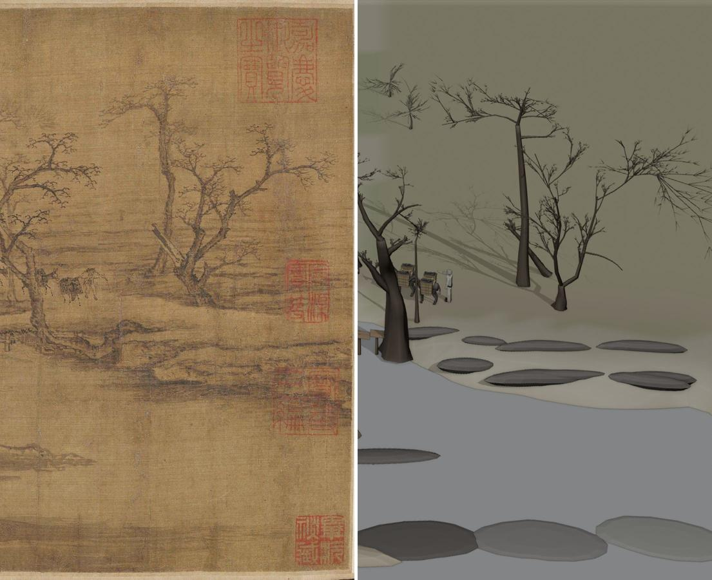
第六轮渲染第五轮渲染第四轮渲染第三轮渲染第二轮渲染第一轮渲染（修正前）有误与缺失（4）
编号
类型
判定
问题
修正
T0001
tree
有误
Fork base x ~630, y 956 is good. The flared plinth is smaller but still a cone. The right limb is a bare smooth whip ending x ~825, y 837. The crown edge at x 1000-1100, y 450-650 is a fan of straight wire rays.
Remove the plinth flare (max 1.2x trunk). Give the whip limb 2-3 claw twig clusters. Replace the wire fan with short bent claw twigs, crown edge at x ~1040.
X0001
structure
有误
Ledges are 7 separate dark lens slabs with serrated edges at x 160-1100, y 1000-1190, floating on a smooth pale slope. At x 0-350 the water starts at y ~990; the painted shore there is at y ~1140.
Extend the bank land at x 0-400 down to y ~1140. Replace the slabs with continuous, ragged, curving ink ledge strips that follow the contour and are flush with the slope.
X0002
structure
有误
Right place and width (y 1615-1770), but built as 3 raised oval lenses with seams at x ~330 and ~680 and stepped greys. There is a pale slab at x 0-140, y 1700-1760.
One continuous flat strip x 0-1100, y 1600-1770, ragged top edge, flush with the water. Dark at the left, fading smoothly to the right. Remove the pale slab.
P0001
person
有误
The arm is horizontal and the hand is empty; the painted short stick angled up toward the donkey is still missing.
Add a ~0.8 m stick in the right hand, angled up-left; raise the forearm about 30°.
人群
path by donkeys x 100-330 y 820-950：画中约 1 人，模型 1 人。Drover P0001 at x ~255-295, behind the donkey, in light clothes. The position is good. His right arm points straight forward with an empty hand; the painting shows the arm raised, holding a short stick.
模型多出的东西
(45, 1040) Wooden plank platform with legs at x 0-90, y 1015-1100, still present. The painting has only a tiny low fence at x 0-50, y 1000-1060.
(184, 850) Thin straight pole with a twig tuft at x ~184, y 680-1000, still present between the left tree and the donkeys. Not in the painting.
(120, 300) Small crowns at x 40-230, y 180-400 on short trunk stubs that end in mid-air, still present. The painting has only faint misty crowns.
(120, 950) The big left tree (probably owned by tile02) has a trunk ~100 px wide at x 70-170 with a flared base; the painted trunk is ~50 px wide.
(500, 700) Long dark cast shadows of trees and branches cross the field at x 0-1000, y 600-900. The painting has no cast shadows.
tile02 · 12.9–28.7 cm 3/5
正确 14 · 有误 10 · 缺失 0 · 忽略 1
The scene still reads as the painting: a bare-tree grove on the left bank, the driver and four pack donkeys walking left on the far path, a footbridge over the creek and the empty punt below it. The left bank now reaches x 0 and the left grove is denser. The footbridge spans the right width (x 470-980) on 8 thinner posts, but it is still a flat deck with tall board railings, not a humped pile bridge. Below y~1300 the tile is still flat grey water with raised pale lens-shaped slabs (X0008, X0009 and two dark slabs) where the painting has flat, dark, layered bank bands. Treeline tufts are still dark spiky stars, now with blurry horizontal streaks, and hard cast shadows still cross the far ground.
与上一轮相比：Improved: left bank terrain now reaches x 0 (no water at x 0-95); left grove denser; footbridge narrowed to x 470-980 with 8 thin posts instead of 4 thick ones. Worse: bridge gained tall board railings; X0008/X0009 now raised pale lens domes; a tall dome at x 0-150. Still wrong: flat deck, slabs in water, dark spiky tufts, cast shadows, reed tuft.
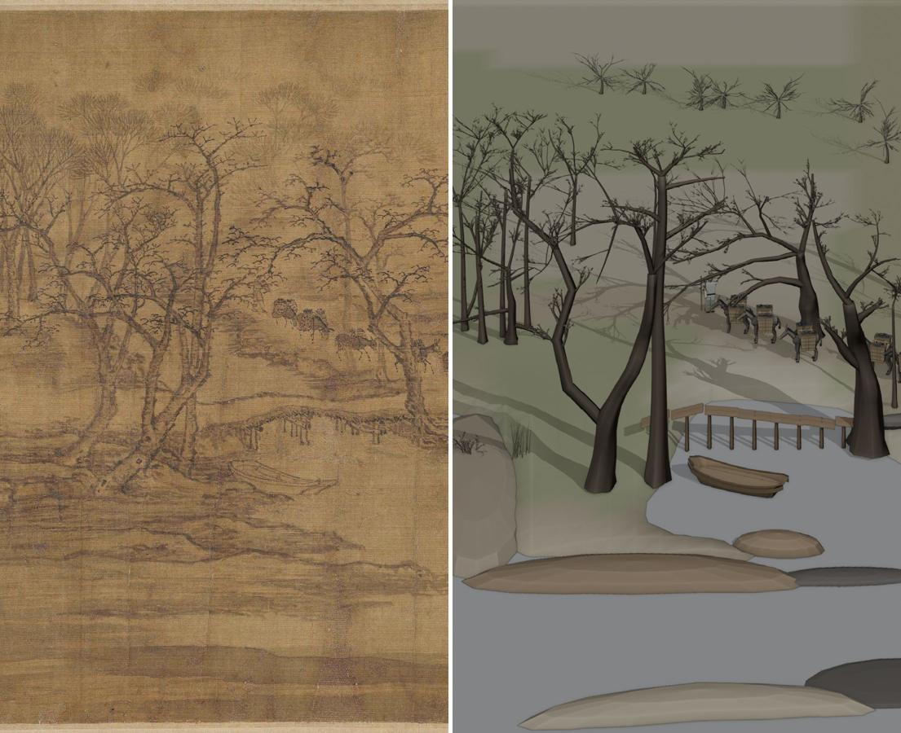
第六轮渲染第五轮渲染第四轮渲染第三轮渲染第二轮渲染第一轮渲染（修正前）有误与缺失（10）
编号
类型
判定
问题
修正
T0005
tree
有误
Right place (x 1040-1100, y 290-400); dark sparse twig star with blurred horizontal streaks; painting has a pale dense feathery fan tuft.
dense fine upward-fanning twigs, pale olive-grey, low contrast; remove streak cards
T0006
tree
有误
Right place (x 940-1060, y 190-300); dark spiky star crown instead of a pale feathery tuft.
same as T0005
T0008
tree
有误
Right place and height; dark open twig star, painting has a pale dense tuft.
same as T0005
X0007
structure
有误
Now x 470-980 on 8 thin posts (better), but deck is flat with tall vertical board rails ~30 px high; painting: humped deck, no rails, ~10 pile pairs.
remove the board rails; hump deck crest +20 px at x~620; 10 thin pile pairs
T0010
tree
有误
Right place; dark sparse star crown overlapping T0011, not a pale tuft.
denser, paler fan tuft
T0011
tree
有误
Right place; dark sparse star crown overlapping T0010.
denser, paler fan tuft
X0008
structure
有误
Now a raised pale-brown lens dome x 20-850, y 1360-1460 in grey water; painting has flat dark layered bank bands x 0-1100, y 1270-1420.
flatten to a low bank (height <5 px), darker brown, join to the bank above; extend to x 1100
X0009
structure
有误
Built as a pale raised lens x 160-1040, y 1670-1790; painting has a flat dark band x 300-1100, y 1580-1700.
replace with flat dark water/mud band y 1580-1700, or remove the prop
T0013
tree
有误
Right place and size; dark spiky star crown, painting has a pale feathery tuft.
denser, paler fan tuft
T0015
tree
有误
Right place and size; dark sparse spiky crown, painting has a round pale dense tuft.
paler olive-grey, denser fine twigs
人群
donkey path x 600-1100 y 680-920：画中约 1 人，模型 1 人。Driver P0002 at x 615-660, y 670-770 walks left ahead of the train with a staff; position and facing correct. Clothes pale grey-white, fine.
模型多出的东西
(75, 1200) Tall rounded pale dome x 0-150, y 1015-1420 with a vertical face at x~150; painting has a flat layered bank there.
(800, 1335) Small pale lens slab x 690-910, y 1300-1370 in water; nothing distinct painted.
(960, 1415) Dark grey slab x 820-1100, y 1390-1440 in water; painting has bank bands there.
(985, 1680) Large dark slab x 865-1100, y 1615-1740 in water.
(165, 1080) Spiky reed tuft x 145-190, y 1030-1125 on the bank; nothing distinct painted.
(500, 700) Long hard cast tree shadows across the far ground; the painting has none.
(700, 190) Blurry grey horizontal streaks around the treeline tufts y 160-300 (edge-on cards?).
tile03 · 25.8–41.6 cm 3/5
正确 13 · 有误 11 · 缺失 0 · 忽略 3
All bases still land on their painted points, and the farm hamlet reads as the same scene. The T0025 willow head now sits on the shed roof instead of its trunk cutting through H0001, the willow crowns T0025/T0027 read as one dense twig dome, the shed front is open with the seated figure visible, and X0013 is now built. But a new huge egg-shaped boulder (x 800-1065, y 1020-1420) stands in the open river, carrying the old stray shrub. H0001 and H0003 still have heavy stacked-thatch roofs with no gable, H0002 is still mostly hidden, and the grove trees are still sparse Y-fork skeletons on tall poles.
与上一轮相比：Improved: T0025 trunk no longer cuts H0001 and its head sits right; T0027 crown now visible; H0001 front open with the figure under the eave; X0013 now built; H0003 roof lower. Worse: a giant boulder now stands in the river carrying the stray shrub, plus a slab at the right edge. Still wrong: thatch roofs stacked and gable-less, H0002 hidden, skeleton grove crowns, tall T0028 poles, fence bush, shadows, backdrop edge, flat water.
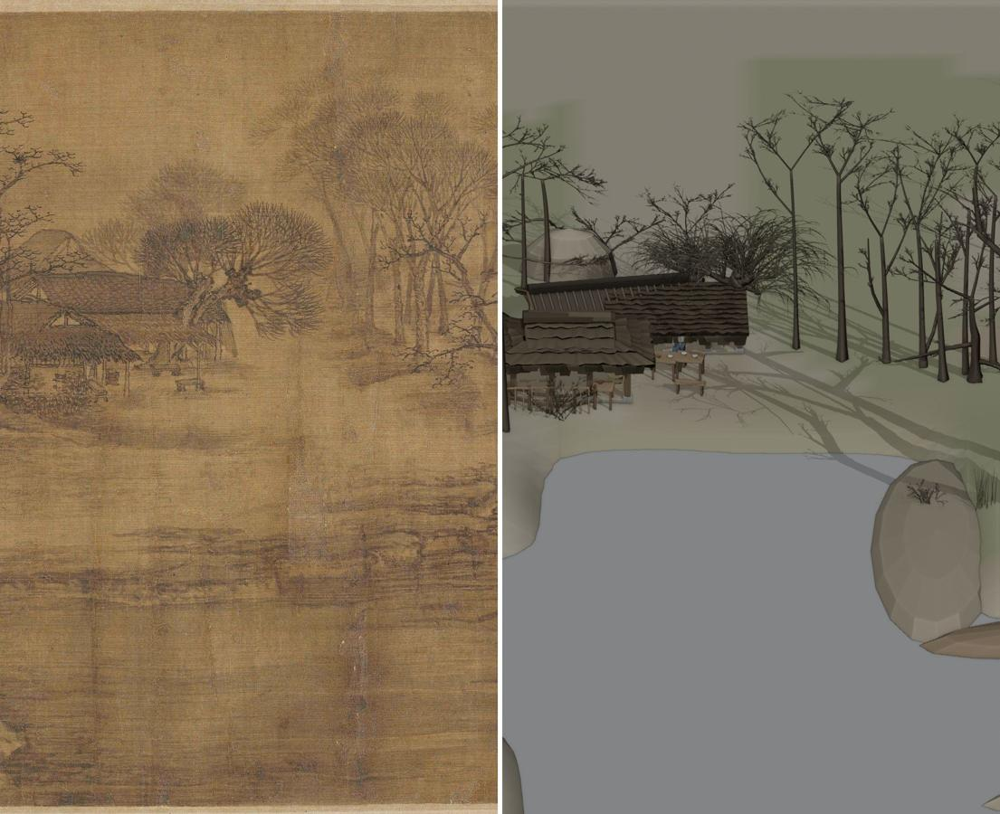
第六轮渲染第五轮渲染第四轮渲染第三轮渲染第二轮渲染第一轮渲染（修正前）有误与缺失（11）
编号
类型
判定
问题
修正
T0018
tree
有误
Still a sparse Y-fork skeleton at x 1000-1100; the painting has a soft dense grey crown at y 180-450.
dense pale fine-twig crown ~100 px wide, y 180-450
T0020
tree
有误
Base right (~935, 812), but the crown is a few long bare forks on a tall pole, not a dense twig mass at y 230-520.
Trunk to y ~800 right; crown is a sparse Y-fork, not the dense crown at y 300-630.
dense fine-twig crown ~125 px wide, y 300-630
T0023
tree
有误
Straight trunk to y ~795 right; top is a thin Y-fork, not a soft crown at y 190-340.
crown mass ~100 px wide at y 190-340
T0024
tree
有误
Bare Y top at y ~200-300; the painting has a pale misty crown 220 px wide.
broad pale dense crown x 540-760, y 150-290
T0026
tree
有误
Sparse bare stick tree at x ~410, top ~y 390; the painting shows a pale misty clump at x 330-490, y 350-470.
low dense pale crown at y 350-470; no long bare limbs
H0001
building
有误
Front now open on posts, but the roof is a tall box of 6-7 wavy thatch courses, top y ~620, eave ~745; painted lean-to top is y 697.
single low slope, top edge y ~697, eave y ~760, one thatch layer; roof height ~50% lower
T0028
tree
有误
Still two tall straight poles at x 50-110 rising far above y 300; the painting has a low pale clump at y 470-565.
height ~60% lower; pale dense crown, top y ~470, no bare trunk
H0002
building
有误
Dark ridge at y ~630 with a batten fringe; only strip y 630-690 shows; painted tile roof spans y 585-680 with a left gable x 80-150.
ridge to y ~590; add left gable triangle x 80-150, y 590-700; tiled slope texture
H0003
building
有误
Roof now two stacked thatch tiers x 0-300, y 690-810 (better), but still a flat-fronted box with no gable or king-post triangle.
one slope y 700-748 smooth, shaggy fringe y 748-800; add gable triangle x 105-175, y 690-725
X0013
structure
有误
Now built, x 55-240, y 500-610, but as a symmetric faceted grey hemisphere; the painted hill has a peak at (97,505) and a flatter right shoulder.
smooth asymmetric hill, peak at x ~97, shoulder down to (173,570); pale wash, no facets
人群
under the shed x 340-500 y 740-830：画中约 1 人，模型 1 人。Seated figure P0003 at x ~390, y ~750 behind tables F0003/F0001, now under an open eave; fine.
模型多出的东西
(935, 1220) Huge egg-shaped faceted boulder x 800-1065, y 1020-1420 standing in open water, with the stray shrub on top; painting shows only flat shore strokes.
(990, 1360) Flat tilted slab x 880-1100, y 1320-1400 in the water at the right edge.
(115, 880) Bare twig bush in front of the hut fence (x 65-165, y 830-930); the painting shows only the fence.
(700, 860) Long dark cast shadows of the grove trees across the ground and onto the water.
(800, 130) Green-grey backdrop panel with a hard edge at y ~120 and x ~490 behind the trees.
(550, 1400) Uniform flat grey water from y ~990 down; the painting shows horizontal shore and sandbar strokes at y 1050-1250.
tile04 · 38.7–54.5 cm 3/5
正确 15 · 有误 7 · 缺失 0 · 忽略 0
The bare-tree grove still matches well: trunks stand at their painted bases and the crowns reach the painted heights; the dome hut H0005, the walking pair and the small yard props sit in the right places. The near bank now has a few dark boulders and a thin ridge slab, a small step toward ink-washed rock. The worst errors are unchanged for several rounds: a grey water channel across y ~1260-1560 and down the right edge from y ~1010 where the painting shows dry misty bank, H0004 still an oversized layered-board box, the fence still ~50 px too near, and H0006 still a plank board. New regression: H0007's dark thatch dome is replaced by a large tiled gable roof over x ~150-290.
与上一轮相比：Improved: dark boulders and a thin ridge slab on the near bank give X0017/X0019 a little relief. Got worse: H0007 dome replaced by a large tiled gable roof; a pale slab appeared at x 0-140, y ~1080. Still wrong: water channel, H0004 size, fence ~50 px too near, H0006 plank board, haystack jar form, smooth near-bank rocks.
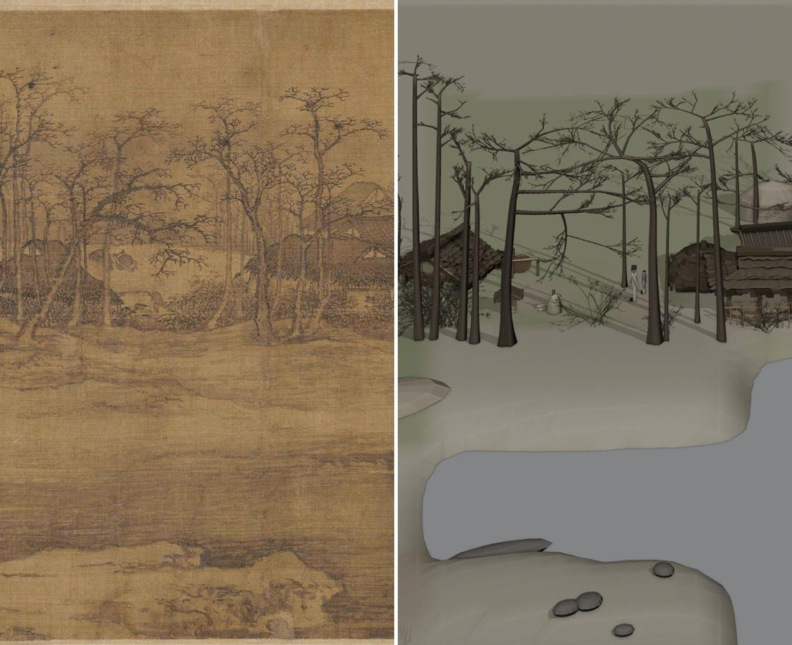
第六轮渲染第五轮渲染第四轮渲染第三轮渲染第二轮渲染第一轮渲染（修正前）有误与缺失（8）
编号
类型
判定
问题
修正
H0004
building
有误
Unchanged: layered-board box with raised upper roof at x 940-1100, y 620-825. Painting: small thatched gable at 1010-1100, 668-725.
Scale down ~2.5x: footprint x 1010-1100, eave y ~720; thatched gable roof, low walls. Check the override reaches the build.
X0014
structure
有误
Rail fence at x 920-1100, y ~855-905, under H0004's eaves. Painted rail is at y ~790-815, so ~50 px too near.
Move fence ~50 px toward the far side (top rail y ~790, base y 815).
X0017
structure
有误
Improved: 4 dark grey boulders at 430-650, 1570-1780. Still a smooth pale slab overall, and grey water down x 930-1100 beside it.
Irregular ink-dark rock lumps with crevices over 430-790, y 1555-1800; replace the right-edge water with dry bank.
X0018
structure
有误
Right place (420-450, 807-872), pale, but still a smooth jar with a dark post/knob on top, not a hatched straw stack.
Wider rounded-cone straw stack, vertical hatching texture, thin central pole; remove the knob.
H0006
building
有误
Still a slanted plank board on a post at ~270-350, 800-850, unchanged for four rounds. Painting: tiny dark thatched gable hut, open front.
Build tiny thatched gable hut 40 px wide, dark open front, base (326,872); delete the plank panel.
H0007
building
有误
Regression: dark thatch dome gone; a large layered/tiled gable roof now spans x ~150-290, y 600-775, eave corner on the base point.
Restore round dark thatch dome ~70 px wide at 247-320, 695-762; remove the large gable roof here.
X0019
structure
有误
Smooth pale bank; a thin slanted slab now marks the top edge at x 140-430, y 1505-1560 but no ink crevices.
Heightfield rock mass with sharp top ridge y ~1515-1560 across x 0-540, darker crevice material.
P0005
person
有误
Head-wrap reads as a tall dark box hat; trousers as pale as the jacket.
Lower, rounder head-wrap; darker trousers.
人群
grove path x 640-700 y 740-845：画中约 2 人，模型 2 人。Walking man (pale jacket, dark head-wrap) and small blue figure at the right place and scale, both on the ground.
模型多出的东西
(580, 1400) Grey water channel across y ~1260-1560 (x 70-1100) and down x 930-1100 from y ~1010; painting shows dry misty ground.
(1000, 720) Oversized layered-board box at 940-1100, 620-825 (H0004 overbuilt), hides T0031 and the conical mound.
(220, 690) Large layered/tiled gable roof at x 0-290, y 600-775; painting shows small thatched huts and a dome here.
(60, 1080) Pale angular slab at x 0-140, y 1050-1110 on the open bank; nothing painted there.
(15, 1780) Faint spike or reed props at x 0-30, y 1750-1800 on the near bank.
tile05 · 51.6–67.4 cm 3/5
正确 14 · 有误 6 · 缺失 0 · 忽略 0
The composition still matches: willow at left, bare grove in the centre and at right, huts on the bank, and every tree base sits on its painted point. H0009 now spans the painted width and T0043 and T0052 are fixed, but the X0020 mound turned into a pale lens-shaped slab x ~500-1050, y ~1050-1290 that reads as a giant boulder or upturned boat. H0008 is still a tilted lean-to plane with no peak. The willow lost its straight limb, but its whips still droop like grass. The grey-blue blob, green ground tint and hard cast shadows persist.
与上一轮相比：Improved: H0009 now spans the painted width (roof x ~530-840) and has no dome. T0043 scrub is dense and dark. T0044 reeds have the right height. T0052 no longer droops to the ground. The willow's straight limb is gone. Worse: X0020 became a large pale lens slab that reads as a boulder. Still wrong: H0008 is a tilted plane with no peak, H0009 has a hip roof with bands, T0047 is too short, willow whips droop, and the blob, green tint and cast shadows remain.
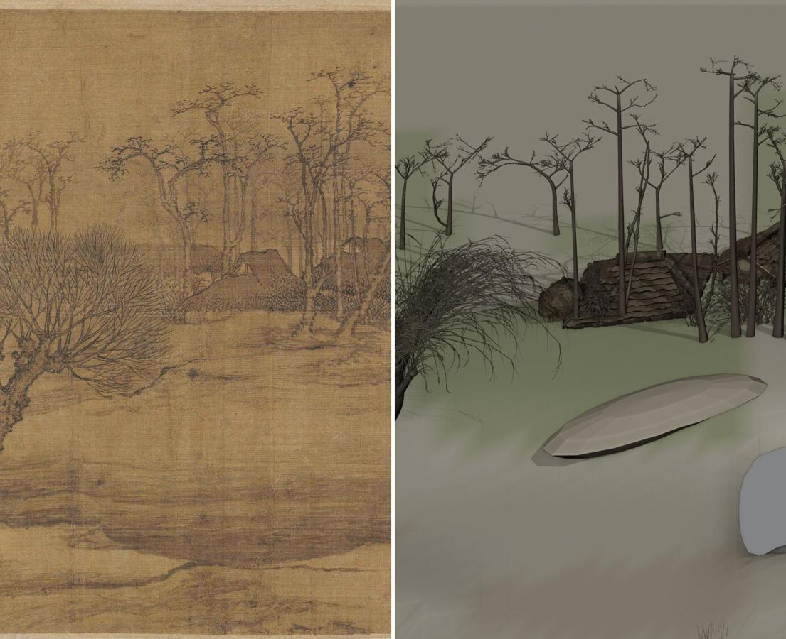
第六轮渲染第五轮渲染第四轮渲染第三轮渲染第二轮渲染第一轮渲染（修正前）有误与缺失（6）
编号
类型
判定
问题
修正
H0008
building
有误
Roof is one tilted plane rising from (910,715) to above (1085,630); no peaked ridge at y 665, pale gable not readable.
level the hut; symmetric steep thatch roof, ridge y 665, pitch ~50°; pale gable triangle at x 960-1010
T0044
tree
有误
Height now right (y ~1740-1800), but only a few sparse blades at x ~850-940; painted tufts span x 820-1100.
spread tufts across x 820-1100; denser, darker
T0047
tree
有误
Trunk at x ~840 is right, but crown top y ~390 vs painted 330; still too short.
height +15%, crown from y 330
X0020
structure
有误
Bank is now a pale faceted lens slab x ~500-1050, y ~1050-1290 with a hard shadow, like a boulder; painted is a broad low bank with ink edges.
remove the lens mesh; raise the terrain heightfield ~1 m over x 380-1100, front edge y ~1250; dark ink bank bands
H0009
building
有误
Width now right (x ~530-840, ridge y ~710), but hip roof with flat ridge x 590-770 and horizontal bands; painted is a single steep peak at 745 with hatched straw.
single peaked ridge at (745,700); gable left end with pale opening x 560-600; hatched straw, no horizontal bands
T0053
tree
有误
Straight limb gone, but crown is grass-like drooping whips falling to y ~1000-1100; trunk a thin column x 0-30, no knotted fork at y 950-1250.
whips fan upward into a dome y 630-950 from a knot at (170,970); thick knotted forked trunk x 0-90 down to y 1250
人群
whole tile：画中约 0 人，模型 0 人。No people in painting or 3D. Correct.
模型多出的东西
(775, 1170) Pale faceted lens-shaped slab x ~500-1050, y ~1050-1290 (the X0020 mound mesh); painting shows flat bank ground with ink lines.
(1040, 1405) Grey-blue rounded blob x ~975-1100, y 1250-1560; painting shows plain bank ground with ink washes.
(700, 640) Hard tree cast shadows across ground y ~550-950 and over hut roofs; painting has no shadows.
(550, 1000) Green-tinted ground y ~600-1250 and green haze at left x 0-130, y 340-650.
tile06 · 64.6–80.3 cm 3/5
正确 6 · 有误 3 · 缺失 0 · 忽略 1
The five pollarded willows stand on their painted bases with the painted leans, and the grove reads as the same scene. Crowns are now taller and denser than in round 7 (T0056 now reaches its painted top y~620), but T0061, T0063 and T0064 still top out at y~385-430 against painted y~170-300. Trunks are still smooth, uniform dark columns with a pale cup-like collar at every pollard head, where the painting has knotted, hollowed, mottled trunks. The dark-grey octagonal boulders at T0064 and the green backdrop card with hard edges remain.
与上一轮相比：Improved: crowns taller and denser everywhere; T0056 separate fork trunk removed and its crown now reaches painted height; right-edge limb gone. Worse: nothing clear. Still wrong: T0061/T0063/T0064 crowns low, smooth trunks with head collars, T0061 stub limb, T0064 boulders, green backdrop card, dark distant stick trees.
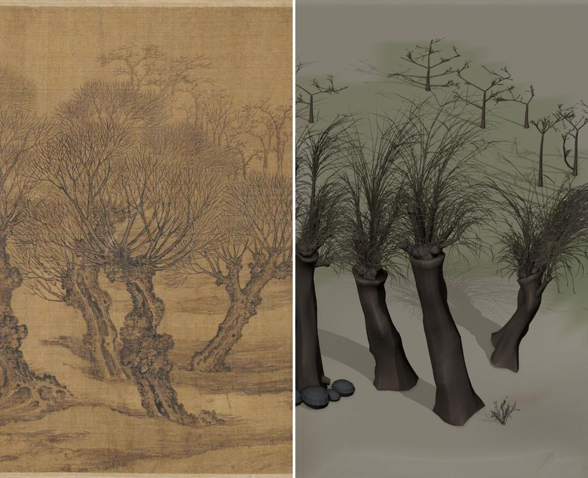
第六轮渲染第五轮渲染第四轮渲染第三轮渲染第二轮渲染第一轮渲染（修正前）有误与缺失（3）
编号
类型
判定
问题
修正
T0061
tree
有误
Foot and head right. Smooth dark column, upright stub limb at x~440-470 y 780-915, pale collar at head. Crown top y~385; painted ~170.
Crown 1.4x taller (top y~200); remove stub, add knob heads; knotted, bulging, mottled trunk; drop the collar rim.
T0063
tree
有误
Foot (330,1420) and lean right. Pale folded collar on the head; smooth trunk. Crown top y~415; painted ~300.
Remove the collar/flap; knotted, mottled trunk; crown 1.3x taller.
T0064
tree
有误
Smooth column at x 0-90; dark-grey octagonal boulders at x 0-200, y 1380-1470. Painted: knobbly root flare spreading to x~270. Crown top y~430 vs painted ~220.
Delete boulders; add bark-coloured root knobs to x~270, y 1400-1500; knotted trunk; crown 1.5x taller.
人群
whole tile：画中约 0 人，模型 0 人。No figures painted and none in 3D. Correct.
(600, 150) Green-tinted backdrop card with hard top (y~150) and left edges; painting has plain silk haze.
(985, 680) Two dark distant stick trees at x~920 and ~1050, bases y~660-700; painted right-hand distant trees are faint and stand at y~550-600.
tile07 · 77.5–93.3 cm 3/5
正确 7 · 有误 4 · 缺失 0 · 忽略 1
The willow grove stands on its painted bases, and the far pollard T0069, the far rail fence, the jar and now a dish-on-stand basin sit where painted. Crowns are a bit denser and T0066 now reaches y ~280 (painted ~230), but they are still broom-like strand fans, and the pollard heads keep smooth collar rings and upright stub 'fingers'. Trunks remain smooth dark columns without burls or hollows. The near bank is still the worst area: the pale faceted slab x 130-505, y 1500-1600 is still there, and both bank mounds are octagonal grey blocks instead of an eroded ink bank with rocks and roots.
与上一轮相比：Improved: F0006 is now a dish on a stand; crowns somewhat denser and T0066 taller (top y ~280); T0070 crown covers the left side. Worse: X0021 and X0023 blocks are larger. Still wrong: pale slab on the near bank, octagonal rocks, smooth trunks with collar/stub heads, plank slab and ladder fences at the shed, stray trees at (165,700) and (960,330).
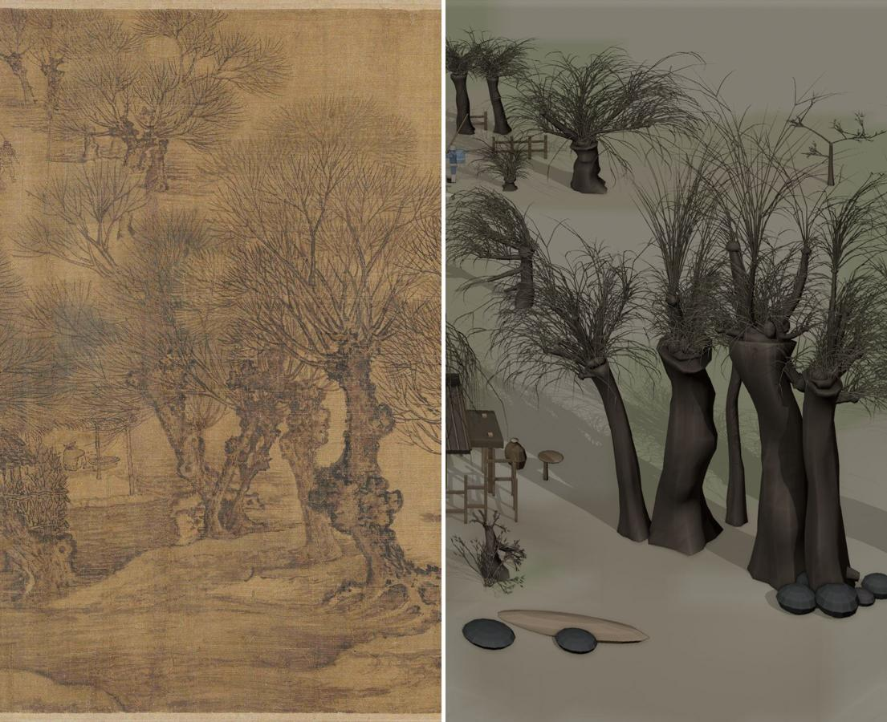
第六轮渲染第五轮渲染第四轮渲染第三轮渲染第二轮渲染第一轮渲染（修正前）有误与缺失（4）
编号
类型
判定
问题
修正
T0066
tree
有误
Twin trunk x 760-1010 on base; head collar at y ~900 with upright smooth stubs to y ~620; trunks smooth, crown a strand broom to y ~280.
Remove stub fingers and collar; add burls, 2-3 hollows, flared roots; replace strands with forked twig dome up to y ~230.
T0068
tree
有误
Trunk x 510-670 in place with a collar head at y ~860, but smooth and wide; painted head is a dark knobby mass y 850-960.
Replace collar with knobby burled head y 850-960; narrow trunk 20%; forked twig crown, top y ~500.
X0021
structure
有误
Four or five smooth octagonal grey blocks x 830-1100, y 1450-1540; painting shows a dark irregular rock-and-root mass forming the bank lip.
Replace with 2-3 irregular noise-displaced dark rocks plus root curves x 840-1100; raise bank lip 0.5 m.
X0023
structure
有误
Two octagonal blocks at x 40-170 and 270-380, y 1540-1630 plus pale faceted slab x 130-505, y 1500-1600; painting: eroded bank edge.
Delete slab and blocks; build ~1 m terrain step along y 1450-1620, x 0-560, dark rocks on its face.
人群
upper left x 0-60 y 330-480：画中约 1 人，模型 1 人。One figure at the left edge in both; fine.
grove, shed and near bank x 0-1100 y 500-1700：画中约 0 人，模型 0 人。No people in either; correct.
模型多出的东西
(320, 1550) Pale faceted plank-like slab x 130-505, y 1500-1600 on the near bank; not in the painting.
(100, 1065) Dark plank/tile slab x 55-145, y 1025-1110 at the shed; painting shows an open pole shed under twigs.
(90, 1200) Ladder-like rail fences x 5-180, y 1100-1300; painting has a woven wattle fence with brush.
(165, 700) Floating trunk with stub limbs x 105-220, y 640-770; painting has only twig sprays there.
(960, 330) Sparse forked bare sapling x 820-1100, y 200-460; painting has T0066's dense crown there.
(800, 700) Upright smooth stub 'fingers' with knob tips on pollard heads x 700-880, y 620-940.
tile08 · 90.4–106.2 cm 3/5
正确 8 · 有误 13 · 缺失 0 · 忽略 3
The scene still reads as the same place: sedan procession and two riders on the upper road, two tiled farmhouses under the giant willow T0078, and the donkey group on the lower road, all with bases close to the painted points. The long grey walls at top left are gone, but a small extra shack remains there, and the long-standing form problems are unchanged: post-and-rail fences instead of bound brushwood, T0078 an open cage of long whips instead of a dense fine-twig dome, palm-like columnar pollard trunks, plank-coarse roof courses, a black sedan cap with green spikes, and a male rider for the hooded woman P0017. Stray stones remain at lower right and lower left, and the lower third is flat where the painting shows banked earth.
与上一轮相比：Improved: long grey walls at top left removed and extra house reduced to a small shack; P0015 now upright; donkey ears longer. Worse: none clearly. Still wrong: extra shack, post-and-rail fences, cage-like T0078, palm-like pollards, plank roof courses, black sedan cap, male P0017, P0020/P0021/P0012 loads, stray stones, extra trunk by H0012, flat lower terrain.
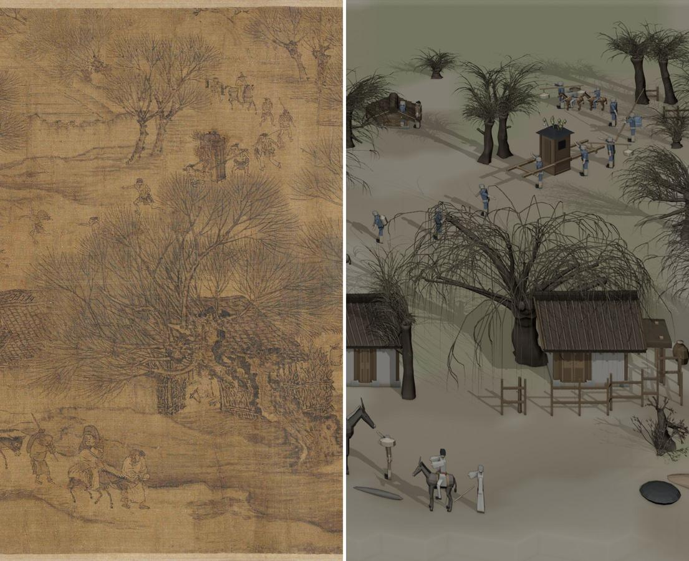
第六轮渲染第五轮渲染第四轮渲染第三轮渲染第二轮渲染第一轮渲染（修正前）有误与缺失（18）
编号
类型
判定
问题
修正
T0071
tree
有误
Base (1040,330) right, but trunk is a smooth straight column with a flat tuft head: reads as a palm, not a knobbly leaning pollard.
Knobbly swollen head, 3-5 thick fanning limbs then short twigs; trunk thinner, leaning left ~10°.
X0024
structure
有误
Still a post-and-rail timber fence (x 880-1100, y 1110-1320); painting shows bound brushwood with dense upright twigs.
Fence style = brushwood: dense vertical twigs between stakes, two binding bands, height ~1.3 m.
H0011
building
有误
Roof x ~610-970, y ~930-1130 right, but courses are ~10 px planks (painted ~5 px tiles); front wall fully exposed; annex is a flat dark slab.
Halve tile course width; annex x 960-1060 as small thatch lean-to; T0078 twig curtains over front to y ~1250.
T0076
tree
有误
Trunk ~30 px right of base (at x ~950); smooth column with tuft head reads as a palm; painting shows gnarled leaning pollard.
Pole held vertically with a white disc on top; painting shows pole over right shoulder with a bundle.
Pole over right shoulder, tip at (110,1330), round bundle at rear end; no backpack.
P0021
person
有误
Blue box backpack instead of large round bundle.
Load = large round cloth bundle on the back.
P0012
person
有误
White round trays hang from pole; painting shows square boxes.
Load = two square wooden boxes.
P0015
person
有误
Upright now, but holds a stick downward; painting holds halter rope with both hands.
Rope from both hands to A0010's head.
人群
upper procession road x 590-950 y 220-600：画中约 8 人，模型 9 人。Placement matches; riders astride. All men share blue tunic and box backpack; P0012 carries white round trays, painted square boxes.
middle slope x 50-510 y 560-780：画中约 3 人，模型 3 人。Positions good. P0016 fully exposed (painted half-hidden in twigs); P0021 blue box instead of round bundle.
lower road x 0-500 y 1330-1650：画中约 3 人，模型 3 人。Positions good. P0017 male with black hat; P0020 holds vertical pole topped by a white disc; P0015 now upright, better.
distant farmstead x 170-250 y 330-410：画中约 2 人，模型 2 人。Visible but standing against the extra shack.
模型多出的东西
(150, 350) Small wooden shack with gable (x 60-240, y 290-410); painting shows field banks and tiny far farmstead. Remove or shrink to far scale.
(1010, 1580) Dark octagonal stone (x 940-1080, y 1540-1620) and pale slab (x 1040-1100, y 1520-1560); not painted.
(100, 1580) Long grey boulder/slab (x 25-180, y 1560-1600) beside the donkey; not painted.
(1030, 330) Post-and-rail fence pieces x 970-1100, y 280-390 near T0071/T0076; not catalogued.
(195, 1150) Dark vertical trunk beside H0012 door (x 175-215, y 1000-1280); painting shows only T0078 fronds.
(40, 1380) Tall grey donkey (x 0-95, y 1280-1520), head ~100 px higher than the painted animal at y 1400-1460.
tile09 · 103.3–119.1 cm 3/5
正确 12 · 有误 12 · 缺失 0 · 忽略 2
The farmstead, slope, grove, knoll and road group still read as the painted scene: H0017 with layered thatch and fenced verandah, the lying buffalo and standing ox, the forked well-sweep post, the thin grove trees and the rider group are in place. The worst problem is unchanged: an extra white-walled house with a ribbed roof (x 790-1100 y 960-1240) covers the road edge and the T0082 trunk. The near-bank rock pads became five long dark grey spindles that still read as stepping stones or logs, the knoll X0029 is still a smooth pale disc with two cone rocks, the dike X0031 is a pale floating spindle, and the rollers are still white hooped barrels. The donkey A0012 is tall and horse-like, the rider is still a man in a tall hat, and P0024's buckets came back.
与上一轮相比：Improved: H0013 white box replaced by a roofed hut; the extra small hut above H0013 is gone; T0095 lean reduced; the dike X0031 is thinner. Worse: P0024 buckets returned; near-bank pads turned into long spindles, still wrong; obelisk became two cones. Still wrong: extra white house over T0082, T0092 trunk offset, thick willow trunks, barrel rollers, prone donkey A0013, male rider, flat terrain, no furrows.
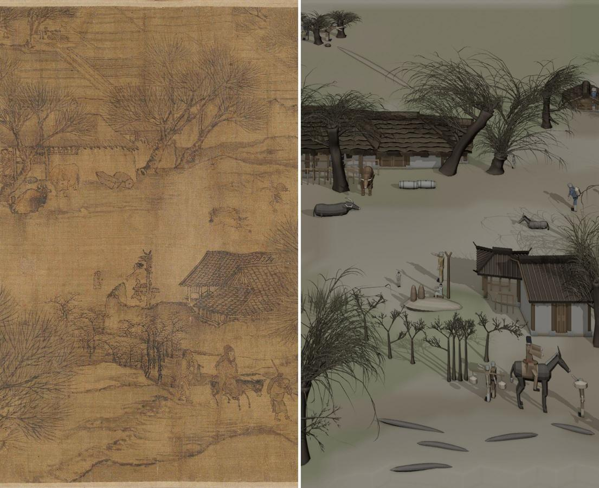
第六轮渲染第五轮渲染第四轮渲染第三轮渲染第二轮渲染第一轮渲染（修正前）有误与缺失（14）
编号
类型
判定
问题
修正
H0013
building
有误
White box gone; now a dark brown wooden hut with a low roof at x 960-1100 y 290-415; painting shows a pale thatched pointed gable.
Thatch material, gable end to viewer, white gable wall, ridge about 75 px above base 1052,425.
T0082
tree
有误
Whip crown at x 880-1100 y 760-1000 fine, but the trunk at 1030,1270 is hidden behind the extra white house; only a sliver shows at x 1095.
Remove the extra house so the trunk and lower crown at 1030,1270 show.
A0012
animal
有误
Placed right (x 775-990), but horse-like: legs very long, body top at y 1335 vs painted 1395, head raised with upright ears; painting has head lowered.
Height about 35% lower, legs 30% shorter, body rounder; head lowered to about y 1420; brown saddle cloth.
A0013
animal
有误
Still lies prone on its belly at x 800-910 y 790-845, head raised at the left; painting shows it rolling on its back, legs in the air.
Pose: rotate 180° about the body axis (on its back), legs raised; head at the left; base 853,845.
T0084
tree
有误
Base right (about 726,620) but the trunk is a thick smooth flared stump; painting has a forked leaning trunk with thin limbs.
Trunk diameter about 50% thinner; fork into two leaning limbs at about 1/3 height.
X0028
structure
有误
Terrain flat; the octagon pads became five long dark grey spindles at x 280-1080 y 1490-1650, read as logs or stepping stones.
Remove the spindles; slope terrain down from y 1570 with low irregular ink-dark earth ridges merged into the ground.
X0029
structure
有误
Still a smooth pale raised disc at x 375-560 y 1090-1150 with two smooth cone rocks at x 400-460; painting has a craggy rock and grassy knoll spreading to x 720.
Irregular earth knoll x 390-720 y 1040-1200; replace cones with one tall craggy brown rock about 70x150 px at x 380-460.
T0087
tree
有误
Base near 545,620, but the trunk is still a thick smooth log.
Trunk diameter about 50% thinner; 3-4 branching limbs below the crown.
O0009
prop
有误
Unchanged: two white cylinders with dark hoops at x 355-495 y 640-680, reading as barrels.
Remove the hoops; matte stone grey-brown material; slightly tapered rough ends.
X0031
structure
有误
Now a thin pale smooth spindle on the right diagonal (x 140-400 y 170-320), floating like a pole; no furrows.
Low earth-coloured ridge about 25 px wide merged into the ground; add horizontal furrow lines in the field.
T0092
tree
有误
Whip crown good (x 0-330 y 1050-1700), but the trunk still stands at x 0-30, about 145 px left of base 170,1700.
Move the trunk to x 170; check for a tile-edge clamp.
T0095
tree
有误
Base correct (about 150,694) and the lean is now small, but still a thick smooth log in front of the H0017 eave.
Trunk 50% thinner; add forked limbs at about 1/2 height.
P0022
person
有误
Rider still a man in a tall black hat holding a box-like load; painting shows a woman in a long hooded cloak.
Female model, long hooded brown cloak; remove the box load.
P0024
person
有误
Regression: two white buckets hang from the pole again; painting shows one pole over the shoulder with a soft bundle.
Pole over right shoulder with one soft rounded bundle behind; no buckets.
人群
far field x 0-300 y 40-200：画中约 3 人，模型 3 人。Figures among the stumpy far willows; farmer bends; roughly in place.
farmyard x 0-560 y 500-650：画中约 4 人，模型 3 人。Figures at the left edge and on the verandah; acceptable.
slope x 600-1100 y 280-800：画中约 2 人，模型 3 人。Small figure near 788,623 and the running man near 1000,730 present; the running man wears a blue backpack not painted. A blue figure stands on the H0013 roof at about 1085,340.
mound x 330-560 y 950-1110：画中约 3 人，模型 3 人。Pointing man, seated child and standing child in place, on flat ground beside the disc rather than raised behind the rock.
road x 600-1100 y 1270-1560：画中约 4 人，模型 4 人。Rider seated; two walkers behind the donkey with pole and buckets; right walker carries a white disc over his head instead of a pole with a round bundle.
模型多出的东西
(950, 1100) White-walled house with ribbed dark roof and double door, x 790-1100 y 960-1240, covering the road edge and T0082; not painted there.
(680, 1570) Five long dark grey spindle shapes across x 280-1080 y 1490-1650; painting has ink-washed earth ridges.
(910, 410) Thick dark willow trunk at x 895-930 y 350-470 below the T0084 crown; painting shows only crown twigs there.
tile10 · 116.2–132.0 cm 3/5
正确 31 · 有误 11 · 缺失 1 · 忽略 8
Still reads as the same scene: continuous thatched tea sheds with diners, a dark horse and the hanging board, railing shed H0018 under the big willow T0099, far lane with porter and donkey, low far thatch row with a gate frame, near-bank willows and a moored boat. Gains this round: gate X0036 now stands as posts with a lintel, T0105 crown is wider, and the reeds are denser. Worst remaining problems: (1) the boat X0040 is still a short high tub in a large open-water area x 0-500 y 1100-1800, with a flat plank rudder, no ladder and two floating rings; (2) T0102 is still a star of thick straight limbs from one knot at ~(620,1500); (3) the top-left building is now a tall gabled tile hall x 0-290 y 0-240 instead of the small hexagonal pavilion, and it still buries T0107/T0108. Small interior props (counter, dog, small tables, stool F0009) are still unreadable or the wrong prop.
与上一轮相比：Improved: X0036 gate now built as posts with a lintel; T0105 crown wider; reeds T0098 denser; H0023 roof runs to x ~470. Worse: top-left pavilion became a tall gabled tile hall; P0034 staff longer; second floating ring. Still wrong: boat tub, plank rudder, no ladder, open water, T0102 spokes, T0107/T0108 buried, F0009/F0010/F0014/F0018/dog/vendor, thick trunk hiding P0029, buffalo, extra trunks.
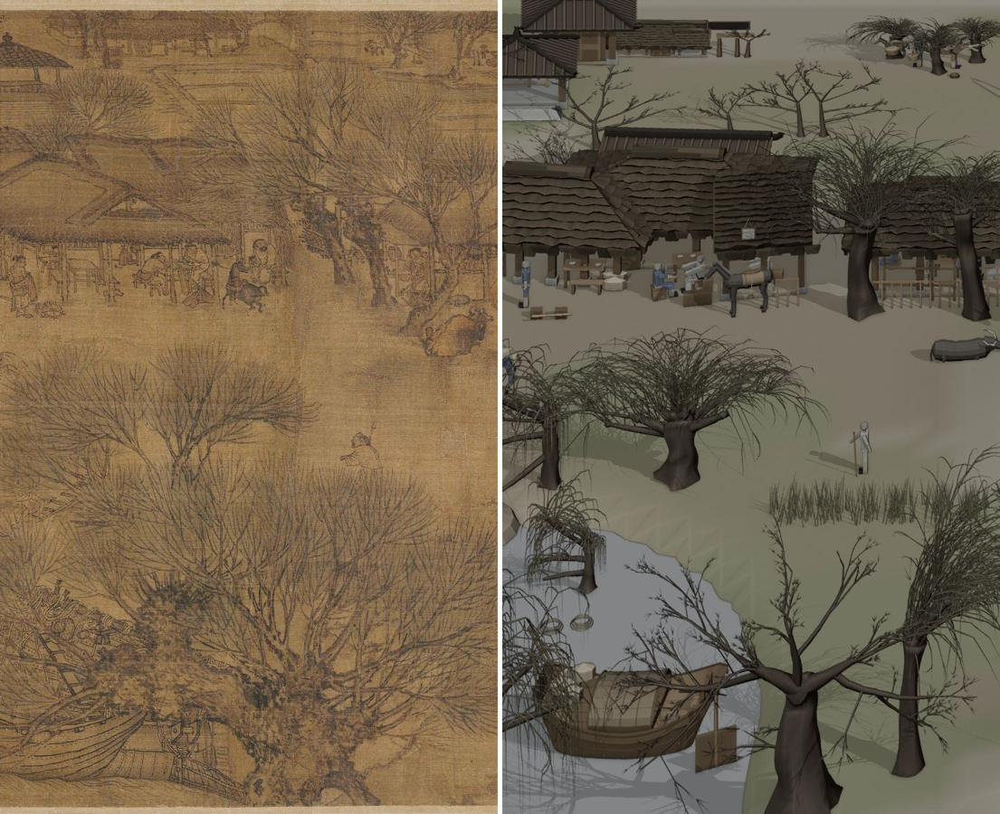
第六轮渲染第五轮渲染第四轮渲染第三轮渲染第二轮渲染第一轮渲染（修正前）有误与缺失（16）
编号
类型
判定
问题
修正
T0098
tree
有误
denser than round 7 but still straight vertical spikes x 590-1100 y 1060-1160; painted fine curved fan strokes
blades thinner, curved and splayed outward, height 30% less
F0009
furniture
有误
still built as a railing frame x 600-650 y 610-690 behind the horse; painted small stool
replace by a stool 24x24 px at base (610,622)
T0102
tree
有误
unchanged: thick straight limbs radiating from one knot at ~(620,1500); painted gnarled trunk with dense fine twig crown
limbs 50% thinner, curved, 2-3 branching orders; dense twigs x 100-1100 y 1050-1800
F0010
furniture
有误
table at (564,600) not readable; hidden by horse and seated figure
move table 30 px up/left so its top shows above the horse's back
O0012
prop
有误
still a flat pale plank x 410-520 y 1600-1720 beside the hull; painted big rudder frame on a second stern
rudder blade 120 px on a stern post, half submerged, tiller above deck
F0014
furniture
有误
no counter at (278,600); pale white heap x 230-280 y 595-630 instead
low dark wooden counter 45x55 px, base (278,600); remove pale heap
A0018
animal
有误
no dog readable at (249,657)
dog lying at base (249,657), mid-brown, 40x30 px, on the floor
T0107
tree
有误
not visible; base (202,130) behind the tall top-left gabled hall
shrink/replace that hall with a pavilion x 0-160 y 70-200
T0108
tree
有误
not visible; base (135,125) inside the top-left hall
same as T0107
F0017
furniture
缺失
no ladder; painted ladder leans from (136,1530) up to (90,1400) against the boat
build ladder: 2 rails 30 px apart, base (136,1530), top (90,1400)
F0018
furniture
有误
no small table at (109,582); only posts there
small table 38x35 px at base (109,582), clear of the post
X0040
structure
有误
boat x 120-460 y 1450-1680 still a short high tub with box cover; painted long low hull, heaped cargo
hull 2x longer, sides 30% lower, bow to x 0; heaped bundles x 50-300 y 1280-1420
P0038
person
有误
vendor behind the counter not visible at (275,582)
seat at (275,582) behind the counter, facing the back wall
P0034
person
有误
pole held as a walking staff touching the ground; painted short rod over the shoulder
pole 40 px, resting on the shoulder, top tilted back
P0029
person
有误
hidden behind the thick trunk x 1000-1085
thin that trunk to ~20 px or move it to x 1090
P0033
person
有误
only a blue fragment readable behind the railing
raise seat 10 px or lower railing so head and shoulders show
人群
far lane x 780-1100 y 60-160：画中约 2 人，模型 3 人。porter with baskets and donkey read well; one extra small figure at x ~1060 among the willows
tea sheds x 0-660 y 520-700：画中约 8 人，模型 5 人。standing man at left, P0037, P0036, P0035 visible; P0038 vendor not readable behind counter place
H0018 behind railing x 830-1100 y 540-630：画中约 3 人，模型 1 人。only a blue fragment at x ~860; P0029 hidden by the thick trunk x 1000-1085
bank x 750-850 y 900-1050：画中约 1 人，模型 1 人。P0034 present; pole ~120 px upright to the ground like a staff
模型多出的东西
(150, 120) tall gabled tile hall x 0-290 y 0-240 with pale terrace; painted small hexagonal pavilion x 0-160 y 70-200
(1045, 600) thick trunk x 1000-1085 base ~700 in front of H0018; painted trunk there is thin
(1020, 770) lying grey water buffalo x 930-1100 y 730-800; painted lumpy boulder x 900-1080 y 690-780
(1070, 190) pale angled slab x 1040-1100 y 170-200 on the far lane; not painted
(250, 1450) open water x 0-500 y 1100-1800; painting has bank there, water only near the hulls
(215, 1370) two pale floating rings x 160-270 y 1355-1395; not painted
(110, 1000) extra pollard trunk x 86-128 base ~1040 left of T0105; painting has only crown branches
(190, 1220) small willow trunk x 175-210 y 1150-1290 at the water edge; not painted
(900, 1500) slim trunk x 866-928 y 1350-1700 with willow crown; painting has only T0102 branches
(725, 540) pale wall plane x 685-765 y 440-640 at H0019's right end behind T0099
tile11 · 129.1–144.9 cm 3/5
正确 41 · 有误 9 · 缺失 2 · 忽略 6
Reads as the same scene: left shop with gallery, tea-house tables, eating shed, two-storey house, pavilion terrace, greeting group, quay porters and three moored boats under willows. Gains: X0048 ladder now rises from the boat stern, the rudder sits on the stern post, X0049 coil is on the post top, T0116 is no longer white. Worst: the top-row roof x0-590 y0-130 still hides T0117/T0118/T0119; the slope porters stand on a round island in the water instead of on the bank; X0052 is still a cliff slab plus a stray octagonal disc; O0018 sacks are lens discs; no pennants on X0047.
与上一轮相比：Improved: X0048 ladder rises from boat stern; rudder O0021 moved onto the stern post; X0049 coil on post top; T0116 foliage dark green; X0045 panel full length; X0052 now reaches west. Worse: slope porters now on a round island in water; stray octagonal disc by the sandbank. Still wrong: top-row roof hides T0117-T0119, cliff sandbank, flat X0044, disc sacks O0018, no pennants, no lantern post, H0027 not pyramid.
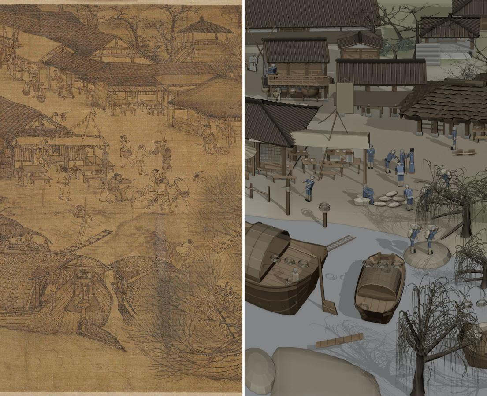
第六轮渲染第五轮渲染第四轮渲染第三轮渲染第二轮渲染第一轮渲染（修正前）有误与缺失（16）
编号
类型
判定
问题
修正
H0027
building
有误
Pavilion x800-1075 y60-170 shows a large triangular gable face; painted roof is a square pyramid with finial.
roof.type = pyramid (four equal hips to one apex) + finial.
O0018
prop
有误
Now 6-7 flat lens-shaped discs lying x590-720 y860-955; painted heap is 5-6 long cylindrical sacks.
Long rounded cylinders ~60x20 px, stacked in a heap, axis east-west.
T0117
tree
有误
Forked trunk at x570 y30-200 still hidden by H0029 and the top-row roof.
Lower/shorten top-row roof x330-740 so trunk and crown show above y~140.
X0043
structure
缺失
Only a small pale box sits on the back table at ~(480,710); no lantern post.
Hexagonal box lantern ~35 px on a wooden post standing at (478,738).
X0044
structure
有误
Rung plank x325-540 y1510-1580 still lies flat on the water before the sandbank.
Right end on big-boat stern (560,1450), left/low end on sandbank (360,1600); tilt.
X0046
structure
有误
Bank edge stops at y~1040 for x550-900; slope porters stand on a separate round island x730-940 y1100-1220 in water.
Replace island with continuous bank sloping to water at y~1200 for x600-900.
T0118
tree
有误
Bare tree x330-480 y0-130 fully hidden by the top-row roof reaching y0.
Lower that roof so its ridge sits at y~140.
X0047
structure
有误
Slanting pole x340-430 y510-800 plus an A-frame of thick poles above the awning; no pennants.
Thin strings from pole top to eaves with small triangular pennants every ~15 px.
T0119
tree
有误
Tree tip x250-320 y0-60 hidden by the top-row roof.
Lower that roof so the tip shows.
X0052
structure
有误
Raised smooth slab x130-555 y1580-1800 with cliff edge plus a separate octagonal disc x0-135 y1580-1790; painted is one low contoured bank from y~1490.
One continuous low heightfield x0-650 from y1490, gentle edge; delete the disc.
X0053
structure
缺失
Only two crossed slanting poles x5-135 y110-300; painted is a tall open timber gate scaffold.
Build open scaffold of thin posts and crossbars x0-120 from y335 up to y100.
P0041
person
有误
Stands on an island disc in water at ~(845,1150), arms straight out.
Put on continuous bank slope at (838,1185), arms holding sack on back.
P0044
person
有误
Same island at ~(770,1150), arms straight out.
Stand at (760,1185) on the bank, bent with load.
P0051
person
有误
At ~(290,860) arms spread with a short stick; does not grip pole X0047.
Both hands on the pole; shift onto the pole foot.
P0052
person
有误
Not visible; tea-house roof covers (269,558).
Trim the tea-house roof north edge so the street figure shows.
P0053
person
有误
Shopkeeper not identifiable beside the cask.
Stand at (265,372) behind counter, visible.
人群
street greeting group x540-800 y600-800：画中约 5 人，模型 5 人。Good; handclasp and soldier with tall black cap read well.
quay porters x660-960 y750-960：画中约 5 人，模型 5 人。Bent porters present among willow twigs; sacks are discs not long sacks.
bank slope x730-890 y1080-1190：画中约 2 人，模型 2 人。P0041/P0044 feet ~(770,1150),(845,1150), on a round island in water, both arms stuck straight out.
left shop and tea house x0-520 y250-930：画中约 6 人，模型 4 人。P0057 on gallery visible; P0053 not identifiable; P0052 hidden under tea-house roof; P0051 not gripping pole.
boats x0-1100 y1100-1800：画中约 1 人，模型 1 人。P0054 pale figure on big-boat deck ~(230,1290), fine.
模型多出的东西
(295, 65) Large tiled roof x0-590 y0-130 on the top row; hides T0117/T0118/T0119
(835, 1160) Round raised island disc x730-940 y1100-1220 in the water under the slope porters
(65, 1690) Octagonal raised disc x0-135 y1580-1790 beside the sandbank
(55, 880) Slanted rail/trestle on posts x0-110 y840-920 on the quay
(1020, 695) Small plank/bench lying on the street in front of H0025
(20, 700) Grey round umbrella-like disc at the left edge x0-45 y670-725
(450, 540) A-frame of two thick poles above the X0050 awning x430-470 y480-600
tile12 · 142.0–157.8 cm 3/5
正确 26 · 有误 6 · 缺失 4 · 忽略 4
The scene reads as the same place: shop row and timber frames on the upper street, the big hip-roofed riverside restaurant H0032 with its round mat umbrella and lattice annex, the willow on the bank and the large cargo boat B0004 lower right, now with its round stern toward the camera. The upper-street frames are now leaning crossed poles and the seated man sits at street level at F0041, but a narrow railed balcony pavilion still stands at x 990-1100 y 170-460. B0004's left rim is still ~60-100 px right of the painted rim, its hatch planks are a board stuck on the hull side, and the lowered mast is not visible. The bank still ends in a pale tongue with a cliff edge, the willow trunk is thick and straight, and the shrub T0122, banner G0002 and screen F0040 are still missing.
与上一轮相比：Improved: B0004 now shows its round stern toward the camera with a mat dome; timber frames are leaning crossed poles, not post-and-lintel; P0060 sits at street level and F0041/P0058 are visible; G0003 sign is now tall; lattice screen F0036 built; X0056 is a mound; B0007 cabin figure moved near its painted place. Worse: hatch planks became a board on the hull side. Still wrong: balcony pavilion, B0004 left rim offset, mast, X0057 pole rack, G0002, F0040, T0122, willow trunk, X0060 roof, extra left tree, bank cliff, pale blocks in water.
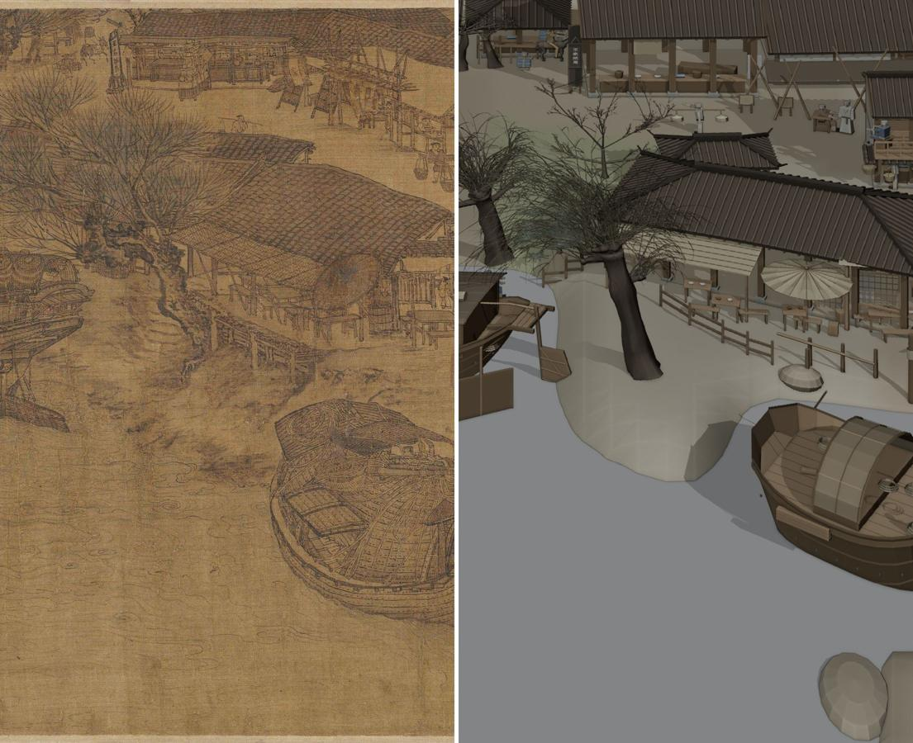
第六轮渲染第五轮渲染第四轮渲染第三轮渲染第二轮渲染第一轮渲染（修正前）有误与缺失（13）
编号
类型
判定
问题
修正
B0004
boat
有误
Stern now faces camera with mat dome, but left rim runs (710,1040)-(770,1300); painted rim (645,990)-(660,1200)-(700,1350).
Move hull ~60 px left at top and ~90 px left at y 1300, or widen beam 1.25x on the left side.
H0031
building
有误
Back roof planes y 0-130 fine, but a narrow tiled pavilion with railed balcony still at x 990-1100 y 170-460.
Remove the balcony pavilion; leave open ground with porter P0056 and the A-frames there.
O0024
prop
缺失
No lowered mast visible over x 830-1055 y 1115-1165; only a short stub at (845,1140) beside the dome.
Lay a 10 m lowered mast on trestles along the deck, top of the dome, spanning x 830-1055 at y ~1140.
F0040
furniture
缺失
No small screen at (899,755); a table and stool stand there.
Place a 0.6 m upright screen at base (899,755) beside the umbrella pole.
O0027
prop
有误
Single board fixed on the hull's outside at x 770-895 y 1225-1310; painted 3-4 hatch planks lie on deck x 685-860 y 1185-1325.
After moving the hull left, lay 3-4 flat hatch planks on the stern deck, not on the side.
X0057
structure
有误
Rail (560,670)-(770,870) good, but separate pole rack (780,810)-(1010,880) still stands; painted continuous railing with plank walkway.
Remove the pole rack; extend one railing to (1010,915) with walkway planks beside it.
G0002
sign
缺失
No hanging cloth banner at x 697-737 y 128-205; only a post near (725,200).
Hang a pale cloth banner 0.3 x 0.8 m from the frame at x 697-737 y 128-205.
T0121
tree
有误
Crown good, but trunk is a thick straight cone (~70 px wide) to base (450,910); painted trunk thin, snaking x 385-440 y 600-850.
Trunk 60% thinner with S-bends, base at (430,860); add dark forks at y 520-650.
T0122
tree
缺失
No dense dark shrub at (242,615); only willow whips and the fence there.
Add a dense dark rounded shrub ~1.5 m tall, crown x 185-350 y 495-615.
X0060
structure
有误
Open post frame at (180,100) still under a big tiled gable roof x 5-275 y 0-70; painting shows a ~50 px thatched booth.
Size 1.2 x 1.0 m, thatch cover; remove the large tiled gable roof.
P0059
person
有误
Bent servant at (924,745) not readable; stools and tables crowd the spot.
Check placement at (924,745), clear of stools F0038/F0039.
P0055
person
有误
Standing man at (1074,748) beside the lattice not visible.
Check he is not inside the annex wall; place in front of the screen F0036.
P0064
person
有误
Rider still lacks the round pack or large hat above his back.
Add a round bundle on his back or a wide hat.
人群
upper street x 100-1100 y 50-460：画中约 8 人，模型 8 人。Rider P0064, porters P0062 and P0056 readable; P0060 now seated at street level by F0041 and P0058 standing beside him; an extra figure stands on the balcony at ~(1035,320).
H0032 front x 550-1100 y 640-810：画中约 3 人，模型 1 人。Standing P0055 and bent servant P0059 not clearly readable among tables and the lattice.
left moored boat x 0-230 y 590-830：画中约 1 人，模型 1 人。Figure now near (105,700), close to the painted head at (122,680).
模型多出的东西
(1045, 315) Narrow tiled pavilion with railed balcony x 990-1100 y 170-460 and a figure on it; painting has open ground and A-frames.
(85, 520) Large straight-trunked tree x 30-130 y 400-650; painting shows only willow branches and the moored boat cabin there.
(140, 30) Large tiled gable roof x 5-275 y 0-70 above X0060; painting has trees and a small booth.
(450, 1050) Pale bank tongue with vertical cliff edge x 240-760 down to y ~1170; painted bank slopes softly into the water.
(985, 1690) Two pale rounded blocks x 870-1100 y 1580-1800 in open water; painting shows only ripples.
(230, 880) Loose rudder/board x 195-260 y 840-920 standing on the bank edge by B0007.
tile13 · 154.9–170.7 cm 3/5
正确 18 · 有误 7 · 缺失 0 · 忽略 5
The tile reads as the same place, and the round-7 boat problems are mostly fixed. P0070 now stands on a deck between the boats at about (295,765), not in open water. B0007 has arched mats on its forward cabin, the coil row has about 7 coils along x 315-560, the ladder is at the painted x, and the mooring post and balustrade X0067 sit at their painted bases. The hall's lower storey now has lattice and a balustrade. Still wrong: the white block at x 666-802 y 74-148 on the street hides P0067; the horse still faces left with its head lowered; H0036's ridge is about 50 px low, so the ground at x 560-1100 y 160-330 is empty; B0011's stern still ends at x ~230; the quay rail X0065 is still tall; the umbrella is a flat disc.
与上一轮相比：Improved: P0070 is out of the water and on a deck; arched mats on B0007; coil row complete; ladder at the right x; mooring post at its base; X0067 balustrade at the right y; X0066 visible; lower lattice and balustrade on X0064; P0068 bends; the stray stern crewman is gone. Worse: nothing major. Still wrong: white street block, horse facing, H0036 low, B0011 stern short, quay rail, flat umbrella, extra figure at (100,600).
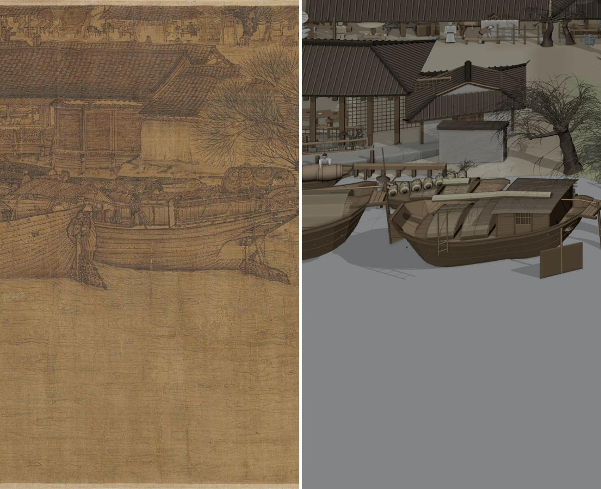
第六轮渲染第五轮渲染第四轮渲染第三轮渲染第二轮渲染第一轮渲染（修正前）有误与缺失（10）
编号
类型
判定
问题
修正
H0036
building
有误
Gabled wing is at the right x and eave (y ~430), but the ridge is at y ~225 vs painted ~170. A dark finial post at x 596-620 y 223-303 sticks up.
raise the ridge 50 px so it meets the hall roof; remove the finial post
A0020
animal
有误
Body at x 574-666 y 74-140 is at the right place, but the head is lowered at the LEFT end (~578,100); the painted head is raised to the right.
rotate 180 degrees about vertical; head raised
B0008
boat
有误
Hull hidden behind B0007 as painted; coils on the deck. The right part of the roof, x 630-830 y 650-700, is still a flat sloped slab.
make the roof x 600-810 arched barrel mats; right end at x 810
O0034
prop
有误
Ladder is now at the right x (503-538) but spans y 773-940; painted y 727-840, so it hangs about 90 px too low.
move the ladder up 90 px; base at (514,840) on B0007's cabin side
X0065
structure
有误
Still a tall rail with posts and a top beam at x 190-500 y 600-650; the painted quay edge is low and hidden by the boat mats.
remove the rail and its posts; keep a low plank edge at y ~640
K0001
stall
有误
Canopy is now about the right width (x 203-303), but it is a flat horizontal disc at y 80-104; the painted canopy is tilted, at y 30-85.
raise the canopy 35 px; tilt 30 degrees toward the viewer; centre (258,58)
B0009
boat
有误
B0011's hull still ends at x ~230. Only a loose post and a ladder-like rudder stand at x 297-350 y 730-895; the painted high curved stern reaches x ~345 y 720-1050.
extend B0011's stern hull 110 px right to x 345, rising to y ~720; join the rudder to it
P0070
person
有误
Hat at y ~660 and base ~765; painted hat ~725 and base 840. Pole is diagonal, not vertical.
lower 70 px onto the extended B0011 stern deck at (299,840); pole vertical
P0071
person
有误
Not visible.
place inside B0011's mat cabin at (190,648), with only the hat above the mats
P0067
person
有误
Hidden behind the white block x 666-802.
remove the block; keep him seated at table F0052
人群
street north x 0-1100 y 20-170：画中约 11 人，模型 5 人。The white block x 666-802 hides P0067. P0068 now bends over the bench (fixed). P0069 and P0072 are present.
far bank / quay x 0-250 y 480-690：画中约 2 人，模型 1 人。A white-robed figure stands behind B0011's barrel mat at (100,600); no figure is painted there. P0071's hat is not visible.
boats x 0-1100 y 600-1060：画中约 2 人，模型 1 人。P0070 is on a deck at x ~295 but about 65 px too high; his pole is diagonal, while the painted pole is vertical. The blue stern crewman of round 7 is gone.
模型多出的东西
(734, 111) White plaster block x 666-802 y 74-148; the painting shows an open eatery here. It hides P0067.
(100, 600) White-robed standing figure behind the B0011 barrel mat; not painted.
(345, 625) Tall quay rail with posts and a top beam x 190-500 y 600-650 (X0065).
(800, 250) Empty pale ground x 560-1100 y 160-330; the painting has the H0036 roof and willow crown here.
(712, 62) Small house-shaped object on the hall roof at x 694-730 y 52-72.
tile14 · 167.9–183.6 cm 3/5
正确 30 · 有误 14 · 缺失 1 · 忽略 8
The scene still reads as the painted one: wine house H0039 and dining hall H0038 under big tiled roofs, the open dining floor with balustrade and tables, the quay, the inner boat B0010 with casks and mat shelter, the big cargo boat B0011 and the passenger boat B0012. This round the quay is a low deck, tree T0127 shows, the casks are round and the sack is dark, and the pole-man on open water is gone. Regressions: a cream barrel cabin is back on B0011 (x 610-1100, y 680-840) and hides the open deck and coils O0046; the three casks are fused into one long log. B0012 is broken into a bow hull and a separate small stern boat with open water between, and the rudder is a flat board. X0070, X0072 and K0002 are still flat cream slabs, X0073 is still a flat lattice hung with lantern figures, and the H0039/H0038 roofs clash.
与上一轮相比：Improved: quay X0069 is now a low deck, so T0127 and the hall front show; casks are round and hooped; O0040 is a dark sack; O0044 is rectangular crates; G0005 is a real hanging board; the pole-man on open water is gone; P0077 now shows. Worse: B0011 barrel cabin is back and hides O0046; casks fused into one log; B0012 hull now split with open water in the middle, plus a dark hanging board extra. Still wrong: X0070/X0072/K0002 flat cream slabs, X0073 lattice with lanterns, H0039/H0038 roof clash, X0074 dark cap, G0004 plain board, O0048 flat rudder, B0011 shallow hull.
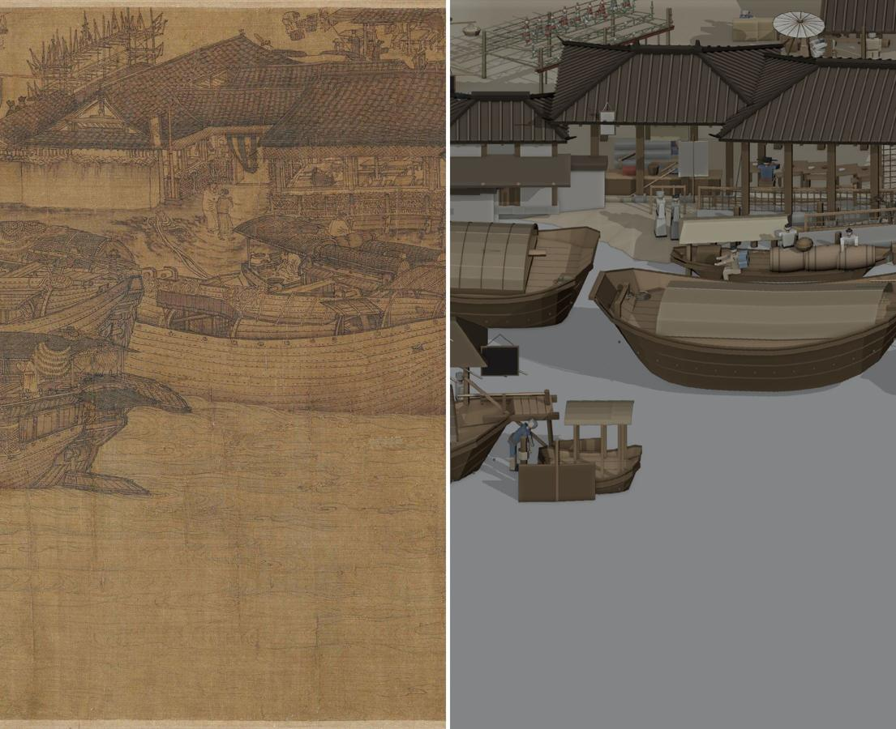
第六轮渲染第五轮渲染第四轮渲染第三轮渲染第二轮渲染第一轮渲染（修正前）有误与缺失（17）
编号
类型
判定
问题
修正
O0038
prop
有误
Now round and hooped, but fused with O0039/O0041 into one continuous log x 780-1045, y 570-650.
Make three separate casks with ~10 px gaps; this one x 958-1045, partly behind the cabin roof.
O0039
prop
有误
Middle section of the fused cask log; no separate cask outline.
Separate cask x 878-985 with its own end faces and hoops.
O0041
prop
有误
Left end of the fused cask log x 780-880; painted cask is a separate drum, larger at x 790-895.
Separate cask x 790-895, y 577-672; no shared axis with the others.
K0002
stall
有误
A flat horizontal white parasol disc (x~800-880, y 20-75) on a vertical pole. Painted: a large cloth awning tilted ~40° on a long diagonal pole.
Tilt canopy ~40° toward lower-left; pole diagonal from (860,145) up-left to (810,25); square cloth, not round.
B0011
boat
有误
Regression: cream barrel cabin back over x 610-1100, y 680-840, hiding the open ribbed deck. Hull bottom ~935, painted ~1000: hull ~65 px shallow.
Remove the barrel cabin again (open deck with ribs and small hatch); deepen hull so the keel line is at y~1000.
X0070
structure
有误
Right height (x 575-835, y 530-600) but still a flat cream wedge slab; painted is an arched dark woven-mat roof.
Arched mat roof, crown up ~25 px, dark brown woven material, eaves curling down at both ends.
G0004
sign
有误
Right place (x 565-640, y 340-430) but still a plain flat white board.
Cloth banner with dark/light vertical stripes, hanging slightly loose.
O0046
prop
缺失
Not visible: the area x 545-655, y 700-760 is covered by the new B0011 barrel cabin.
After removing the cabin, place two large rope coils on deck at (600,730).
H0039
building
有误
Hip roof and lower eave read, but its right hip slope and the H0038 left hip interpenetrate, making a crossed seam at x 690-900, y 120-300.
Shorten the H0039 ridge east end ~60 px or lower it under the H0038 eave so H0038 reads as one continuous roof.
O0047
prop
有误
Two octagonal coils at x~470-530, y~705-725; painted three coils at x 360-505.
Three coils, centres at x 385, 432, 480, y~710.
X0072
structure
有误
Still a flat cream box roof on four posts at x~290-470, y 990-1050, on what reads as a separate small boat.
Curved dark woven canopy arching over the B0012 stern deck, x 200-462, crown at y~955.
O0048
prop
有误
A flat upright brown board at x~170-355, y 1145-1240; painted blade is hatched and angled aft under the stern overhang.
Tilt blade ~30° aft, hang it from a post at x~250; height 40% less, thinner, hatched.
X0073
structure
有误
Still a flat horizontal green X-braced lattice over x 0-480, y 0-120, hung with red/white lantern figures and balls.
Tall tiered pole scaffold rising diagonally behind the roof to y~20, with pennant poles on top; no hanging figures.
B0012
boat
有误
Broken: dark bow hull x 0-140 and a separate small stern boat x 290-470, with open water at x 140-290, y 1000-1150. Painted hull is continuous x 0-465.
One continuous hull from bow (x<0) to stern overhang x~455, deck at y~960, keel y~1150.
X0074
structure
有误
Plaster is white, but a thick dark board still caps the wall at x 0-300, y 380-460.
Remove the dark cap slab; wall top under the eave at y~385 with plaster face down to y~520.
P0073
person
有误
Full torso shows above the cask tops at ~(1010,560-600); painted only head and shoulders between casks at y 612-648.
Lower ~40 px onto the deck between O0039 and O0038.
P0084
person
有误
Stands over open water at x~180 in the gap of the broken B0012 hull.
Keep the position; it becomes correct once B0012 hull is continuous.
人群
road/shed x 650-1100 y 0-150：画中约 6 人，模型 4 人。Porter by the crates and the white seated man read. Child P0075 still not readable.
behind H0039 roof x 0-80 y 220-285：画中约 2 人，模型 2 人。Roughly right.
bank x 450-600 y 440-600：画中约 3 人，模型 2 人。P0081 and P0083 (white) stand on the bank at x~520-560; seated P0082 not readable.
dining hall x 740-1000 y 400-460：画中约 1 人，模型 1 人。P0078 seated at the table; upright with a black hat, painted figure hunched. Minor.
boats x 600-1100 y 520-700：画中约 4 人，模型 4 人。P0077 now sits at the cask end (~820,625). Two white boatmen show torso above the casks; P0073 still ~40 px high.
passenger boat x 0-465 y 815-1232：画中约 2 人，模型 2 人。Blue figure bent at the rudder post (x 150-210, y 1030-1145) reads as P0084, but stands in the open-water gap. P0085 at the left edge.
模型多出的东西
(120, 895) Large dark framed board hanging from a string over the B0012 bow, x~80-170, y 855-935; nothing like it painted.
(100, 650) Cream barrel cabin on the left cargo boat x 0-210, y 540-760 (owned by tile13); painting shows dark mat roofs and coiled mats.
(800, 760) Cream barrel cabin on B0011 x 610-1100, y 680-840 (regression).
(240, 60) Red/white lantern figures and balls hung on the X0073 lattice.
(50, 70) Hanging round basket on a beam at x~30-75, y 50-85, top-left.
tile15 · 180.8–196.5 cm 3/5
正确 21 · 有误 8 · 缺失 1 · 忽略 5
The tile still reads as the same scene: shop street with tables, the two-wheeled cart and donkey pair, sack porters, the horse and pack animal, wine house H0040, the moored middle boats and the big foreground boat B0014 with its fan of stays. Round 8 fixed the jammed stern boat, the ladder, the pedlar, the tall O0056 bundle and darkened the aft canopy. The worst problems left: the B0014 roof deck is still a deep flat board surface (y950-1094 vs painted y962-1006), the window woman and child still sit on an outer ledge with legs over the hull, and a blue figure now stands on the water beside the stern. H0041 became an octagonal conical tent instead of a thatched lean-to, and X0077 is a hipped roof on posts instead of a sloping mat.
与上一轮相比：Improved: jammed stern boat removed; aft canopy now dark and pitched; O0056 bundle tall and light; ladder F0078 upright in place; pedlar P0088 has a body; H0041 now right width; X0077 darker. Worse: H0041 is now an octagonal conical tent; X0077 a hipped roof on posts; O0051 a black signboard; a blue figure stands on the water at the stern. Still wrong: deep B0014 roof deck, window woman and child outside, unbraced rudder, no bow railing, coils not built, left-boat figures behind the arch.
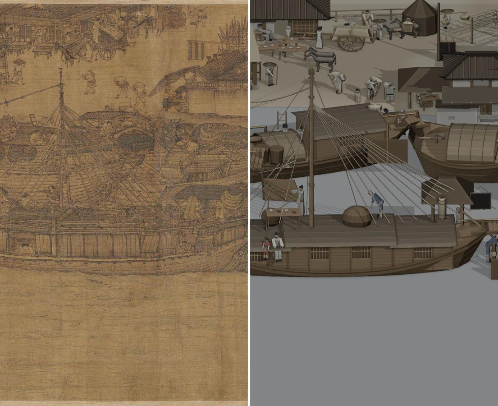
第六轮渲染第五轮渲染第四轮渲染第三轮渲染第二轮渲染第一轮渲染（修正前）有误与缺失（12）
编号
类型
判定
问题
修正
X0075
structure
有误
Still a plain box x1075-1100 y1145-1240 standing in the water; no carved stern post or railed platform on B0014.
Replace the box with a carved stern post on the B0014 stern, base (1079,1208), top ~y1092, short railing.
O0051
prop
有误
Now a flat black framed panel hung on a wire at x981-1069 y850-925, reads as a signboard; painted is a rolled scalloped mat blind.
Replace panel with a light-brown rolled mat blind in 3-4 scallops under the aft eave, x978-1068 y825-925.
X0077
structure
有误
Now dark, but a hipped pyramid roof on posts x666-866 y300-425; painted is a single mat sheet sloping from (875,306) down-left to (662,431).
Build as one flat mat plane tilted ~30 deg down to the left, high edge on H0040 wall, no hip.
O0057
prop
有误
Unchanged: low plank with a small ring at x756-875 y594-637; no lattice railing on the bow platform.
Add a lattice railing ~25 px high around the bow platform x735-820 y525-625.
H0041
building
有误
Now an octagonal conical dark tent x678-835 y0-160; painted is a hatched thatch lean-to roof x720-825 y20-120.
Build as a single-slope thatched lean-to, 4 m wide, x700-832, low eave ~y120; no cone.
O0060
prop
有误
Unchanged: plain dark slab x612-706 y619-725; painted blade is cross-braced and centred near x610.
Move 45 px left to centre x610; add 2 diagonal braces and a tiller bar.
B0014
boat
有误
Jammed stern boat gone; aft roof now dark and pitched. Roof deck still deep flat board y950-1094 (painted y962-1006); cabin wall pushed to y1094-1181.
Cut roof deck depth ~95 px so the cabin wall spans y1006-1137; lower the two mat domes ~30%.
F0079
furniture
有误
A tall plain drum x90-155 y645-725 stands in its place; size right, but painted is a low round woven rope coil.
Height -40%, rounded top, coiled-rope ring texture, dark; base (118,715).
F0082
furniture
缺失
At x20-90 y635-725 only a lying cylinder and crates; painted a large dark woven coil x15-90 y630-715.
Build a coil like F0079, ~75 px wide, dark rope texture, base (52,715); remove the crates.
P0109
person
有误
Woman still sits on an outer ledge x90-150 y1031-1156, legs hanging over the hull face.
Cut a window opening x50-150 y1050-1130 and seat her inside, head and shoulders only.
P0112
person
有误
Child in red on the same ledge x55-85 y1035-1156, legs over the hull.
Seat inside the same window, head only visible.
P0104
person
有误
Only a head shows behind the arch top at x220-237 y557-590; painted sits on the open deck x200-246 y583-648.
Seat on the deck in front of the arch at base (223,648); lower or shorten the arch.
人群
far-bank street and shops x 0-1100 y 0-490：画中约 18 人，模型 17 人。Cart crew, bent porters with sacks, hat man, horse leader, awning guests read. Pedlar P0088 now has a body and both baskets at x853-919 y38-131.
middle-band boats x 0-800 y 460-800：画中约 9 人，模型 6 人。Left-boat figures still show only heads above the arch top (x150-170, x220-237 y547-590); window figures P0096/P0100 not readable.
foreground boat B0014 x 0-1100 y 800-1230：画中约 7 人，模型 7 人。Pointing man P0105 and bent worker P0094 good; woman and child still on an outer ledge; one blue figure stands on the water beside the stern.
模型多出的东西
(1078, 1100) Blue-clad figure standing on the water beside the B0014 stern x1050-1100 y1040-1160, next to the X0075 box (probably a tile16 boatman left after the jammed boat was removed).
(1040, 110) Grey lattice frame with posts and a red figure x987-1100 y37-187 (tile14 huanmen spill); painted spiky frame sits lower, y90-300.
(365, 580) Middle stern-on boat is a long tall plank cabin x181-547 y463-700; painted shows a thin plank roof y470-530 and a dark mat stern.
(55, 680) Lying cylinder and crates x20-90 y635-725 where the coil F0082 should be.
tile16 · 193.7–209.5 cm 3/5
正确 31 · 有误 5 · 缺失 0 · 忽略 5
The top half still reads as the same scene: restaurant upper floor with balustrade and diners, awning shed H0043 over its tables, shop H0042 with its seated pair, the conical-hat man and the umbrella X0081. The river half is a partial match and barely changed: boat 1 is still covered by one huge pent roof (x 0-600, y 480-700) that hides the deck and cabin sitters, and boat 2's ribbed hood is still ~240 px right of the painted dark hood (x 960-1100 vs 690-900), leaving an empty open bow. Boat 3 still carries a table of bowls and a dark ball on its roof with two sitters on the eave, and its stern ends ~60 px short. Gains: coils O0065 now on boat 2 (as a tall cylinder), windlass O0073 visible, ladder and P0127 at painted height.
与上一轮相比：Improved: coils O0065 moved up onto boat 2; windlass O0073 visible again; lowered mast now lies on boat 1 instead of over water; P0127 at deck height; ladder at painted height. Worse: nothing major. Still wrong: huge boat 1 roof, boat 2 hood ~240 px right with empty bow, coils as one tall cylinder, table on boat 3 roof, B0014 stern short, white wall block, leaning post.
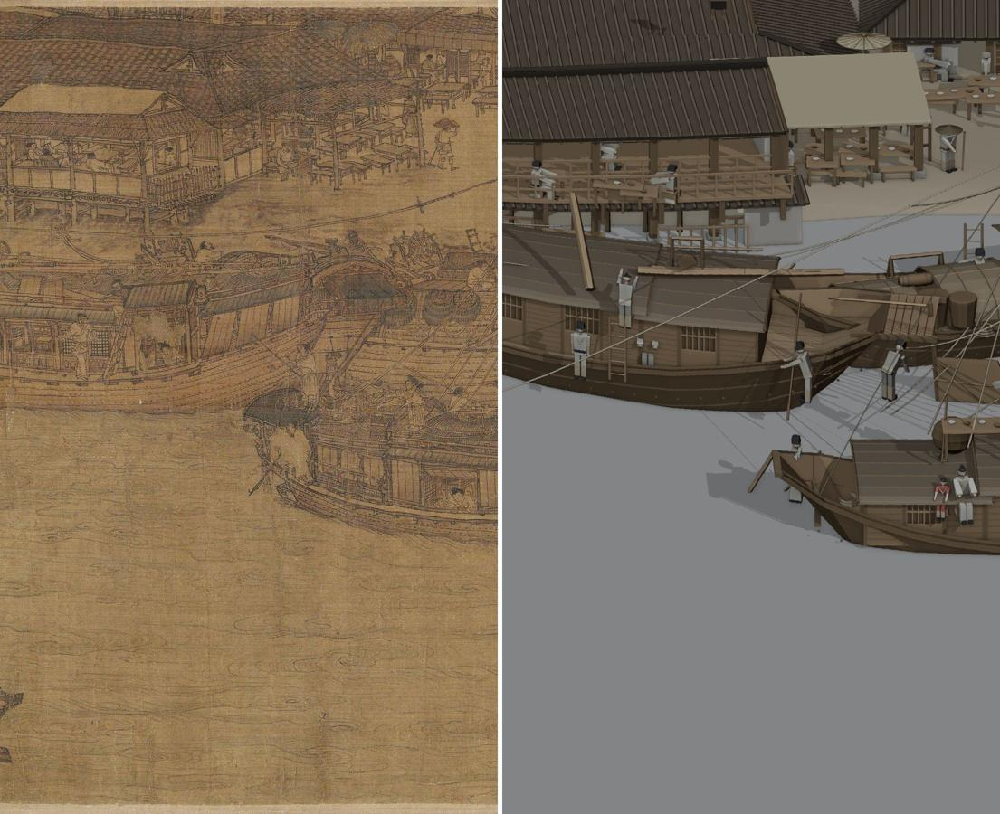
第六轮渲染第五轮渲染第四轮渲染第三轮渲染第二轮渲染第一轮渲染（修正前）有误与缺失（10）
编号
类型
判定
问题
修正
B0015
boat
有误
Ribbed hood still at x 960-1100, y 570-730; painted dark mat hood x 690-900, y 545-760. Bow x 550-830 is an empty open hull.
Move hood ~240 px left onto the bow; deck over the open bow; dark brown mat material.
O0065
prop
有误
Now at the right place (x 1000-1050, y 640-720) but a single tall pale cylinder; painted two low flat rope coils side by side.
Replace by two flat coils ~60 px wide, 35 px tall, dark rope colour, at x 925-1052.
B0016
boat
有误
B0014 stern still ends at x~596 (painted ~535); no dark mat hood over the stern x 520-690, y 860-940; big pent roof with table and sitters on top.
Extend hull aft ~60 px; add dark mat hood at stern; replace roof by mat dome y 880-950; open lattice cabin side.
O0072
prop
有误
Now lies on boat 1's roof (x 300-550, y 585-605) instead of over water, but still a flat plank, ends 170 px short; no yard or sail.
Round spar x 290-720, y 520-600 on deck trestles; add yard and furled mat sail.
B0017
boat
有误
Hull and lattice-windowed cabin at painted height, but one huge pent roof x 0-600, y 480-700 still hides deck, props and crew.
Replace with small roof x 270-420, y 600-660, long low cabin roof x 0-260, y 640-690; open deck x 280-720.
P0117
person
有误
Not on the boat 2 bow hood at (788,565); hood is 240 px right.
Seat on top of the moved hood at (788,565).
P0125
person
有误
Hangs on the pent-roof eave with arms raised at ~(265,595-725), above the ladder.
Stand on ladder F0102 rungs, feet ~(261,718), body leaning into the ladder.
P0124
person
有误
Only small white blocks visible in the cabin wall at x 300-350, y 745-800; figures clipped inside planks.
Open the cabin front x 290-400 (doorway) so P0124/P0123 show sitting in it.
P0119
person
有误
Stands beside the stern post at (~648,1110), legs outside the hull, not on a stern platform.
Put on a stern platform after extending the hull ~60 px aft.
P0114
person
有误
Pole man at ~(870,887), ~55 px up-left of the painted base.
Move to (918,943) on the deck between boats 2 and 3.
人群
restaurant upper floor x 0-470 y 280-400：画中约 6 人，模型 4 人。Diners lean out over the balustrade, heads ~30 px low; P0122 in the small room not visible.
awning shed and shop x 600-1100 y 100-400：画中约 9 人，模型 6 人。Conical-hat P0115 and shop pair P0111/P0113 match; P0120 only partly visible at the awning's left edge.
boat 1 x 0-700 y 500-900：画中约 9 人，模型 4 人。P0118 on bow and P0127 on side deck good; P0125 hangs on the roof eave with arms up; P0121, P0123, P0124 hidden or clipped into the cabin wall.
boats 2-3 x 600-1100 y 500-1150：画中约 9 人，模型 7 人。Pole men present; P0117 not on the hood; two boat-3 sitters sit on the roof eave instead of inside the cabin; P0119 stands outside the stern.
bottom-left boat fragment x 0-50 y 1480-1580：画中约 1 人，模型 0 人。P0129 and its boat fragment not built; plain water.
模型多出的东西
(610, 460) White plastered wall block at the right end of the restaurant stilts; painting shows bank and posts.
(175, 530) Tall leaning post (y 425-640) rising out of boat 1's roof; painting has no raised spar here.
(1020, 960) Table with bowls and a dark ball on boat 3's roof; painting shows mat dome and rigging.
(690, 700) Empty open hull with no deck at boat 2's bow x 550-830, y 600-810; painting shows the dark hood here.
(280, 150) Rear roofs are one long flat pent band x 0-560, y 0-300 that buries the restaurant's pale gable-hip roof and its gable at (400,200).
tile17 · 206.6–222.4 cm 3/5
正确 14 · 有误 10 · 缺失 0 · 忽略 2
The tile reads as the painted scene: houses and willow along the top, the tracker and tow rope on the bank, the big cargo boat, the oar crew at lower left and the moored boat at the bottom. B0018 now has its full bow with an upswept stem at ~240,475, so the X0088 canopy sits on the bow deck, and the oar crew now stands on their hull. The worst remaining problems: B0018's deckhouse is still a flat plank box carrying pale block 'bales' instead of arched mat roofs with heaped cargo; the moored boat has no arched mat cabin, keeps the clothes-strip rail, and its stern is ~180 px short, so the crossbar post and rudder sit too far left; tile roofs still read as wide planks.
与上一轮相比：Improved: B0018's bow is restored with an upswept stem, so the X0088 canopy and the O0080 pole sit on the boat again. The oar crew now stands on their own deck. The sweep-oar blade is at the painted height. P0131 lies on the cargo. The X0087 frame moved from the water onto the deck. Worse: nothing major. Still wrong: the flat deckhouse and block bales, the box canopy, the short moored-boat stern with a misplaced frame and slanting rudder, the clothes rail and missing arched cabin, coarse tile courses, twig shrubs, the H0046 door, the stair, the extra rope and skiffs.
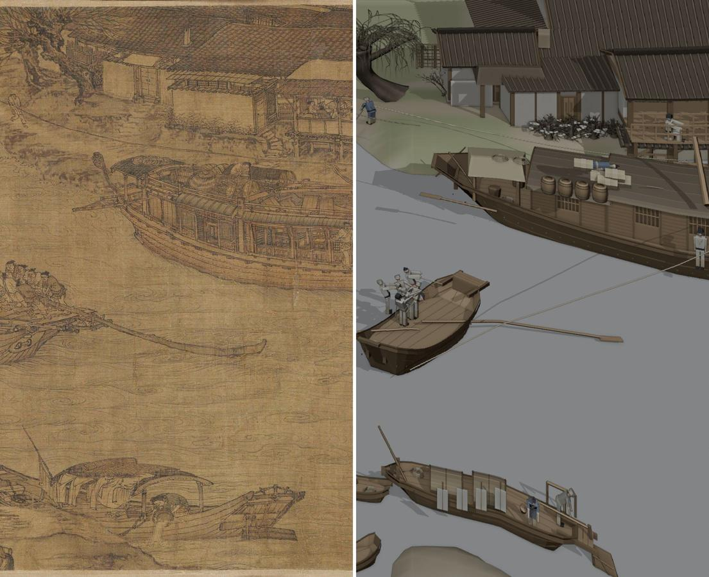
第六轮渲染第五轮渲染第四轮渲染第三轮渲染第二轮渲染第一轮渲染（修正前）有误与缺失（12）
编号
类型
判定
问题
修正
H0045
building
有误
Right place and extent, but the roof still reads as wide plank courses ~15 px apart; painting shows a fine tile grid.
Still only a dark slanted board at ~830-870, 390-470; painting has a readable stone stair.
5-6 visible treads with a side rail from 859,470 up to the walkway at ~410
X0087
structure
有误
Crossbar frame now on the deck, but at ~600-690, 1490-1600, ~200 px left of the painted post at 830-900.
lengthen the moored hull stern to ~920; move the frame to 830-900, 1500-1560
F0105
furniture
有误
Pale flat blocks lie on the flat deckhouse roof at ~780-900, 480-560; painting shows dark rounded mat-wrapped bales heaped high.
rounded mat-coloured bundles heaped ~60 px tall at 780-920, 500-585
O0075
prop
有误
A board slants down into the water at ~750-800, 1620-1800 from the short stern; painted rudder is a near-horizontal blade under the stern at 700-925, 1620-1700.
broad blade ~220x60 px hung under the stern at 700-920, 1620-1700, after lengthening the stern
T0128
tree
有误
Still bare dark twig clumps with white blobs at x 560-830, y 340-430; painting has low leafy rounded bushes.
Right place, but the white front still has a double door at ~690-720, 260-330; painting has a plain wall, lattice band under the pent roof.
remove the door; add a lattice window band at y 240-270
B0018
boat
有误
Bow now complete (stem ~240,475). Deckhouse is still a flat-roofed plank box; painting has arched mat roofs over lattice cabins.
arched mat barrel roofs on the deckhouse at y 580-640; drop the flat roof deck
X0088
structure
有误
Now seated on the bow deck at x 350-530, but still a single-pitch tan box canopy; painting has an arched mat roof.
roof.type = arched mat barrel, eave at ~y 520
O0081
prop
有误
Five pale strips still hang on a rail frame at x 380-650, y 1440-1560; painted garments drape over an arched cabin roof.
remove the rail; build the arched mat cabin 150-640, 1380-1500 with 5-6 garments draped on it
P0137
person
有误
Nearly upright, rope held in front.
torso bent ~45° forward, rope over the shoulder
P0132
person
有误
Stands upright; painted figure bends over the gunwale pouring a basin.
pose work_bent at ~500,1600, basin tipped outboard
人群
bank x 0-100 y 290-390：画中约 1 人，模型 1 人。Tracker P0137 only slightly bent, rope held in front; painted strongly bent forward, rope over the shoulder.
H0044 gallery x 880-1100 y 300-470：画中约 3 人，模型 1 人。One standing figure; painting has seated diners at the table.
cargo boat x 230-1100 y 470-900：画中约 3 人，模型 2 人。P0131 now lies on the cargo as painted. Stern man stands against the hull side at ~1075, 700-835, feet at the waterline, not on deck.
lower-left crew boat x 0-300 y 780-1100：画中约 8 人，模型 7 人。Crew now on the deck of their hull, a clear fix. Poses are stiff, arms out; painted men bend low hauling the oar.
moored boat x 0-950 y 1420-1770：画中约 2 人，模型 2 人。Blue figure upright at ~550,1530-1640 (P0132 should bend pouring a basin). Grey bent figure at ~660,1510 by the frame is not painted.
模型多出的东西
(640, 980) long straight rope across open water from the cargo hull (~1100,790) down-left to ~180,1155
(660, 1520) grey bent figure on the moored boat's deck, not painted
(50, 1560) two small extra skiffs at x 0-110, y 1480-1570 and x 0-80, y 1660-1800
tile18 · 219.5–235.3 cm 3/5
正确 18 · 有误 3 · 缺失 0 · 忽略 4
The scene reads clearly as the same place: the shop and B0023 at the top, five trackers under the T0130 willow, the big T0132 willow and T0131 bare tree on the left, the B0020 crew on the right, and the mound, small boats and roofs at the bottom. B0020's crew now stand on the deck, and B0019 has a hull with its slanted mast. The stray pole, the extra figure on the water and the B0022 post are gone. Still wrong: the O0084 rudder is a detached square board on the water; the B0020 crew stand stiff and upright, bunched ~100 px right of the painted line; P0143 stands with a small conical hat; the shadow block and the tracker crate remain; willow crowns are still sparse and grey.
与上一轮相比：Improved: B0020 crew now on the deck (hull lowered); B0019 has a hull with its mast; the B0022 post, the stray pole/oar and the extra figure on the water are gone; T0132 plank limbs are removed; O0086 has 6 dark coils. Worse: nothing major. Still wrong: detached O0084 rudder; crew upright and bunched right; P0143 standing; P0146 pole too long; shadow block; tracker crate; sparse willow crowns.
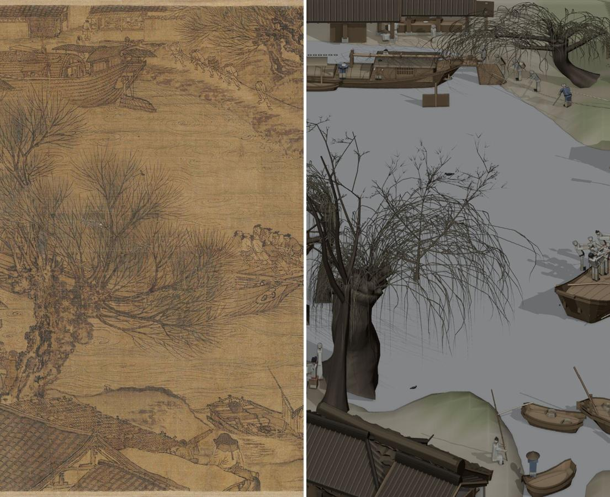
第六轮渲染第五轮渲染第四轮渲染第三轮渲染第二轮渲染第一轮渲染（修正前）有误与缺失（7）
编号
类型
判定
问题
修正
T0130
tree
有误
Curved trunk x 885-1000 y 100-300 is fine; the crown x 560-1100 y 0-200 is still sparse grey whips plus one thick horizontal limb.
Crown density ~3x with dark ink colour; replace the horizontal limb with short gnarled branches.
O0084
prop
有误
Still a flat square board on a post, x 421-515 y 300-381 on open water, detached from the B0023 stern.
Parent to B0023 stern post at x~470 y~300; narrow blade slanted down-right to y~400.
T0132
tree
有误
Plank limbs gone, but trunk x 65-270 y 1000-1450 is smooth and uniform; crown is sparse grey drooping whips vs dense dark radiating sprays.
Knotted, bark-mottled pollard trunk; crown density ~3x, dark ink colour, sprays radiating up/out.
P0141
person
有误
P0140/P0141 sit ~90 px right of their painted x 874-902; the whole crew is bunched at the deck's right end.
Spread the crew along x 848-1100 at painted x; bow 60 px longer to hold them.
P0134
person
有误
haul_rope crew stand bolt upright with arms horizontal; painted men lean back, hands low on the line.
Torso lean back ~25 degrees, hands at waist height on the line.
P0143
person
有误
Still stands upright in B0021 with a small pale conical hat; painted seated, back to viewer, very wide dark hat.
sit pose on the B0021 stern; dark hat ~1.5x shoulder width.
P0146
person
有误
Pole still long and near-vertical (671,1409)-(727,1669); painted short pole tilting up-right.
Pole length ~120 px, tip up-right ~45 degrees.
人群
far bank trackers x 600-1000 y 150-400：画中约 5 人，模型 5 人。Positions match within ~15 px (x 634, 690, 740, 796, 915); bent forward on the rope. Leading tracker is partly hidden by the extra crate.
B0020 foredeck crew x 840-1100 y 810-975：画中约 7 人，模型 7 人。Now standing on the deck (feet y~985), but bunched at x 962-1100 and upright with arms straight out; painted line spans x 848-1100, leaning back.
far-bank shop x 260-480 y 70-160：画中约 3 人，模型 3 人。Acceptable.
B0023 deck x 0-480 y 170-340：画中约 3 人，模型 3 人。P0155 still stands on deck at x~130 rather than leaning from a window; P0152 on the cabin roof (y~185). Minor.
near bank left x 0-70 y 1200-1400：画中约 2 人，模型 2 人。Present beside the T0132 trunk; ok.
near-bank boats and mound x 640-960 y 1530-1750：画中约 2 人，模型 2 人。P0146 on mound, P0143 in B0021; extra figure on the water is gone.
模型多出的东西
(1025, 560) Grey rectangular shadow block on the water x 950-1100 y 530-595; nothing painted.
(695, 255) Wooden crate/platform x 650-740 y 200-306 at the trackers' feet, hiding the leading tracker; not painted.
(440, 1590) Small dark post and pale stick x 415-525 y 1569-1606 by the H0049 ridge; not painted.
tile19 · 232.4–248.2 cm 3/5
正确 25 · 有误 7 · 缺失 0 · 忽略 5
The tile reads as the same scene: far-bank shop, fence, shed and moored boats at the top, open water with the fisherman, B0025, the full tow line and the bird in the middle, B0026 and its crowd on the near bank, the street at the bottom left. Clear gains this round: the pale shed roof over F0117-F0119 is gone so the tables show, B0026 lost its tall lattice box and is now an open hull with posted canopies, O0090 runs the full width, and F0113 is an upright cylinder. The worst problems remain: (1) the big near-bank tiled roof is still a walled hip house at x 650-1100 y 1450-1800 with open ground at x 180-650; (2) B0034's long walled deckhouse x 60-350 y 305-440 still hides its boatmen, with an extra mast, dark board and plank deck; (3) B0023 is still split into three hulls with a posted canopy, and X0098 is ~1.75x too wide.
与上一轮相比：Improved: shed roof over F0117-F0119 removed so tables and bench show; B0026 lattice box gone, O0088 post now visible; O0090 tow line full width; F0113 upright cylinder; F0116 visible again; X0098 roof now flat. Worse: a new pale gable roof at x 165-345 y 170-290 by the water; P0162 left the canopy and sits on the bank. Still wrong: hip house plus open ground instead of the big roof; B0034 deckhouse and mast; B0023 split hulls; X0098 width; X0097 misplaced; T0134/T0136 crowns; water stub; X0102 covered.
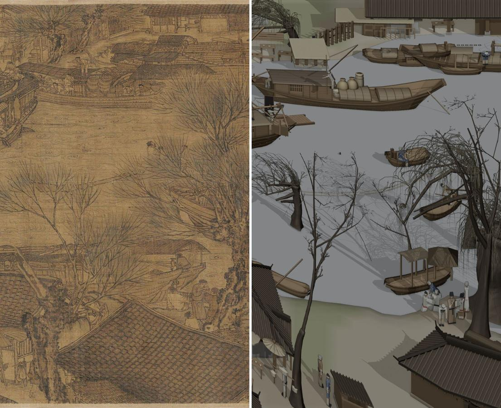
第六轮渲染第五轮渲染第四轮渲染第三轮渲染第二轮渲染第一轮渲染（修正前）有误与缺失（11）
编号
类型
判定
问题
修正
B0023
boat
有误
Still three pieces: mat-arch boat x 700-880 y 190-245, flat posted canopy on a second hull x 880-980, third hull x 820-1020 y 290-330.
one hull x 695-1100; mat arch at x 695-865; remove posted canopy and the third hull
T0133
tree
有误
Gnarled thick trunk x 960-1080 is right; long smooth limbs still cross to (760,900); twig cloud tops at y ~420, painted y 290.
limbs 40% shorter; dense fine twig cloud x 780-1100 y 290-900
T0134
tree
有误
Still a domed willow crown with vertical curtain strands at x 620-1020 y 580-900; painted fronds sweep lower-left to (630,1050).
Vertical-bar railing still at x 570-720 y 120-165, ~90 px left of the painted lattice.
move to x 700-780 y 77-142, between H0052's posts
X0098
structure
有误
Roof is now flat (good) but the pale slab still spans x ~370-720 (painted 440-640).
width 200 px centred on x 540; mat walls, open door at left end
T0136
tree
有误
Trunk x 170-250 y 1350-1800 fine; crown is a few sparse twigs up to y ~650; painted crown is dense x 180-560 y 760-1300.
dense willow twig crown x 180-560 y 760-1300
X0102
structure
有误
Still covered by a drooping willow crown x 0-215 y 0-170; lattice x 0-52 y 40-106 not visible.
move that crown 60 px right/up or thin it so the lattice shows
P0162
person
有误
Not under the X0096 canopy; a bent figure at ~(800,1270) on the bank, ~90 px low.
stand him on the stern deck at (804,1180), bending to the left over O0088
P0170
person
有误
Hidden inside B0034's deckhouse.
shorten the deckhouse to x < 150; stand him on the open deck at (302,402)
P0172
person
有误
Hidden inside the deckhouse.
same as P0170; lean over the gunwale at (242,404)
P0161
person
有误
A seated man in the bank group still sits on a box stool at ~(915,1390).
remove stool; ground sit pose
人群
far-bank boats x 0-1100 y 150-540：画中约 12 人，模型 5 人。Visible: P0171 by the fence, P0167 with the pole by the mast, one man on the B0034 roof stern, one man on B0023. Boatmen on B0034's deck x 170-370 y 330-420 hidden by the deckhouse.
water/willows x 580-1000 y 600-960：画中约 2 人，模型 2 人。Fisherman P0164 seated in his boat at ~(680,690); P0159 at B0025's stern. Good.
B0026 and near bank x 700-1000 y 1100-1440：画中约 7 人，模型 8 人。Group in place at x 750-990 y 1240-1440. Nobody under the stern canopy; a bent blue man at (800,1270) is on the bank below the boat. One seated man still on a box stool; a tall pale pillar-like figure at (960,1300).
street south x 0-360 y 1580-1800：画中约 4 人，模型 4 人。Porter with loads and two walkers at the right places.
模型多出的东西
(870, 1620) Walled hip-roof house x 650-1100 y 1450-1800; painting shows only a tiled roof surface with eave from (625,1340) to (1100,1525)
(400, 1500) Open ground x 180-650 y 1300-1650 where the painted tiled roof continues
(200, 370) Long walled deckhouse with lattice window on B0034 x 60-350 y 305-440; painting has an open deck with boatmen
(330, 340) Vertical mast at x ~330 y 240-440 on B0034, not painted
(75, 465) Tall black board at x 55-95 y 420-510 and plank platform x 100-280 y 500-545 off the left boat's stern
(190, 900) Stubby pruned willow trunk standing in open water x 120-215 y 800-1010 with a domed crown x 0-240 y 670-830
(955, 197) Row of six rope coils floating at x 905-1010 y 195-200 beside B0023; painted coils lie on its deck at x 780-900 y 185-215
(255, 230) Pale gable roof on posts x 165-345 y 170-290 at the waterline, right of F0117; not in the painting
tile20 · 245.3–261.1 cm 3/5
正确 37 · 有误 10 · 缺失 0 · 忽略 12
Still reads as the same scene: bridge east end, lowered mast diagonal, tea house, cart street, moored boats, restaurant hall and umbrella stall are all in place. Gains: the bridge deck now carries about 12 figures, the vane pole with cross-arm stands at x~637, H0055 is narrowed to the right edge, H0061's eave reaches the painted line, an awning slopes from the tea-house upper floor. Worst problems: the big boat still lies flat with a duplicate horizontal mast on trestles and an empty roof; the bridge deck profile slopes the wrong way (low at the west edge, high at the east foot) and a large pale solid fills the arch opening; a thick extra post still rises through the tea house at x~775; H0063/H0062 roofs are still wrong in extent.
与上一轮相比：Improved: bridge deck crowd 2 -> 12, figure under the bridge gone; X0104 vane pole now at x~637; H0055 narrowed; O0094 now a narrow upright; X0103 awning added; H0061 eave on the painted line; H0063 got an awning; O0106 right size. Worse: bridge profile now slopes the wrong way (low west, high east) and a pale solid fills the arch. Still wrong: flat big boat with duplicate mast and empty roof, thick post at x~775 through H0057, H0060 post, H0063 box, H0062 roof extent, O0105, H0056, horse, box under bridge, figure on water.
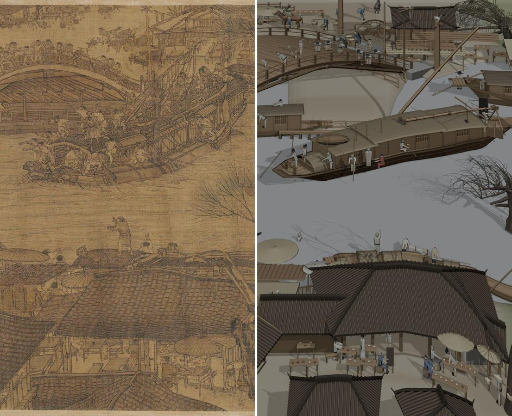
第六轮渲染第五轮渲染第四轮渲染第三轮渲染第二轮渲染第一轮渲染（修正前）有误与缺失（13）
编号
类型
判定
问题
修正
H0056
building
有误
Still only posts, a hanging tray and an umbrella x 1000-1100 y 1450-1700; no shop front with slat railing.
open shop front, vertical slat railing x 964-1058 y 1488-1580
H0057
building
有误
Hip-gable roof and balcony right, but the thick post at x~775 pierces the roof and balcony (top y~75).
remove the post at (775,310); keep the building as is
F0122
furniture
有误
Still hidden behind the thick extra post at x 765-785.
remove that post; keep the 1 m table at (762,265)
K0004
stall
有误
Not visible: the bridge-foot rail and a grey block x 556-760 y 275-350 cover (598,282).
lower/remove the grey block; vending table with goods at (598,282) on the bank
H0060
building
有误
Still a thick post x 350-372 y 0-140; painting shows short thin posts at y 18-56.
height 70% lower; posts 50% thinner
O0105
prop
有误
Small white umbrella x 200-250 y 1131-1187: ~100 px west, ~85 px north, about half the painted size.
move base to (349,1272); diameter 2x; tilt as painted
O0106
prop
有误
Now a pale lens-shaped dome x 250-344 y 581-631; size right, but painting shows a dark brushwood/mat heap.
dark brown irregular heap, flatter, 3 m long, at (326,620)
X0106
structure
有误
Front rail y~325 at x 0 (paint 294) and y~237 at x 500 (paint 262): crown east of tile; pale solid fills the arch.
put the crown near x 250; lower east end 25 px; make arch underside open dark timber ribs
H0062
building
有误
Roof slope edge (106,1437)-(6,1587); painted diagonal ~(300,1350)-(0,1700), ~150 px further east, so floor shows.
widen the roof slope ~150 px east
H0063
building
有误
Pale awning added above, but still a dark wide tiled box x 0-380 y 1275-1400; painting: open panelled booth x 0-168.
width x 0-168; open booth with panelled walls; no tiled roof under the awning
P0217
person
有误
Figure on open water at (187,1025), north of the moored boats.
place on the boat deck at (259,1152)
P0204
person
有误
Rail-leaners (P0204, P0209, P0200, P0215, P0216) stand mid-deck, not at the front rail.
move to the front rail line, lean_rail pose facing south
P0205
person
有误
Roof pole-pushers (P0197, P0205, P0207, P0211, P0185, P0190) still missing from the big-boat roof.
stand on the cabin roof at their bases with poles raised toward the bridge
人群
bridge deck x 0-640 y 160-340：画中约 20 人，模型 12 人。Much better than round 7 (2). Figures stand mid-deck; the painted crowd leans on the front rail, which is empty in 3D.
big boat x 70-1100 y 300-800：画中约 25 人，模型 9 人。Bow pole crew (5) and side-deck crew read fine; the cabin roof is still empty, no pole-pushers fending off the bridge.
moored boats and water x 150-1000 y 990-1110：画中约 6 人，模型 5 人。Arm-raised boatman on B0033 good; one figure still stands on open water at (187,1025).
far-bank street x 0-640 y 20-230：画中约 11 人，模型 10 人。Porters with baskets, cart crew and donkeys read well; the extra horse remains.
restaurant hall and stall x 130-1050 y 1440-1630：画中约 11 人，模型 10 人。Diners, waiters, vendor and customer good.
模型多出的东西
(775, 200) Thick post x 765-785 y 75-310 with a white cap, rising through the H0057 roof and balcony; hides F0122
(130, 90) Horse x 75-195 y 45-125 on the far-bank street; painting has people and tables there
(110, 40) Bare antler-like branch prop x 70-150 y 15-60 behind the F0132 table
(100, 510) Lattice-walled cabin box x 0-206 y 425-600 under the bridge; painting shows a plank revetment rail
(820, 510) Second horizontal mast on trestles on the big-boat roof x 619-1025 y 494-525, duplicate of O0099
(370, 450) Large pale solid semicircle x 130-600 y 280-600 filling the bridge arch opening
(690, 310) Grey abutment block x 556-760 y 275-350 at the bridge foot, covering K0004
tile21 · 258.2–274.0 cm 3/5
正确 31 · 有误 9 · 缺失 1 · 忽略 10
Overall match is moderate and close to round 7. The far-bank terrace, the willows, B0034 with its cabin and crew, B0036, H0064 and the umbrellas read like the painting. The H0065 west eave is now close to the painted line. The Rainbow Bridge deck is still about 170 px too far south at x 550-700 (the east end at x 1100 now matches). The west end is still a grey-walled landing with a big upright lattice gantry over the road. The painted deck crowd of about 35 people is still mostly missing. A0033 has moved onto the far terrace, S0002 is still a black box, and A0038's sacks still float beside it.
与上一轮相比：Improved: the H0065 west eave is now close to the painted line; K0011 is the right width; the east end of the bridge deck matches; the O0115 lattice is now full size. Worse: A0033 jumped about 200 px north onto the terrace; O0115 is now a heavy upright gantry with an extra post; the H0065 east eave is now about 90 px too far south. Still wrong: middle and west of the deck too far south, landing and wall, deck crowd missing, S0002 box, A0034 on the rail, A0038 load, X0113 hidden.
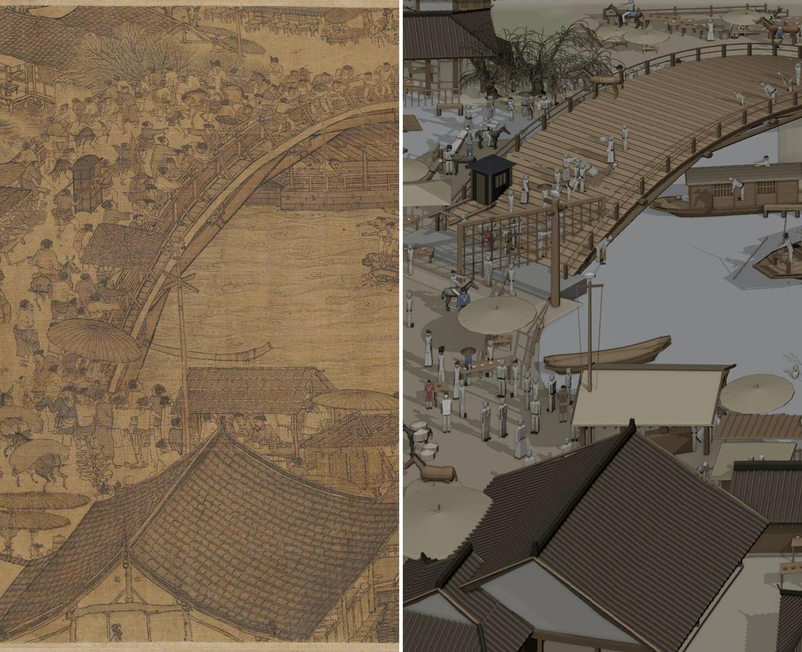
第六轮渲染第五轮渲染第四轮渲染第三轮渲染第二轮渲染第一轮渲染（修正前）有误与缺失（11）
编号
类型
判定
问题
修正
O0111
prop
缺失
Not built. A plain brown plank lean-to at x 868-1100 y 1144-1212 stands in its place, with no woven lattice.
Give that lean-to a woven lattice-mat texture on posts, or build O0111 as a lattice awning.
X0110
structure
有误
The east end now matches (south rail y 250 vs painted 281 at x 1100). At x 644 the south rail is at y 581 vs painted ~380. The west end is still a grey-walled landing (x 70-420 y 690-830).
Bow the arch further north in the middle: the south edge should pass (650,390) and (500,600), then follow the painted ramp to (310,1040). Delete the landing and its wall.
A0033
animal
有误
The dark mule with a rider now stands on the far terrace at x 560-665 y 10-80, about 200 px north of the painted spot on the deck (base 624,282).
Move to base (624,282) on the deck, just inside the north rail, pitch = 0.
H0065
building
有误
Top corner (606,1200) matches. The west eave is now close (y 1350 vs 1375 at x 250). The east eave is about 90 px too far south at x 1000 (1446 vs ~1350). The west half breaks into lower roof pieces.
Raise the east eave about 90 px at x 1000, with an upturned corner. Make the west slope one continuous plane down to (0,1700).
A0034
animal
有误
Brown horse at x 495-615 y 185-270 stands across the north rail, about 100 px north of the painted spot (base 506,368).
Move the base to (506,368) on the deck/ramp surface, inside both rails.
X0113
structure
有误
Only a beam at y ~1780 x 330-600 shows. The posts and beam are mostly hidden by lower roof pieces (x 0-366 y 1544-1800) and a grey gable panel.
Delete the lower roof pieces. Show the X0113 posts and beam under the H0065 gable, with an open truss in place of the panel.
O0115
prop
有误
Now a large upright lattice gantry with heavy posts (x 156-437 y 562-850) standing on the landing, with figures inside. Painted: one tilted lattice panel at x 268-448 y 598-762.
Build a single panel 180x160 px, tilted about 60° from horizontal, with no posts or crossbar; trim it to start at x 268.
S0002
sedan
有误
Black box with a small hip cap at x 187-306 y 425-562: about 40 px too wide and 25 px short at the bottom, with no lattice.
Width 80 px, base (244,592), height +20%, lattice side panels, brown wood colour.
A0038
animal
有误
Small brown animal at x 0-150 y 1250-1330 bends its neck to the ground and has no load. Three pale sacks float stacked beside it at x 20-90 y 1160-1260.
Scale 1.3x, face west, put two large sacks on its back (not on the ground), base (96,1352).
K0012
stall
有误
Not visible as a second umbrella: K0011's disc covers x 0-231 y 1312-1500. The painting shows two separate umbrellas, K0012 lower at y 1400-1470.
Lower K0012 so its canopy sits at y 1400-1470, under and south of K0011, width 190 px.
P0230
person
有误
The lean_rail figures (P0225, P0230, P0231, P0234) stand in mid-deck, not at a railing, because the south rail is too far south.
After moving the south edge north, snap lean_rail figures to the south railing.
人群
far-bank terrace x 450-1100 y 0-150：画中约 10 人，模型 9 人。Count and placement fine; figures stiff and mostly white.
bridge deck x 550-1100 y 150-450：画中约 35 人，模型 9 人。The painted deck is packed, with many people leaning over the south rail. The 3D deck is bare planks with a few bent figures. A row of about 8 stands just north of the north rail.
west ramp and willows x 150-550 y 150-650：画中约 30 人，模型 28 人。Groups around the willows match. About 12 figures stand inside the O0115 gantry on the landing, where the painting has road.
road west of bridge x 0-450 y 650-1000：画中约 20 人，模型 18 人。Count fine; a few still stand on the landing.
near bank x 0-900 y 950-1300：画中约 30 人，模型 30 人。Count fine; figures stiff, evenly spaced and mostly white.
B0034 bow and cabin x 770-1100 y 400-800：画中约 8 人，模型 6 人。Bow polers and cabin-roof figures are present; good.
模型多出的东西
(425, 700) Thick post with a crossbar (x 412-437 y 550-850), part of the O0115 gantry. The painting has only the thin X0112 pole.
(245, 760) Stepped deck landing with a grey base wall (x 70-420 y 690-830) over the road.
(180, 1670) Lower tiled roof pieces at x 0-366 y 1544-1800 under the H0065 west slope; they hide X0113.
(1010, 1380) Dark slatted roof/wall at x 919-1100 y 1269-1494. The painting has lattice walls and open stalls there.
(55, 1210) Three pale sacks floating stacked next to A0038 and a dark animal head.
tile22 · 271.1–286.9 cm 3/5
正确 28 · 有误 9 · 缺失 2 · 忽略 17
Still reads as the same scene: far-bank open restaurants, the long upper boat with lowered mast, the moored cargo boat with crew, the stall cluster, the shed, the single-wheel cart and the H0068 roof at bottom right. Few round-7 corrections are visible: the brown pack donkey now has its head down and the H0068 lower eave end is closer to the painted line. Worst problems remain: K0020 left part is still a steep shingled pyramid instead of a shallow mat roof; K0013 thick post still goes through the K0014 mat; on the moored boat a figure still stands raised behind the bent crewman, who holds a floating jar; pack-donkey loads now float in a stacked column beside the dark donkey; the H0068 upper eave is still ~130 px east; G0009 lantern is now hidden under an over-large low umbrella.
与上一轮相比：Improved: brown pack donkey now head-down instead of sitting upright; H0068 lower eave end closer to painted line; K0016 shows a sliver. Worse: G0009 lantern now hidden under an over-large umbrella; pack loads float stacked beside the dark donkey; K0014 mat reads as a hipped tent. Still wrong: K0020 shingled pyramid, K0013 post, F0149, K0015, O0131, A0039 pose, floating jar and raised figure, staircase, gangplank/board, cart shafts, tree through roof, stakes.
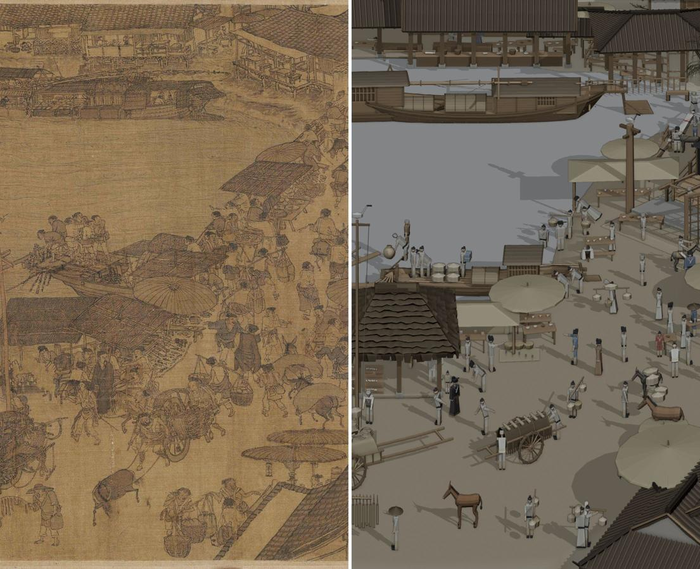
第六轮渲染第五轮渲染第四轮渲染第三轮渲染第二轮渲染第一轮渲染（修正前）有误与缺失（13）
编号
类型
判定
问题
修正
H0067
building
有误
hip roof x 770-1100, eave still horizontal at y~165; painted front eave slopes (750,95)-(1000,175)
slope front eave along (750,95)-(1000,175); keep east-end height; lower ridge so K0015 shows
F0149
furniture
有误
bench still outside the railing at x 1000-1050 y 287-315, on the water side
move bench to base 935,262 inside the railing
K0015
stall
缺失
umbrella x 796-900 y 24-58 still hidden behind the H0067 roof ridge (roof top y~35)
raise pole ~30% (canopy top above y 20) or move canopy 25 px north
K0016
stall
有误
only a pale sliver x 715-835 y 10-35 shows above the H0067 west corner; painted full canopy y 40-82
raise pole ~30% and move 20 px west so the canopy clears the roof corner
K0013
stall
有误
canopy ok x 795-970 y 450-500; thick post with crossbar still runs y 385-675 through the K0014 mat
thin pole, base at 890,522 behind the K0014 mat; delete the crossbar
K0014
stall
有误
mat x 687-1037 y 503-581 now reads as a hipped tent (ridge lines); painted a flat mat tilting down westward
flat single-plane mat, tilt ~15° down to the west, mat texture
K0020
stall
有误
left part still a steep shingled pyramid x 10-340 y 900-1130; painted a broad shallow mat roof; right flat canopy ok
replace left roof by shallow lean-to mat, top y~920, eave y~1090, mat texture, no shingles
A0039
animal
有误
position ok (x 290-410 y 1525-1672) but stands stiff upright, head up, no traces; painted plunging forward, head low
head lowered, forelegs braced, body pitched forward; traces from collar to V0003 shafts
H0068
building
有误
lower eave end ~(720,1780) near painted; upper end reaches (1020,1525) vs painted (887,1525): too shallow, ~130 px east at top
rotate ~10° so eave runs (680,1765)-(887,1525); or move 70 px west and steepen
G0009
sign
缺失
lantern box no longer visible; base 849,1510 is covered by the over-large umbrella canopy x 837-1100 y 1350-1556
hang small lantern box at 849,1458-1510 under the canopy; raise/shrink umbrella so it shows
O0131
prop
有误
still 2-3 short sticks x 77-127 y 862-893; painted a fan of 4-5 poles from the bow
fan 4-5 thin poles from bow (130,860) down-left to y~930
P0389
person
有误
still raised above deck behind the bent crewman ~175,694-825, feet ~50 px above deck
drop to deck height y~870, beside the bent man
P0388
person
有误
bent crewman holds a ~30 px jar floating in the air at 122,797
remove held jar or set it on deck at 121,860
人群
far-bank shops and upper boat x 0-1100 y 80-340：画中约 8 人，模型 6 人。diners under H0067 and H0070 visible; acceptable
moored boat deck x 100-350 y 660-880：画中约 7 人，模型 6 人。crew on deck beside bales; a figure still stands raised behind the bent crewman ~175,694-825; bent man holds a big jar floating at ~122,797
road and stalls x 650-1100 y 300-1350：画中约 40 人，模型 30 人。layout good; red child ok; dark donkey's sack loads float as a stacked column beside it x 920-990 y 1160-1250; brown donkey head-down now but unloaded
shed and cart x 0-720 y 1090-1490：画中约 16 人，模型 9 人。black-robed official ok; runners and cart men placed; seated crowd under the shed only ~3 of ~10
bottom porters x 0-830 y 1490-1800：画中约 6 人，模型 5 人。straw-hatted man ok; porters with shoulder poles x 550-770 visible
模型多出的东西
(122, 797) large bellied jar floating above the bow deck
(875, 560) K0013 thick post with crossbar y 385-675 through the K0014 mat and tables
(1050, 630) wooden staircase/ramp x 990-1100 y 540-720 at the road edge; painting shows people there
(900, 340) gangplank from upper-boat stern (800,265) and loose board x 862-950 y 315-362 on the water
(760, 270) upper-boat stern extends to x~800, ~100 px past the painted stern (~705)
(1075, 220) bare tree twigs x 1056-1100 y 175-270 through the H0067 roof
(190, 1400) ladder-like cart shafts x 65-320 y 1340-1440 across the running men
(955, 1205) three pack loads stacked vertically in the air beside the dark donkey, not on its back
(970, 1450) single huge umbrella x 837-1100 y 1350-1556; painted two smaller umbrellas x 760-1100 y 1355-1470
(40, 1615) row of pointed stakes x 0-85 y 1565-1670; painting shows a fringed hanging mat
tile23 · 284.1–299.8 cm 3/5
正确 27 · 有误 6 · 缺失 1 · 忽略 3
The river boats, the far-bank shop row, the vane pole with its gangplank, the umbrella stall, the cart and the street crowd all stand where the painting has them. The wine-house roof has shrunk (now x 0-445, y 1215-1500), so G0013 and the full ramp balustrade X0125 now show. But the roof still buries the wide red-rimmed lower eave of the 彩楼欢门, and the huanmen is still a flat comb of evenly spaced spires over X-braced screens, with a hollow box tray as its platform. The crane is still a pan and the horse is now rump-to-viewer but only ~60 px wide with its head held high. B0040 has lost its awning entirely, and the white box behind G0014 and the grey patch behind the banner are still there.
与上一轮相比：Improved: wine-house roof smaller so G0013 and the full ramp balustrade X0125 show; B0039 cabin taller; F0168 table moved left; P0393 reaches for the rack; horse turned rump to viewer; cart load is bundles, not loose poles. Worse: B0040 lost its awning (B0039 cabin overlaps it). Still wrong: roof over the huanmen eave, comb-like huanmen with box tray, pan crane, thin horse, white box, grey patch, stray far-bank shed, low tile22 hull.
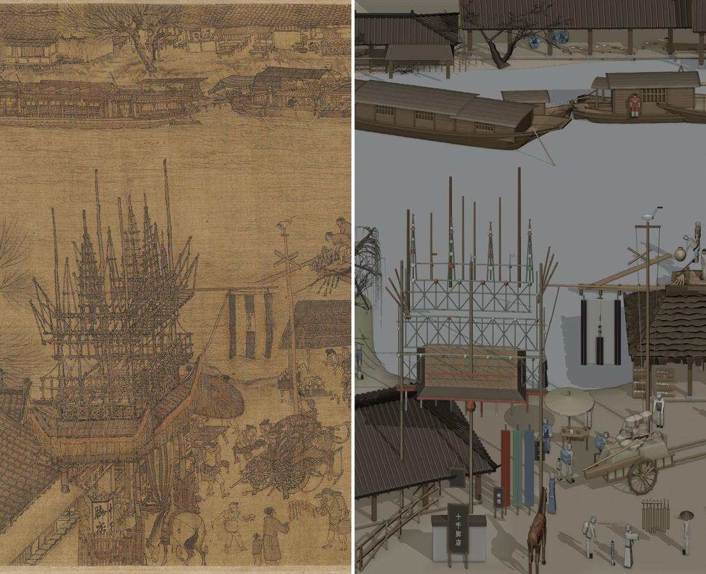
第六轮渲染第五轮渲染第四轮渲染第三轮渲染第二轮渲染第一轮渲染（修正前）有误与缺失（8）
编号
类型
判定
问题
修正
V0004
vehicle
有误
Right place, load top y ~1290 right, loose poles gone. Load now reads as a flat-sided tarp box with a few lumps; painted is a dense rounded heap of bundles and hoops.
round the load into a domed heap; add hoops/rope coils; wheel 20% larger
B0039
boat
有误
Cabin top now y ~225 (painted 210), good. But the cabin runs x 744-1081; painted x 794-1037. Its left end covers where B0040's awning should be.
shorten the cabin ~50 px at its left (west) end; raise 15 px; tiled roof material
A0040
animal
有误
Still a white pan with a handle at x 903-966, y 650-687 on the pole top. Painted: a standing crane/egret x 875-925, y 680-735.
replace with a crane figure (long neck, thin legs, ~45x55 px) on the pole top
B0040
boat
有误
Worse: the awning is gone. Only a bare hull and a pole show at x ~680-745, y 300-370, partly under B0039's cabin. Painted: striped mat awning x 650-800, y 230-295.
rebuild a low arched striped mat awning over x 650-800, top y ~230; keep it clear of B0039
A0041
animal
有误
Now rump toward the viewer (better), but only ~60 px wide (x 545-607) with the head held high. Painted: ~190 px wide (x 478-665), head lowered to the left.
scale 1.5x in width/body; rotate ~30° so the head points left; lower the neck and head
X0123
structure
有误
Still 4-7 identical lattice spires evenly spaced (tops y ~669) over flat X-braced screens. Platform is a hollow box tray (x 196-534, y 1080-1260); painted lower tier is a wide hexagonal red-rimmed eave y 1250-1450, now under the wine-house roof.
cluster spires with tops y 500-700; replace the box tray with a wide hexagonal eave ring, red rim, x 90-500, y 1250-1450
O0141
prop
缺失
Its spot (200,1535) under the eave is now visible, but nothing hangs there.
add a small gourd lantern ~30x60 px hanging from the eave at (200,1470-1535)
P0397
person
有误
Stands upright at ~(950,1240-1340) in front of the shelves; painted bends over the back of the cart.
pose = work_bent, facing the cart load, at (958,1335)
人群
far-bank shop row x 500-1100 y 80-190：画中约 4 人，模型 3 人。Three seated men at x 555-640, y 100-135 sit upright at the tables; P0407 at (655,135) not distinct.
boats in river x 790-1100 y 200-370：画中约 3 人，模型 2 人。P0399 (red) stands in front of the B0039 cabin; the man inside the cabin gallery is not visible.
stern boat near bank x 1000-1100 y 680-840：画中约 2 人，模型 2 人。One bending and one standing boatman on the stern, as painted.
street x 550-1100 y 1150-1780：画中约 17 人，模型 15 人。Positions match well (porter ~745, child ~808, robed pointing man ~865, hat vendor ~1045 now reaching for the rack). P0397 stands upright instead of bending over the cart.
模型多出的东西
(220, 1350) Wine-house roof still too big: x 0-445, y 1215-1500. It covers the huanmen's hexagonal lower eave; painted roof is only x 0-180.
(326, 1690) Plain white box with a dark cap at x 243-409, y 1615-1762 behind the G0014 board.
(730, 1110) Pale grey slab/patch at x 615-852, y 1000-1231 behind the banner, lighter than the ground.
(207, 190) Grey-roofed open shed at x 100-315, y 135-245 on the far bank, ~100 px right of the painted balcony house (x 20-180); probably tile22's.
(500, 420) The long boat's hull (probably tile22's) still sweeps down to y ~440 at x 0-550 (painted hull line y ~375); a loose oar at x 584-628, y 450-519.
tile24 · 297.0–312.7 cm 3/5
正确 19 · 有误 8 · 缺失 1 · 忽略 6
The far bank still reads well: house, fence, willows (T0151 trunk now at the painted base), the donkey file and the tow line. A brown table now stands on the wine-house upper floor. But the guests still stand, crumple or hover at it, and P0416/P0417 still sit on crates on a round mound outside. H0073 is now an open pavilion roof with a short ridge, but it is too small, about 50 px low at the top, and it stops near y 1600, where the painted roof reaches the tile bottom. B0043 is still one long gabled box. The lower eave under the balcony is still a plain slab. Most near-bank extras remain (hooked willow, lattice tower, post through the roof, blue man, water pole, edge planks).
与上一轮相比：Improved: F0170 table now on the upper floor; T0151 trunk moved to the painted base; the pole in T0152 and the log and grey box on the ground are gone; H0073 is no longer a single-apex pyramid; donkeys read better; T0154 slightly denser. Worse: P0419 now lies on the table. Still wrong: H0073 too small and low; B0043 one box; H0075 hidden; X0128/lower eave missing; P0416/P0417 outside; most extras remain.
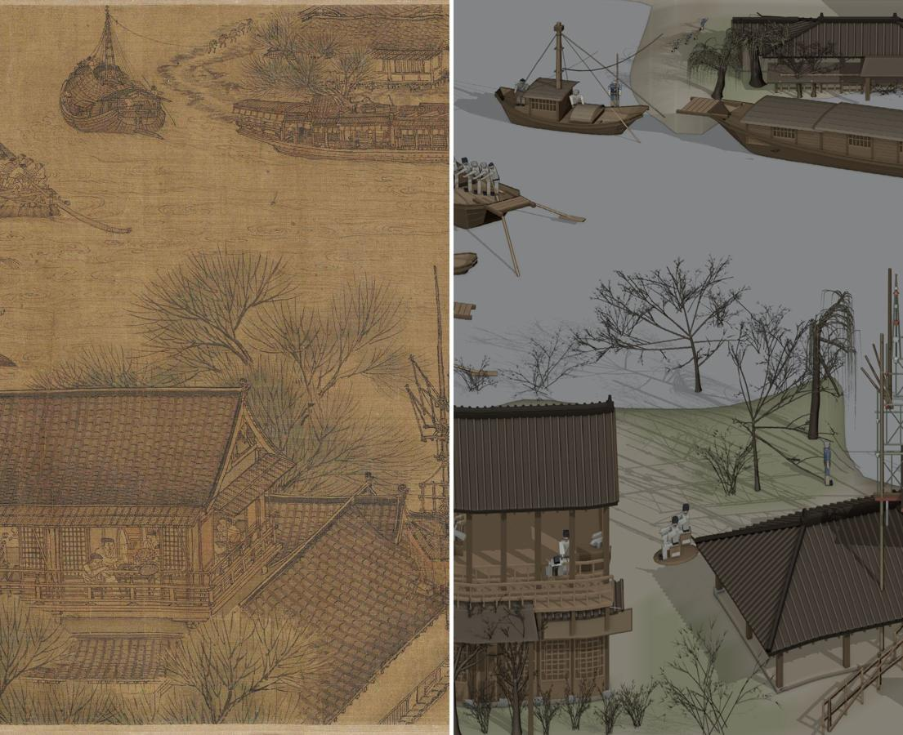
第六轮渲染第五轮渲染第四轮渲染第三轮渲染第二轮渲染第一轮渲染（修正前）有误与缺失（13）
编号
类型
判定
问题
修正
H0073
building
有误
Open hip pavilion; top/ridge at y 1215-1250 vs painted 1160-1200; left eave runs (550,1310)-(770,1590) vs painted (590,1470)-(810,1770); ground shows below.
Raise the ridge 50 px; enlarge the roof so its eaves reach the tile bottom; close it in as a building, not open posts.
B0043
boat
有误
Right place and length, but still one plank box under two plain gabled roofs with 2 small windows; painted has 4+ cabin sections with lattice bays.
Cabin as 4 sections with separate roofs of different heights, open lattice bays and posts; upswept bow and stern.
T0149
tree
有误
Thin trunk at about (845,1180) with sparse long branches; painted is a dense fine-twig crown x 690-965, y 700-1150. A hooked willow stands in its crown.
Crown density dense, 3x fine twigs, crown 270 px wide; remove the hooked willow at (890,940).
H0075
building
有误
Still not visible; the small roof at x 650-725, y 112-140 is covered by the T0151/T0150 crowns.
Raise the shed roof 0.5 m or thin the willow crown at (688,125) so the roof shows.
T0154
tree
有误
Right place; crown denser than in round 7 but still open sticks with tufts; painted is a dense fine-twig mass x 330-700, y 600-960.
Fine twig layer 2x more; keep the crown's right edge at x 700.
F0169
furniture
缺失
No basin or tray visible on the new table at (356,1398).
Place a round basin 0.4 m on top of F0170 at (356,1390).
X0128
structure
有误
Plain fascia board at y 1490-1560 and a sloped brown slab x 0-200; painted is a slatted band over a tiled lower eave y 1550-1680.
Slatted timber band 300 px wide at (330,1530); add a tiled lower eave roof x 60-470 under it.
B0045
boat
有误
The fragment at x 0-60, y 620-670 is a brown plank hull; painted is a dark mat roof.
roof = dark mat_arch over the fragment.
F0171
furniture
有误
Only a dark sliver at about (5,1350) at the edge; a pale crumpled figure fragment hangs above it at (10,1300).
Stool 0.4 m on the upper-floor slab at (11,1362) with a cup on top; check the edge figure.
P0417
person
有误
Still seated on a crate on a round mound on the ground outside, at about (540,1300).
Build the east side wing floor (x 480-600) at upper-floor level and seat him at (542,1352).
P0416
person
有误
Same: seated on a crate outside, at about (570,1260).
Seat him on the side wing floor at (568,1320).
P0421
person
有误
Stands at (270,1300-1390) instead of sitting at the table facing the viewer.
pose = sit at (268,1385) on the floor slab, facing south.
P0419
person
有误
Pale figure lies or hovers on top of the table at about (350,1325).
Seat him on the floor at (372,1352), facing left, beside the table, not on it.
人群
wine house upper floor x 200-600 y 1260-1420：画中约 6 人，模型 5 人。One guest stands at (270,1300-1390); one is low at the rail (245,1370); a pale figure lies or hovers on the table top (350,1325). P0416/P0417 sit outside on crates on a round mound at x 490-590.
far-bank path x 500-630 y 20-130：画中约 5 人，模型 5 人。Lead figure in blue plus four donkeys in file; more readable than in round 7.
towed cargo boat x 100-475 y 120-330：画中约 2 人，模型 3 人。Pole man at (396,237) is ok; P0420 sits at the cabin; an extra seated figure is at the bow (165,215).
left-edge crew boat x 0-120 y 380-450：画中约 5 人，模型 5 人。Five rowers at the sweep, as painted.
near-bank open ground x 560-1100 y 1000-1300：画中约 0 人，模型 1 人。A standing man in blue is still at (910,1080-1187), where nothing is painted.
模型多出的东西
(890, 940) Willow with a hooked bent top and hanging fronds, trunk x 880-900, y 790-1075; only bare fine-twig crowns are painted there.
(1080, 900) Lattice tower with red/white disks at x 1040-1100, y 650-1200, and a cluster of leaning poles at x 1010-1060; painted is one slender mast and an A-frame trestle.
(1046, 1350) Thick post from y 1200 down through the H0073 roof to y 1430, with a red bar at y 1220.
(910, 1135) Standing man in blue on the open ground.
(140, 600) Long pole standing in the water from about (122,530) to (160,675).
(25, 760) Short brown plank or ladder piece x 0-55, y 740-780 on the water.
(55, 905) Brown plank x 0-105, y 890-920 at the shore.
(184, 1670) Bare vertical pole x 184, y 1560-1780 in the foreground shrubs.
(590, 300) Pale light-grey block x 560-620, y 270-325 under the B0043 bow plank.
(480, 1100) Wine house roof (not owned here) ends with a vertical cut at x 385; the painted hip roof runs to x 580 with a corner at (580,920).
tile25 · 309.9–325.7 cm 3/5
正确 21 · 有误 3 · 缺失 2 · 忽略 5
The water half still matches well, and three round-7 complaints are fixed: the dog A0049 now stands on the bank in view, the B0046 bow men now stand on the raised bow, and P0435 now sits near the shelter. The H0076 eave is now at the painted line (y~1250). Still wrong: B0046 keeps the railed stern platform and has a short faceted dome where the painting has one long barrel mat cabin; the O0152 coils and the F0177 chest are still not built; the extra small boat at x770-960 y612-672 is still there; the foreground roof is still a flat slope with no diagonal hip, and a tilted roof slab sits at x140-360 y1305-1470. The upper wall of H0076 still has no lattice windows.
与上一轮相比：Improved: the dog A0049 is now visible on the bank; the B0046 bow men stand on the raised bow; P0435 sits near the shelter; the H0076 eave is at the painted line; T0164 is now a reed tuft. Worse: a tilted roof slab x140-360 y1305-1470 between the left house and H0077. Still wrong: B0046 stern platform and its short dome cabin, no O0152 coils or F0177 chest, the extra small boat at x768-959, no upper lattice on H0076, sparse bare trees, the flat foreground roof, the pale flat shed roof.
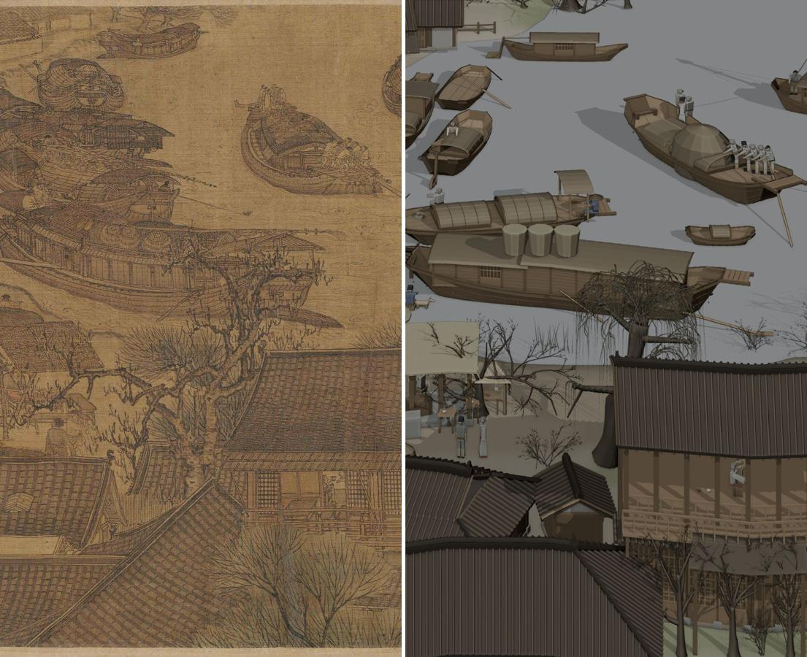
第六轮渲染第五轮渲染第四轮渲染第三轮渲染第二轮渲染第一轮渲染（修正前）有误与缺失（7）
编号
类型
判定
问题
修正
H0076
building
有误
The eave is now at y~1250 (painted ~1237), good. The upper back wall is still plain posts and boards; the painting has lattice windows at x700-760 and x950-1100.
add lattice panels x700-760 and x950-1100, y1290-1400, on the upper wall
B0046
boat
有误
The hull x596-1100 y256-550 is in place. The cabin is a short faceted dome plus a low plank roof; the painting shows one long barrel-vaulted mat cabin x690-960. The railed stern platform x965-1100 y475-520 is still there.
cabin = one long woven-mat barrel vault x690-960; remove the stern platform
T0166
tree
有误
The trunk is at x~202, with one long limb running right to x~580 at y~1000-1060. The painted tree has 4-5 thick crooked limbs filling x60-470 y880-1135.
add 3-4 crooked limbs spreading up-left and up; shorten the right limb to x~470
O0152
prop
缺失
Still nothing at x120-260 y410-462; only a hull edge is there.
build about 6 rope coils on the fore deck at x120-260, at deck height
F0177
furniture
缺失
Still no lidded chest at (98,414); there is a seated figure on a boat at (130,350) nearby.
put a lidded chest ~40x40 px standing on that deck at (98,414)
P0431
person
有误
The four bow men P0431-P0434 overlap, so only 2-3 can be read.
spread them along x712-786, about 20 px apart
P0435
person
有误
He sits about 60 px right of the shelter seat.
move 60 px left, 35 px up, to (458,528)
人群
boat B0046 x600-1100 y215-575：画中约 9 人，模型 8 人。The bow men now stand on the raised bow at x740-790, feet at y~325 (painted y~300), but only 2-3 can be told apart. The 5 stern scullers at x890-1010 y380-470 are right.
right-edge boat B0044 x1000-1100 y150-330：画中约 1 人，模型 1 人。A figure with a pole at ~(1070,250); acceptable.
moored boats x0-560 y300-600：画中约 3 人，模型 3 人。P0439 sits at (80,550), right. P0435 sits at ~(520,565), about 60 px right of and 35 px below the painted (458,528), next to the shelter. A seated man is on the small boat at (130,350).
left bank x0-250 y800-1260：画中约 4 人，模型 4 人。The talking pair P0436/P0437 at x137-221 y1137-1253 is right. P0441 is a blue figure at the left edge at (14,840). P0440 under the shed cannot be read.
restaurant gallery x880-950 y1290-1384：画中约 2 人，模型 2 人。The server is at x890-928 y1262-1350, about 30 px higher than painted; the guest is partly hidden.
模型多出的东西
(865, 640) Small boat with an arched cover x768-959 y612-672 on open water; the painting has only ripples and the grapnel there
(1030, 497) Railed open platform at the B0046 stern x965-1100 y475-520
(250, 1390) Tilted plank roof slab at x140-360 y1305-1470, at an odd angle between the left house and H0077; the painting has the left house roof and gable here
(400, 1600) Long flat foreground roof x0-1000 y1475-1800 with vertical courses; the painted roof has a diagonal hip ridge from (0,1775) to (544,1344)
(100, 955) Pale flat board roof x2-202 y881-1031; the painting has a sloped thatched shed roof x0-280 with thatch lines. It no longer hides the dog.
(160, 330) Plain open boats x45-300 y175-480 where the painting has a boat with tall round woven mat covers x100-340 y150-300
tile26 · 322.8–338.6 cm 3/5
正确 42 · 有误 5 · 缺失 3 · 忽略 10
Far bank still reads well: house row, open shed H0081 with tables, porter group on the gangplank, stump tree and boats B0050-B0052. Clear gains: the mooring pole O0155 now runs the painted way, the H0084 ridge is straight near y 1255, the bottom roofs H0090/H0092 reach the tile bottom, and X0138 no longer covers the left terrace. Worst remaining: X0138 is still a pale opaque board, now x 320-900 y 985-1127, about 90 px below the painted awning and hiding the customers' heads and the tables behind them. B0049 is still two boats, and the umbrella K0024 is a small flat disc about half the painted size.
与上一轮相比：Improved: O0155 pole direction; H0084 ridge straight; H0090/H0092 reach the tile bottom with a real gable; X0138 pulled back to x 320 so F0193-F0198 show again; X0139 curved curb gone; X0137 domes and K0024 now near their places. Worse: X0138 now reaches x 900 and hides F0184. Still wrong: X0138 low and opaque, B0049 two boats, K0024 and X0137 too small, X0140, fence and extra building.
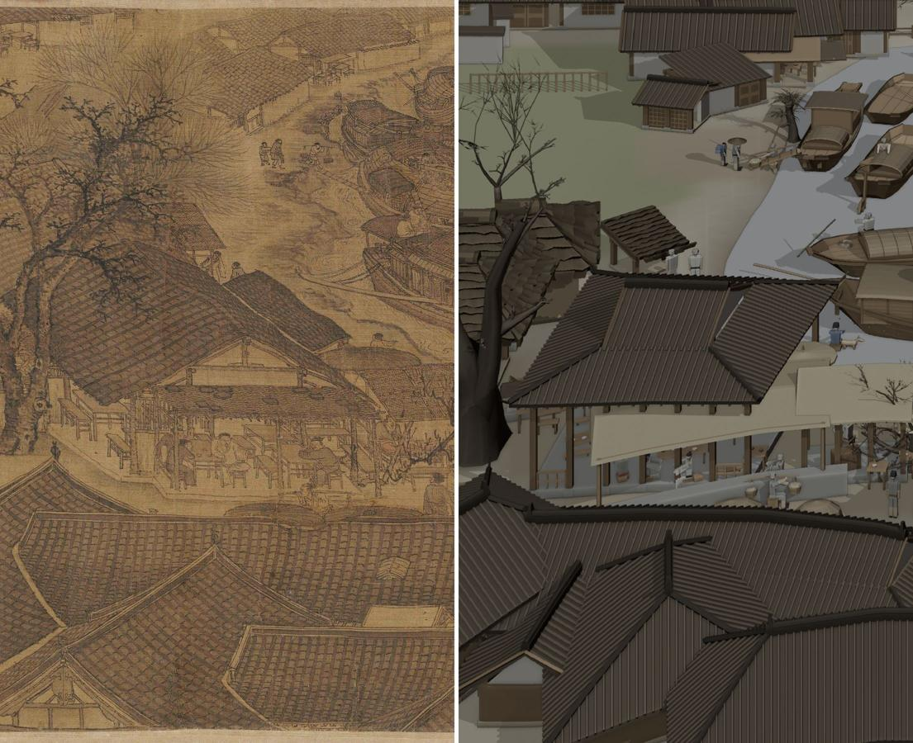
第六轮渲染第五轮渲染第四轮渲染第三轮渲染第二轮渲染第一轮渲染（修正前）有误与缺失（11）
编号
类型
判定
问题
修正
B0049
boat
有误
Still two boats: arched-mat boat x 830-1100 y 550-670 and a flat-roofed plank boat x 920-1100 y 637-800.
One passenger boat, hull x 870-1100 y 590-760, bow lower-left, gabled mat cabin on top; delete the second hull.
K0024
stall
有误
Now at about (872,850), close to painted, but a flat pale disc ~95 px wide; painted dome ~230 px wide (x 787-1019).
Radius 110 px, domed ribbed mat top, pole 95 px; keep centre (875,860).
X0137
structure
有误
Two mat domes now present but small: x 620-700 y 1250-1290 and x 820-905 y 1212-1240; painted x 555-760 and 790-945.
Widen domes to 205 and 155 px, top y 1210, above the H0084 ridge.
F0184
furniture
缺失
Bench at (738,1030) now under the X0138 board, which extends to x 900.
Raise X0138 to y 930-1025 (see X0138).
F0187
furniture
缺失
Table at (633,1060) behind the board; only legs show below it.
Raise X0138 (see X0138).
X0138
structure
有误
Pale opaque board x 320-900, top y 985, front edge y 1065 (east) to 1127 (west); painted flat awning y 925-1025.
Flat mat awning x 330-900, back y 925 front y 1025, tilt <10°, thin posts, mat texture, open below.
F0192
furniture
缺失
Lattice partition at (355,1010) hidden behind the west end of the board.
Raise X0138; lattice panel 75x100 px.
X0140
structure
有误
Only dark posts and grey wall in shadow at x 130-200 y 935-1060; a low railing at x 190-255 y 1140-1180.
White low wall x 115-245 y 940-1005 with short railing on top; move railing there.
P0448
person
有误
Head and shoulders hidden behind the X0138 board.
Raise X0138 to y 925-1025.
P0450
person
有误
Upper body hidden behind the X0138 board.
Same X0138 fix.
P0451
person
有误
Upper body hidden behind the X0138 board.
Same X0138 fix.
人群
far-bank road x 600-820 y 320-430：画中约 4 人，模型 4 人。Porter with baskets on the gangplank, hatted man, small figure; within ~20 px. Good.
boats x 820-1100 y 150-800：画中约 4 人，模型 3 人。Seated boatman on B0051 and a figure on the arched-mat boat; man near (915,810) matches the painted bow figure.
shed H0089 x 480-620 y 580-700：画中约 2 人，模型 2 人。Two standing figures at the right places.
tea house hall x 100-1000 y 950-1230：画中约 8 人，模型 6 人。Seated customers now visible from the chest down; heads hidden by X0138. Low seated man with baskets near (770,1170), standing man at the right edge.
模型多出的东西
(1010, 720) Second boat (flat pale roof on plank cabin) x 920-1100 y 637-800; painting has only B0049 here.
(960, 805) Dog beside the standing man on the bank; not in the painting.
(190, 200) Long wooden fence x 30-365 y 175-225 on open green ground; painting has pine foliage.
(185, 650) Building with layered dark shingle roof x 0-345 y 490-800 under the tree; painting has tree canopy.
(70, 960) Big tree trunk reads as a flat dark slab x 0-140 y 820-1100.
tile27 · 335.7–351.5 cm 3/5
正确 23 · 有误 10 · 缺失 5 · 忽略 5
Still reads as the same street: gallery, donkey train, wheelwright yard under the giant twin tree, horse group, ox cart and the big lower-right roof complex are in place. Real gains this round: the cart wheel O0160 is now a full-size spoked wheel, the plank pile O0159 is a proper heap, the cart frame O0158 leans, and the balustrade X0143 exists. Worst problems: the tile26 teahouse roof still covers the central crowd and K0025 (edge ~300 px right of the painted diagonal); the leading ox A0053 still reads as standing on the shaft ox A0055 because A0055 is ~100 px too long to the right and hides its legs; X0142 is still a full-height wall hiding the courtyard tables. T0173 teal needles, missing X0146 railing, X0141 steps and the empty ground at the top right are unchanged.
与上一轮相比：Improved: O0160 is now a full-size spoked wheel; O0159 a proper plank heap; O0158 leans correctly; X0143 balustrade built; the H0096 roof void is gone; G0015 no longer sits in the roof face. Worse: G0015 now missing entirely; X0143 crude. Still wrong: teahouse roof over crowd/K0025, A0053 reads as on A0055's back, X0142 full height, T0173 needles, H0097 too wide, O0158 too short, X0146/X0141 missing, X0145 railing misplaced.
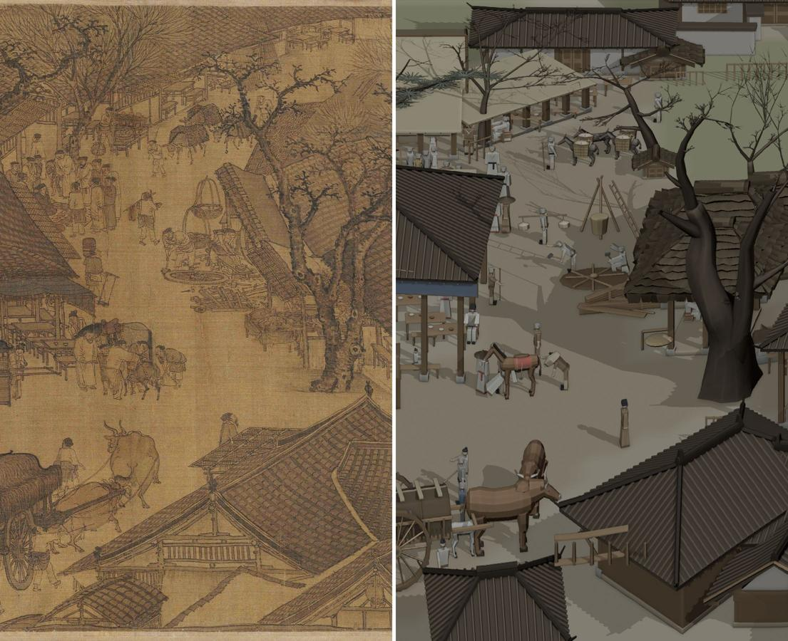
第六轮渲染第五轮渲染第四轮渲染第三轮渲染第二轮渲染第一轮渲染（修正前）有误与缺失（17）
编号
类型
判定
问题
修正
X0141
structure
缺失
No staircase at x 1040-1100 y 955-1005; a dark eave and thatch box fill the right edge there.
Build 4-5 treads with railing descending right, base (1070,1005); keep neighbour roofs out of y 950-1010.
X0142
structure
有误
White wall x 790-1020 y 10-110 still full storey height; hides courtyard tables F0202/F0203.
Wall height 50% lower (~1.2 m courtyard wall).
F0202
furniture
缺失
Hidden behind the X0142 wall.
Resolves when X0142 is lowered.
F0203
furniture
缺失
Hidden behind the X0142 wall.
Resolves when X0142 is lowered.
H0096
building
有误
NE ridge finial at ~(970,1113) vs painted (1033,1093); walls solid brown, painted open timber frame; roof void gone.
Move NE end ~60 px right, 20 px up; open south/west front with posts.
H0097
building
有误
Hut roof spans x 630-867 y 133-187, still ~2x wider than painted 700-810; tiled look, no lattice gable.
Now leans the right way but only ~170 px (x 600-683 y 507-667); painted frame runs (603,460) to (850,813), ~400 px.
Length x2.3, lean ~35° from vertical, foot at (760,800); side frame with rungs.
X0143
structure
有误
Now built at x 500-703 y 1473-1587, but crude: 4 posts, one slanted top plank overshooting left; painted fine balustrade under gable.
Level top rail, ~20 balusters, end at x 730; attach under H0096 west gable.
X0145
structure
有误
Gallery street side (325,307)-(475,227) shows posts only; stray short railing still at x 205-270 y 370-415.
Move that railing to the gallery front posts along (325,307)-(475,227).
A0053
animal
有误
Body x 340-425 y 1240-1435 rises above A0055's back with legs hidden; reads as standing on it. Head not turned back left.
Shorten A0055 so legs show; scale A0053 1.3; head looks back-left with horns at (300,1190).
X0146
structure
缺失
No balcony railing at x 270-400 y 1597-1632; only the H0101 roof.
Add railing ~130 px under the H0101 north eave at y 1600-1630.
T0173
tree
有误
Bare trunk in place but teal needle clumps still at x 0-240 y 190-300; painted fine bare twigs.
Remove needle foliage; bare twig crown only.
A0055
animal
有误
Shaft ox x 200-463 y 1360-1560, head/horns at x ~460; painted head down at x ~350. Hides A0053's legs.
Scale length 0.75 keeping rump at shafts; head lowered at (350,1480).
G0015
sign
缺失
Rectangular flag removed; nothing at the eave (218,1617-1660) now.
Small striped triangular pennant ~30x40 px on a short pole at the H0101 north eave, base (218,1660).
K0025
stall
有误
Mat hidden under the tile26 teahouse roof, which reaches x ~307 at y 467-787.
Trim teahouse roof east edge diagonally: x 0 at y 455 to x 220 at y 760.
P0461
person
有误
Still carries a shoulder pole with two hanging loads; painting shows one bundle at the rear end.
One bundle on the rear end of the pole only.
P0463
person
有误
White figure overlaps the horse's front legs at about (260,1060).
Move ~40 px left, clear of the horse.
人群
crowd x 20-340 y 370-660：画中约 22 人，模型 12 人。Only the top row and the figures at x 290-340 show; the rest are under the tile26 teahouse roof.
wheelwright yard and donkey path x 380-760 y 250-800：画中约 6 人，模型 6 人。Walker between huts, two bending wheelwrights with hammers, porter. Porter still carries two hanging loads.
horse group and teahouse x 30-530 y 830-1110：画中约 10 人，模型 7 人。Group in place with wide-hat elder and seated drinker; a white figure still clips the horse front legs at ~(260,1060).
ox cart x 90-260 y 1180-1660 and street x 600-650 y 1120-1250：画中约 4 人，模型 4 人。Driver with goad, man at the wheel, P0457 standing in the street. Fine.
workshop interior x 790-990 y 820-930：画中约 3 人，模型 1 人。Others hidden by the tree trunk/counter.
模型多出的东西
(150, 630) Dark tiled teahouse roof (tile26) spans x 0-307 y 467-787; painted edge is diagonal and leaves the crowd visible.
(120, 240) Teal needle foliage clumps x 0-240 y 190-300; painting shows a bare dark-branched tree.
(980, 320) Empty green ground with fences at x 880-1100 y 150-500; painting shows a dense feathery tree crown and thatch mass.
(237, 395) Short stray railing segment x 205-270 y 370-415 in the open street among the crowd.
(100, 1450) Ox cart (tile26) is an open slatted box; painting shows a big arched mat cover over the load.
tile28 · 348.6–364.4 cm 3/5
正确 26 · 有误 12 · 缺失 1 · 忽略 5
The street corner reads as the same scene: restaurant H0104 with blue valance, tables and diners, both freight carts at their painted bases, the fortune-teller hut with its two white signs and now a figure behind them, both dark umbrellas, the lower-left shop. The extra free-standing gable roof over K0026/V0005 is gone, so the lower street is now open as painted. Worst remaining problems: both cart covers are still plank tunnels with ribs instead of shaggy two-hump straw mats; the H0104 east slope still rises to a ridge at y ~455 over x 800-1100 and hides X0147 and the upper-right crowd; the willow still has a tall trunk column to y ~110 and its knot lies across the H0104 roof. The plank slab and roof-end block still hide F0219/F0220/F0226.
与上一轮相比：Improved: extra gable roof over K0026/V0005 removed, lower street open; X0148 closed (no interior on the roof); O0164 now tall with gable lid; V0006 east end shortened; a figure now at the fortune-teller hut. Worse: willow knot now lies across the H0104 roof. Still wrong: plank cart covers, H0104 east hip hides X0147 and crowd, willow column, plank slab over F0226, F0219/F0220 hidden, extra leafy tree, X0151/X0152, rider legs.
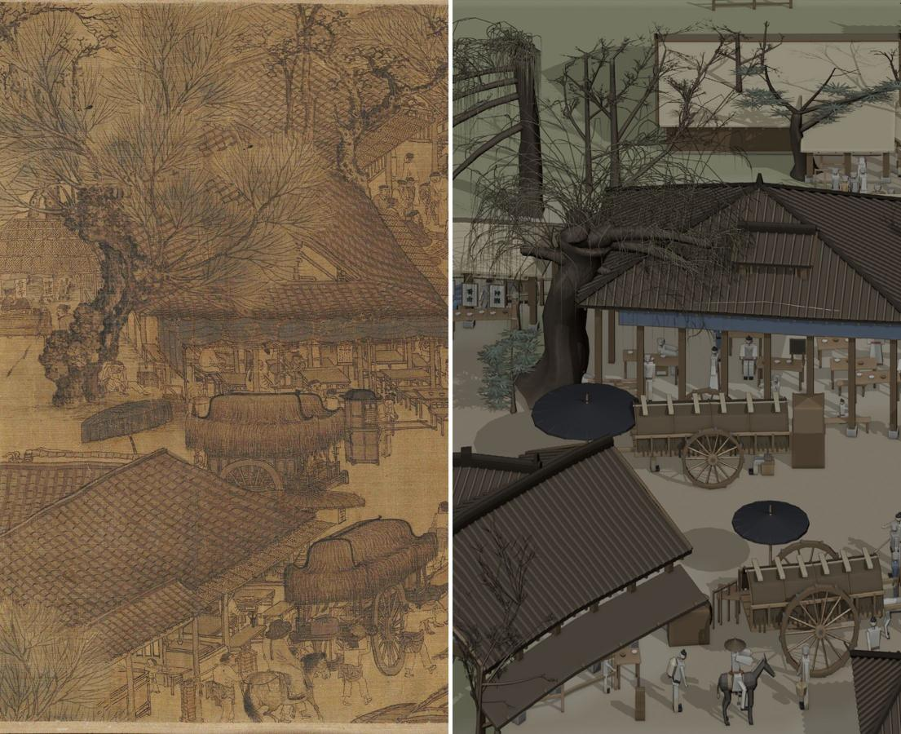
第六轮渲染第五轮渲染第四轮渲染第三轮渲染第二轮渲染第一轮渲染（修正前）有误与缺失（14）
编号
类型
判定
问题
修正
X0147
structure
缺失
Mat lean-to x 925-1100 y 505-665 not visible; H0104 east roof (ridge y ~455) covers x 800-1100 y 455-700.
cut H0104 east hip back along the painted diagonal (800,300)-(1100,720); build low mat lean-to there
V0005
vehicle
有误
Now fully visible (gable roof gone), base and spoked wheel right; cover still a plank tunnel with ribs and slats.
cover = shaggy dark-brown straw mat, two humps, hanging fringe
X0148
structure
有误
Now closed (no interior showing), but ~205x145 px at x 687-894 y 544-688 with a flat lid; painted small gabled vent.
scale to 140x105 px; small gable roof instead of flat lid
H0104
building
有误
Tile roof and blue valance good; east slope ridge at y ~455 covers x 800-1100 y 455-700 where painting shows crowd and lean-to.
shorten east hip ~150 px, follow painted diagonal eave
F0217
furniture
有误
Not readable at (678,1514); cart V0005 rear rails and the lower-left roof end cover it.
trim roof end; keep small table visible left of the cart
V0006
vehicle
有误
Spoked wheel right, east end now ~x 830 (good); cover still a plank tunnel with ribs and slats.
cover = shaggy straw mat, two humps, fringe
F0219
furniture
有误
Basin not visible; dark brown roof-end block still covers x ~550-640 y ~1290-1560.
trim lower-left shop roof end ~60 px; wide shallow basin on stand
F0220
furniture
有误
Counter not visible; same roof-end block covers the shop front bay.
trim lower-left roof eave ~60 px up at x 500-650
T0176
tree
有误
Still sparse: thin trunks at x ~330 and ~390 with few twigs; painted dense fan-shaped twig crowns over x 280-700 y 0-470.
3 trees, fan twig clusters, twig density 3x
T0177
tree
有误
Gnarled lower trunk x 150-330 good; knot now lies across H0104 roof x 250-470 y 530-660; thick column and bars continue to y ~110.
end trunk at y ~540 west of the roof; spread whip strands from there over x 0-760
F0226
furniture
有误
Still hidden under the plank slab (now dark brown) x ~90-460 y ~1400-1800 below the shop eave.
remove plank slab so table and child show
X0151
structure
有误
No bamboo fence readable at x 128-248 y 678-748; only one post x ~185-205 y 680-795 and the extra leafy tree.
build bamboo fence 120 px wide at hut front y 678-748
X0152
structure
有误
One diagonal rail at x ~275-405 y ~1650-1725; roof/slab still covers x 60-230 y 1600-1800; no lattice.
lattice balustrade x 230-400 y 1640-1760; remove slab there
P0494
person
有误
Rider has hat, but one leg hangs to y ~1725, near the mule's hooves; reads half-standing beside the mule.
legs bent astride, feet at mule belly height
人群
restaurant interior x 400-1100 y 840-1010：画中约 10 人，模型 8 人。Diners and servers at tables; figures pale and blocky; seating plausible.
upper-right crowd x 870-1100 y 330-700：画中约 12 人，模型 6 人。Only the row under H0102 (y ~400-470) shows; the slope crowd is covered by the H0104 east roof.
fortune teller x 0-330 y 680-970：画中约 5 人，模型 2 人。A standing figure now behind the signs and squatting P0502; seated teller and clients at the table still absent.
lower street x 450-1100 y 1100-1780：画中约 10 人，模型 9 人。Groom with bucket, porter, rider, men at cart V0005 present and now unobstructed; positions good.
模型多出的东西
(140, 905) Small blue-green leafy tree x 60-220 y 805-1000; painting shows the willow's dark mottled lower trunk there.
(1040, 1700) Striped roof corner x 980-1100 from y ~1590; painted roof corner starts only near y ~1725.
(275, 1600) Dark plank slab x ~90-460 y ~1400-1800 under the lower-left shop eave; not in the painting.
(100, 300) Thick horizontal willow bars x 0-170 y 170-420 left of the trunk column.
(735, 12) Wooden fence on the top edge of far roof H0103.
tile29 · 361.5–377.3 cm 3/5
正确 29 · 有误 9 · 缺失 0 · 忽略 5
The tile still reads as the same scene: gate yard with blue soldiers and leaning poles, the big old tree, the fortune-teller booth under willows, and the big H0105 roof with its front gable annex at the painted places. Round 8 fixed the hanging signs (決疑 now under the eave at y~685-730), moved the T0183 trunk east, added a disc finial to the banner pole and a pale strip under the annex apex. Still wrong: H0108 and H0110 roofs read as flat vertical plank panels (H0110 now with a row of standing cylinders on its ridge), H0107 is an open pavilion on red columns, F0233 is a roofed grey box, the booth roof is a plain board slab. New regressions: the horse A0059 is contorted and faces east, and P0508 on the H0105 ridge has disappeared.
与上一轮相比：Improved: 決疑 and booth boards now at the painted eave height; T0183 trunk at the painted place; disc finial on banner pole; something now under the annex apex (pale, should be dark). Worse: horse A0059 contorted and facing east; P0508 vanished from the ridge; O0173 now too big and 65 px east; willow limbs thick pipes; cylinders on H0110 ridge. Still wrong: H0108/H0110 vertical-panel roofs, H0107 open pavilion, F0233 roofed box, board booth roof, palisade boards, grey mound under T0179.
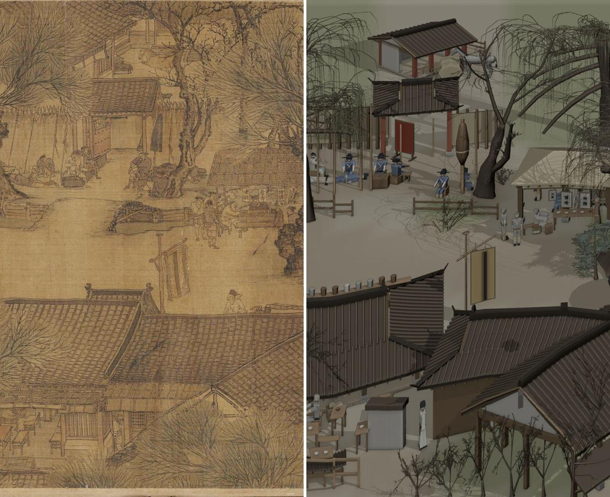
第六轮渲染第五轮渲染第四轮渲染第三轮渲染第二轮渲染第一轮渲染（修正前）有误与缺失（11）
编号
类型
判定
问题
修正
T0181
tree
有误
Willow limbs now thick straight pipes radiating from a trunk at x~1085; painted willow has thin arching whips
Tall posts and pale board panels up to y~530; painting is a low reed palisade, pointed tops y 370-420
Pointed stakes ~60 px tall, top y~370, remove board panels
F0233
furniture
有误
Unchanged: grey closed box with its own roof x 215-370 y 1440-1620; painting has open lattice partition
Thin brown lattice screen ~110x140 px, no roof
P0508
person
有误
Missing; painting shows a large white-robed upper body above the H0105 ridge at (820-900,1050-1130)
Re-add behind ridge, base ~20 px above ridge so torso shows, light robe
P0514
person
有误
Sits on a box; painting slumps at the tree foot, head on knees
pose = sit_ground against T0183 trunk, head down
人群
gate yard x 0-650 y 530-700：画中约 6 人，模型 7 人。Blue-uniformed soldiers with black caps sitting on boxes; one lies flat at x~105-220; P0514 still on a box, not slumped at the trunk
fortune-teller booth x 690-1100 y 670-890：画中约 10 人，模型 7 人。Three pale mannequin-like standing onlookers, seated customer bending to table, two or three behind the table; P0509/P0511 not found
H0105 ridge x 818-898 y 1048-1132：画中约 1 人，模型 0 人。P0508 gone: nothing above the ridge at x 820-900
lower hall x 0-450 y 1380-1620：画中约 2 人，模型 2 人。P0520 seated at (95,1440) and P0516 white-robed in the doorway at (420,1450-1630) at the right places
模型多出的东西
(1060, 1050) Grey mound/rock mass under T0179 at x 1000-1100 y 990-1110, still present
(950, 600) Booth roof is a plain light board slab; painting has a reed-lattice mat awning
(250, 1030) H0110: vertical plank roof x 0-500 y 1000-1250 with horizontal-slat panel; row of standing grey/brown cylinders along its ridge x 10-330
(735, 1250) Dark hexagonal blot on the H0105 roof surface
tile30 · 374.4–390.2 cm 3/5
正确 21 · 有误 8 · 缺失 3 · 忽略 5
The layout still matches the painting. The willows, both sedans with their bearers, the porters, the fences, the ox, the umbrella stall, the pavilion finial and the south-yard tables are on their painted bases. H0110 is much better: its eave now lands at y~1440, matching the painted eave at y~1450, and the bottom-left roofs no longer bury T0195 and H0114. The worst remaining faults are these. H0110 still reads as a near-vertical wall of coarse battens, and a new row of octagonal cylinders stands along its ridge. The sedans still have hip-roof hut tops, and their poles are ~60 px low. The porters still carry pale octagonal loads instead of tall dark bundles.
与上一轮相比：Improved: the H0110 eave now lands at the painted line (~1440 vs 1340), the pale band is gone, and the ridge is straight. The bottom-left neighbour roof was cut back, so H0114 and part of T0195 show. T0193 is now heavy dark limbs. Got worse: a row of octagonal cylinders appeared along the H0110 ridge. Still wrong: the H0110 pitch and battens; sedan tops and pole height; the O0178-O0180 loads; the H0109 roof; X0165 too small; the T0196 hedge; the blue man; P0526's stick; the crate panniers.
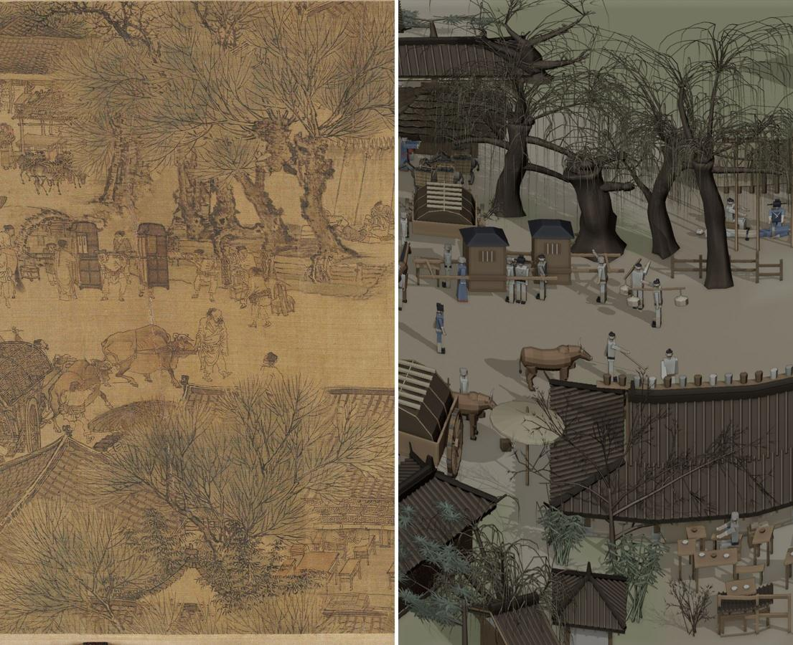
第六轮渲染第五轮渲染第四轮渲染第三轮渲染第二轮渲染第一轮渲染（修正前）有误与缺失（13）
编号
类型
判定
问题
修正
H0110
building
有误
Ridge y~1080 and eave y~1440 now match. Slope is near-vertical with coarse vertical battens, so it reads as a wall; a row of cylinders stands on the ridge.
lower roof pitch (shallower slope, same ridge/eave lines); finer tile courses; remove the cylinder row on the ridge
H0109
building
有误
Only a slatted counter and rail frame at x 900-1100 y 1630-1770; the low shed roof is still missing.
add a 2-bay low lean-to tiled roof over the railing, eave y~1660-1720
X0165
structure
有误
Only a small dark box ~30 px wide at (300,1240); the painting shows a dark tiled roof piece 85 px wide.
low dark tiled roof piece 0.8 m wide, 0.3 m high, spanning x 258-342 at y~1262
S0004
sedan
有误
Position right. Still a dark hip-roof hut top with a plain box; painted is a tall lattice box with a rounded canopy. Poles at y~775, painted at y~710.
roof = low rounded canopy with cornice; lattice front; raise poles 0.4 m
S0003
sedan
有误
Position right; same hip-roof top and plain front; poles ~60 px low.
roof = low rounded canopy; lattice front; raise poles 0.4 m
F0242
furniture
有误
The stool is not visible; P0525's pale octagonal load hangs on the spot (664,842).
check the 0.4 m stool at (664,842); shorten the pole/raise the load clear of it
T0196
tree
有误
Only a small twiggy bush near x 250-290 y 560-620; no low dark hedge row along x 30-300.
upright dark shrub row 0.8 m high along x 30-300, y~610
T0195
tree
有误
Drooping strands are now visible at x 200-500 y 1400-1800, but pale green star sprigs dominate x 0-300; painted is a dense dark willow.
replace the pale star sprigs with dense dark drooping willow strands over x 0-560 y 1380-1800
O0178
prop
缺失
The hooped frame with a round basket is not built; P0524 carries a pale octagonal load.
add a hooped basket frame on the rear of P0524's pole at (790,882)
O0179
prop
缺失
The tall dark wrapped bundle is not built; P0525 carries pale octagonal loads.
tall dark wrapped bundle 0.8 m on the front of the pole
O0180
prop
缺失
Same as O0179, at the rear of the pole.
tall dark wrapped bundle 0.8 m on the rear of the pole
P0526
person
有误
Holds a long stick pointing forward, not the ox's nose rope.
lower the arm; hand to the ox's nose with a rope prop
unknown (blue man, road left)
person
有误
Man in blue standing at x~120 y~985 on road that is empty in the painting.
remove, or move to its painted place
人群
road, sedan group x 180-640 y 600-860：画中约 9 人，模型 9 人。The bearers are on their bases; the poles are ~60 px lower than painted.
road right, porters x 620-800 y 680-910：画中约 2 人，模型 2 人。Both present; the loads are pale octagonal baskets, not tall dark bundles and a hooped frame.
road, ox driver and walker x 540-800 y 850-1120：画中约 2 人，模型 2 人。Both visible; the driver still holds a long stick, not the nose rope.
road left x 0-300 y 820-1150：画中约 2 人，模型 3 人。The man in blue still stands on the empty road at x~120, base y~985; the grey figure by the second ox matches a painted man.
north yard x 900-1100 y 500-680：画中约 3 人，模型 3 人。Standing, seated and reclining figures, close to the painted group.
south yard x 800-1000 y 1380-1600：画中约 2 人，模型 2 人。A seated figure at the table; the hunched pose of P0522 is not readable.
模型多出的东西
(800, 1060) Row of ~14 octagonal brown/grey cylinders along the H0110 ridge, x 430-1100 y 1040-1080; not painted
(120, 930) Standing man in blue on the empty road
(140, 580) Closed slatted barrel-top cart x 50-230 y 510-660; the painting shows an open wicker arch frame
(130, 45) Pale green star-sprig tuft at x 0-250 y 30-70 above the upper-left roof; painted area is willow strands and the bare tree
(380, 1350) The painted big hip roof spans x 0-550 y 1210-1450; the 3D neighbour roof stops at x~280 and leaves bare ground x 280-450
tile31 · 387.3–403.1 cm 3/5
正确 34 · 有误 9 · 缺失 0 · 忽略 9
The layout still matches the painting well: gate hall, shop, shed, pig herd, both umbrella stalls, horses, the five-ox team, the left cart and the foreground hip roof sit at their painted places. This round removed the stray rail fences at the gate hall and shop, freed the donkey A0071, moved the H0116 hip corner about 50 px east and ended its south slope so the railing X0169 is now visible. Worst remaining: V0007 and X0166 are still low dark boxes with white slats instead of tall arched woven canopies; the H0115 thatch became a heavy dark mass that hangs low over the shop front; X0170 is still a flat slab with an end board; F0249 is three tan lumps instead of a basket of spiky goods; a pale grey slab along the left edge and an olive-green flat ground patch under the upper-left pines remain.
与上一轮相比：Improved: rail fences in front of the gate hall and shop removed; A0071 donkey now clear and readable; H0116 corner ~50 px further east and south slope shortened, so railing X0169 is visible. Worse: H0115 thatch now a heavy dark mass hiding the shop front; A0065 neck raised vertical; olive ground patch. Still wrong: V0007 and X0166 boxes, X0170 slab, F0249, O0188 pots, left-edge slab, T0199.
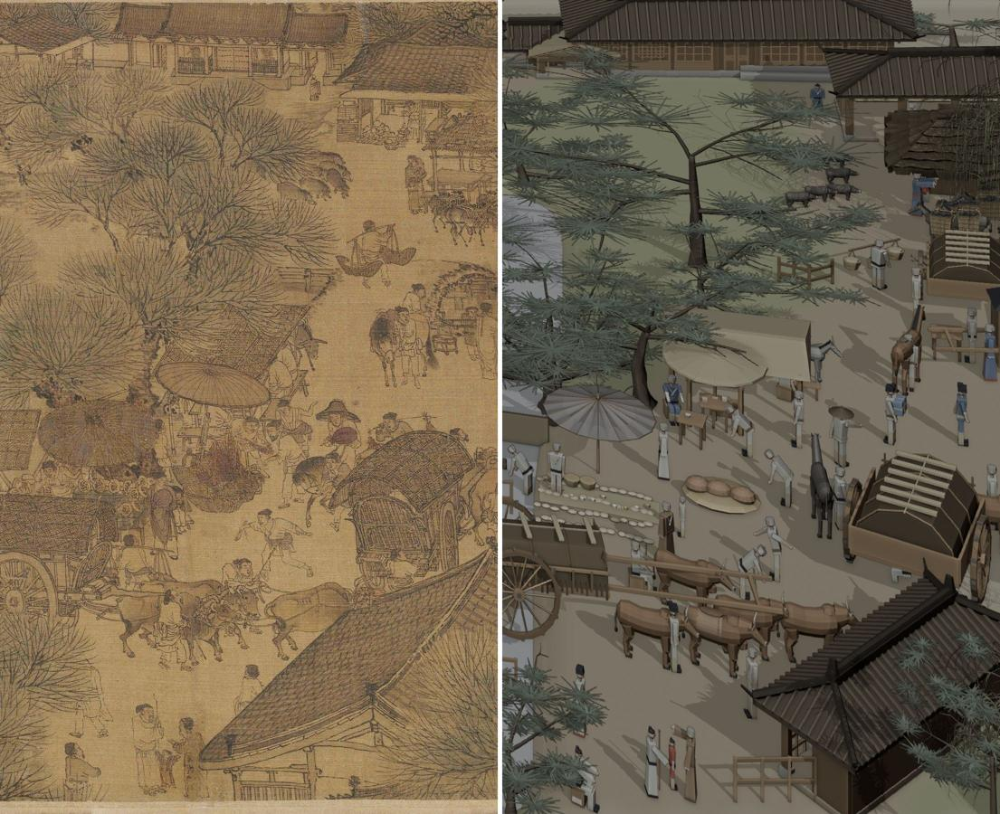
第六轮渲染第五轮渲染第四轮渲染第三轮渲染第二轮渲染第一轮渲染（修正前）有误与缺失（10）
编号
类型
判定
问题
修正
X0166
structure
有误
Built as a dark domed box with white slat ribs x~950-1100 y~500-640, ~60 px north; painted a round arched hoop with dark brushy rim.
Build as an upright round arch ~145 px wide, dark leafy/woven rim, open centre; move base 60 px south to y705; remove slats.
H0115
building
有误
Thatch is now a thick dark slab x~850-1100 y~240-400, ~85 px too far west and ~55 px too low; hides the shed table and shop front.
Thin light thatch on posts, roof edge at y~300, start at x935; keep the table under it visible.
H0116
building
有误
Hip corner now ~(740,1512), painted (825,1531): ~85 px west. Under the eave a closed brown wall with door; painted an open porch with posts.
Move corner hip 85 px east; replace the south wall below x600-800 with open porch posts and railing.
V0007
vehicle
有误
Still a low open box x~780-1100 y~990-1290 with a dark faceted lid and white slats; painted a tall arched woven-mat canopy and woven rear panel.
Horse at x~860-930 y~670-880 has its neck straight up like a giraffe; painted head lowered, rump to viewer.
Lower neck to ~30° below horizontal; turn body so rump faces south-west.
T0199
tree
有误
Shrub at (784,1762) not visible; the H0116 south wall stands there.
Place the shrub south of the porch posts, clear of the wall, beside the railing.
X0170
structure
有误
Still a plain tan flat slab with a vertical end board at x~650-690 y~640-800; painted a sloping woven mat x355-686.
Tilt mat ~25° down toward SE, woven texture, remove end board, extend west to x355.
F0249
furniture
有误
Three tan rounded lumps on a pale disc x~400-550 y~1050-1135; painted a large round basket heaped with reddish-brown spiky goods.
Round woven basket rim ~190 px wide + one reddish-brown spiky heap (#7a4a3a); remove the lumps.
O0188
prop
有误
Discs lie flat in rows on a bench, plus two upright drum-like pots on top x~140-250 y~1010-1060; painted leaning stacks of rosette rounds.
Stack discs in leaning rows (edge-on, rosette faces visible); remove the two drums and the bench.
P0536
person
有误
Woman holds arms forward; carried child P0535 not readable at her shoulder.
pose hold_child with P0535 at her left shoulder.
人群
upper street and shop front, x600-1100 y150-650：画中约 6 人，模型 6 人。Monk, porter with pole and baskets, woman with child (blue/red) present; child not readable at her shoulder.
awning and umbrella stalls, x0-700 y650-1250：画中约 18 人，模型 16 人。Positions match; conical-hat man correct; bending men around F0249 weak because the heap is lumps.
road with horses, cart and oxen, x250-1100 y850-1480：画中约 12 人，模型 12 人。Good match; grooms beside horses and men among oxen in place.
lower left talkers, x140-600 y1460-1780：画中约 6 人，模型 6 人。Elder with staff, red child, brown-robed man, seated man correct.
模型多出的东西
(65, 800) Pale grey flat slab/wall along the left edge x0-130 y420-1800.
(400, 400) Olive-green flat ground patch x~120-700 y~150-650 with a hard west edge; painted plain ochre ground.
(1050, 350) Stringy weeping-willow-like strands x~1000-1100 y~250-450 over the shed; not painted there.
(1085, 700) Dark booth edge at the right border x~1070-1100 y~640-760.
(980, 1720) Pale grey flat slab at lower right x~850-1100 y~1640-1800 beside the H0116 wall.
tile32 · 400.3–416.0 cm 3/5
正确 16 · 有误 10 · 缺失 1 · 忽略 8
The moat-bridge scene still reads as the same place: deck, rail crowds, porters, cart and far-bank road group are where the painting has them, and the A0079 rider group is back. The bridgehead now has ground under the cart wheel and the awning is one panel instead of planks. New regression: the deck is missing over x 0-165, so open water shows between the far-rail strip and the near walkway, and basket F0254 is gone. The front far-bank roofs H0122/H0120 are still one dark vertical-ribbed slab. The cart cover is still a smooth drum, T0207 is still a sparse star-tuft pine, and the stall figures stand on water.
与上一轮相比：Improved: donkey A0079 and its rider are back; there is bridgehead ground under the cart wheel; the awning is one panel instead of nine planks; the near rail has diagonal braces at the left; the deck front edge is straighter. Got worse: the deck is missing over x 0-165 (water gap), and basket F0254 is lost. Still wrong: the H0122/H0120 slab roof, the drum cart cover, the grey umbrella, the sparse T0207, the end-on A0078, the high far rail, and the upright rail leaners.
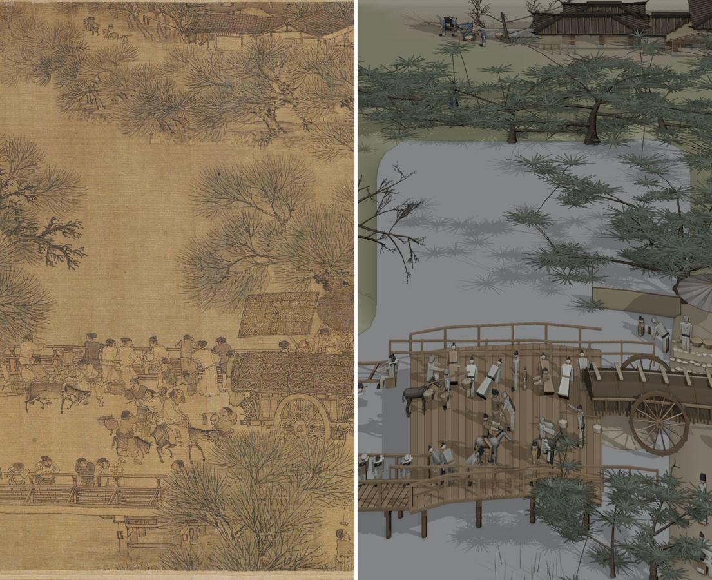
第六轮渲染第五轮渲染第四轮渲染第三轮渲染第二轮渲染第一轮渲染（修正前）有误与缺失（16）
编号
类型
判定
问题
修正
O0190
prop
有误
Ribbed umbrella at x 990-1100, y 855-960, the right place. It is still grey, not warm brown.
Colour = warm brown (painted dark ochre); keep the pole base at (1042,1060).
H0120
building
有误
Unchanged: its main roof is part of the dark vertical-ribbed slab over x 620-1030. Only the far right end x 1030-1100 has tile courses.
Own hip-gable roof over x 890-1075 with warm horizontal tile courses, ridge y~40, eave y~115.
V0008
vehicle
有误
Improved: wheel at x 853-1020 now stands on bridgehead ground. The cover is still a smooth brown drum with transverse slats, and the far wheel shows above it at y~1100-1150.
Woven-mat arched cover with a lattice texture, top at y~1100 so it hides the far wheel; remove the top slats.
X0171
structure
有误
Improved: now one plain beige panel at x 730-1000, y 895-990. It stands almost upright, has no woven grid, and its bottom is 55 px too high.
Tilt it about 45 degrees toward the viewer on one pole; top y~905, bottom y~1045; woven-mat grid texture.
T0207
tree
有误
Unchanged: a tall open pine with star tufts on long bare limbs. The painting shows a dense low mass of drooping sprays.
Crown 2-3x denser with long drooping sprays, shorter trunk, spread left to x~490, cover y 1290-1800.
H0122
building
有误
Unchanged: the eave height is right (y~110), but the roof is the dark vertical-ribbed slab from x~550, with no tile courses and no ridge roll.
Own hip roof over x 560-800 with warm horizontal tile courses and a ridge roll; separate it from H0120.
A0078
animal
有误
Unchanged: a dark narrow donkey at x 578-622, y 1338-1425, seen end-on and hidden by T0207. The painting shows a profile walking right.
Rotate so it faces +x (right) in profile, length ~200 px; keep the base at (580,1448).
X0174
structure
有误
The top bar is at y~1003-1030 over x 170-760, about 50 px above the painted level bar at y~1075. A second, lower rail runs behind the cart.
One level top bar at y~1070 over x 0-720 with slats and knob finials; remove the duplicate rail at x 560-1000.
X0175
structure
有误
Regression: the deck now starts at x~165. Over x 0-165 there is open water between a far-rail strip (y~1130) and the near walkway. The front edge is straighter (y~1580).
Extend the deck to x 0 over y 1070-1590 so it joins the tile33 west strip without a gap.
X0176
structure
有误
Improved: diagonal braces now show at x 0-160. The rail kinks and rises at x~165, the top bar is at y~1445, not 1470, and there are no braces over x 165-515.
One straight level rail over x 0-515: top bar y 1470, lower bars y 1505 and 1560, diagonal braces between all posts.
F0254
furniture
缺失
Regression: no basket at (50,1228). The deck is missing there, so only water shows.
After extending the deck to x 0, place the round woven basket on the deck at base (50,1228).
P0566
person
有误
The bent stall figure at about (940,1080) stands on water; there is no bridgehead ground there.
Extend the bridgehead ground west to x~860 over y 1040-1110, or lift the figure onto the ground.
P0567
person
有误
Stands on water at about (880,1090), in front of the awning.
Same ground patch as P0566; keep it behind the cart cover.
P0580
person
有误
A rigid figure tilted about 40 degrees at (405,1210), like a falling plank, not leaning on the rail.
pose = lean_rail: upright legs, torso bent over the far rail top bar at y~1075.
P0594
person
有误
Leans on the near rail in the painting; in 3D it still stands upright.
pose = lean_rail, torso over the top bar at y~1470.
P0597
person
有误
Leans far over the near rail in the painting; in 3D it stands upright.
pose = lean_rail, arms folded on the top bar.
人群
far rail crowd x 0-760 y 1035-1270：画中约 20 人，模型 14 人。Figures stand scattered on the deck, stiff and upright, 30-80 px in front of the rail. Few lean on the rail or face the river. P0595/P0596 sit on a box on the narrow strip over water.
mid deck x 250-750 y 1200-1450：画中约 8 人，模型 8 人。The pole porter and the A0079 rider group are present. P0580 is a rigid white figure tilted 40 degrees like a falling plank.
near rail x 0-560 y 1410-1505：画中约 8 人，模型 7 人。Two figures at x~230-300 now bend over the rail. The others stand upright with flat hats behind the rail at x 0-170.
far bank road x 250-420 y 50-145：画中约 6 人，模型 6 人。The sedan porters, the rider and the pole carrier are present. The figures are slightly large and bright blue.
bridgehead stall/cart x 850-1100 y 880-1780：画中约 4 人，模型 4 人。Two stall figures stand on the water plane in front of the awning. One stands on top of the cup counter. The bottom-right figures are fine.
模型多出的东西
(1050, 1040) A counter with many small white cups at x 980-1100, y 985-1100, with a figure standing on it. Not in the painting.
(30, 700) A green land strip along the left edge, x 0-60, y 430-1000, framing a rectangular water pool. The painting has open water there.
(80, 1270) Open water at x 0-165, y 1150-1400, where the painting has bridge deck.
(890, 260) A thin straight vertical pole at x~890 from y~60 to 460, through the far-bank pines. Not painted.
(780, 1080) A second wooden rail at x 560-1000, y 1055-1110, running behind the cart. The painting has one far rail ending at x~720.
tile33 · 413.2–429.0 cm 3/5
正确 8 · 有误 7 · 缺失 1 · 忽略 1
Clear improvement: the raised stilted decks are gone and the flat trestle bridge X0179 now spans the lower right (x ~470-1100) with a plank rail, a braced side face and post legs, so the composition reads much more like the painting. The worst remaining errors: grey water now covers the painted road east of a curved shoreline from (860,1000) to (470,1500), so the right end of the cart, X0177, the draught animal and P0599 stand in water (P0599 shows only a head at ~(907,1205)); water still covers painted land at x 960-1100, y 440-1030; the white roofed block at x 90-315, y 900-1065 still stands where H0125's open frame should be. The bridge rail sits ~60 px too far north and the rail men stand upright. T0217 and T0218 still carry pine tufts, and the cart is still a slatted box, not a high arched mat cover.
与上一轮相比：Improved: both stilted decks removed; X0179 flat bridge now built at nearly the painted place; P0602 no longer hidden; rider seated on the horse; X0177 at ground level. Worse: grey water now covers the road east of x ~600-860, so cart front, X0177 and P0599 stand in water. Still wrong: bridge ~60 px north, water over the right land, white block instead of H0125, pine tufts on T0217/T0218, boxy cart cover, upright rail men, thin-legged horse.
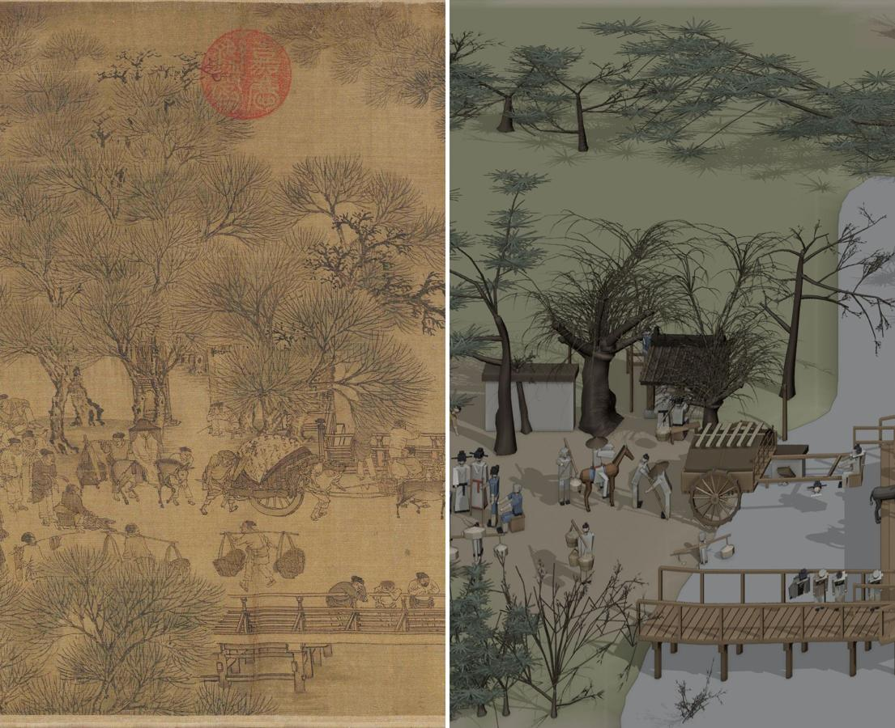
第六轮渲染第五轮渲染第四轮渲染第三轮渲染第二轮渲染第一轮渲染（修正前）有误与缺失（11）
编号
类型
判定
问题
修正
T0212
tree
有误
Straight vertical trunk at x ~830-850, sparse thin limbs; right half of the crown hangs over false water x >960.
Lean trunk ~15° right; 3x twig density with dark clumped tips at y 500-750; make x 960-1100, y 440-1030 land.
X0177
structure
有误
Low railing with posts now at ground level, but only x ~770-970, y 1125-1180, and it stands in grey water.
Extend horizontal-board railing with capped posts to x 688-1100, base y ~1182, on road ground (remove water there).
X0179
structure
有误
Now built: flat bridge x ~470-1100, rail top y ~1405, side face y 1490-1595, legs to ~1680. Painted rail top y ~1469, about 60 px lower.
Move the bridge rail and deck ~60 px south (rail y ~1469, deck bottom ~1590); add X-braced trestles below to y 1720.
V0009
vehicle
有误
Right place, large spoked wheel; but the body is an open box with slat ribs on top, not a high arched woven mat cover; its front half stands in water.
Build a high arched mat cover rising to y ~1075 over the body; put road ground under x 600-860.
H0125
building
缺失
Open post-and-lintel frame at (374,1012) still absent; a solid white block with dark roof at x 90-315, y 900-1065 stands beside it.
Build an open post-and-lintel frame ~3 m high at (374,1012), no walls; delete the white block.
A0082
animal
有误
Right place, faces right, rider now seated; but body short (~120 px vs ~200 painted), stilt-thin long legs, near-vertical neck.
Body 40% longer, legs 25% shorter and thicker, neck at ~45° with head lowered.
T0217
tree
有误
Two forked trunks with green pine-needle tufts at x 120-350, y 70-375; painting: crooked bare tree with dark twig clusters.
Use the bare_tree generator: no needle tufts, short crooked branches, dark twig clusters y 110-370.
T0218
tree
有误
Sparse tall bare sticks x ~160-480, plus pine-tufted trees at x 0-140; painting: one low, wide, dense twig crown x 0-565, top y ~1330.
Short trunk, 3x branch count, crown 560 px wide with top y ~1330; remove the pine tufts at x 0-140.
P0599
person
有误
Only the head and winged hat show at ~(907,1205); body hidden below the water/ground surface.
Put road ground there; stand on it, back to viewer, bent over X0177.
P0600
person
有误
Lean-rail figure stands upright facing the viewer behind the rail.
Lean pose, torso forward over the rail, head on folded arms.
P0606
person
有误
Distant figure stands raised at ~(487,810-890), against the shed's gable end, about 35 px above its base.
Lower to ground base (490,925), behind the post row.
人群
left road x 0-500 y 950-1300 (crowd around horse)：画中约 16 人，模型 11 人。Fewer figures; groom, rider and rear servant present; several stand in front of the extra white block.
cart x 480-870 y 1100-1290：画中约 3 人，模型 3 人。Carters bend correctly on road; front carter near the water edge.
middle road x 0-700 y 1280-1460 (pole porters)：画中约 3 人，模型 3 人。P0609, P0614 fine with pole and buckets; P0602 visible now but feet ~55 px north (y ~1400) on the moved rail line.
bridge railing x 780-1100 y 1400-1600：画中约 3 人，模型 4 人。Upright figures facing the viewer behind the rail at y ~1400-1500; painting: three men bent over the rail, heads on arms.
far railing x 860-1100 y 1050-1200：画中约 3 人，模型 2 人。A seated figure on a box at ~(995,1150) and a head only at ~(907,1205), both on grey water.
模型多出的东西
(880, 1250) Grey water over the painted road x ~600-1100, y 1000-1460 (curved shoreline from (860,1000) to (470,1500)).
(1030, 735) Water over painted land x 960-1100, y 440-1030 (green plateau with a rounded edge ends at x ~960).
(1080, 1250) Tall light plank wall / rail post column at the right edge x 1060-1100, y 1000-1500; painting has open road and the draught animal.
(200, 980) White-walled block with dark roof x 90-315, y 900-1065; painting has open misty ground and the H0125 frame.
(800, 1720) Grey water over the painted near bank x 470-1100, y 1620-1800.
tile34 · 426.1–441.9 cm 3/5
正确 9 · 有误 8 · 缺失 2 · 忽略 3
The gate now reads better than in round 7. The bastion has a battered face: its top edge runs diagonally from about (300,650) to (650,380), as in the painting, and the passage has a slanted dark slot with stepped inner reveals. G0022 is now a framed board, and the rider sits on the horse. Remaining problems: the passage is still narrow (dark slot x 455-600, the painting's opening is x 460-750); the far roof hip rises to a sharp point at (720,50), about 90 px above the painted corner (740,140), with no eave sweep, no bracket row and no chiwen; a blank tan wall stands at x 0-130, y 290-500 where the painting has a doorway. The foreground mounds are pale grey faceted domes, not earthen banks. T0223 is still a pine and T0222 is still 110 px right.
与上一轮相比：Improved: the bastion now has battered faces and the painted diagonal top edge; the passage is slanted with reveals; G0022 has a frame; the rider sits on the horse; the bottom pines (T0220, T0224, T0226) are much denser. Worse: the bank mounds are pale stone-like domes; the far roof hip is a sharp point about 90 px too high; P0618 is nearly horizontal. Still wrong: the passage is too narrow, there is no chiwen or bracket row, T0223 is a pine, T0222 is 110 px right, T0227 is straight, and the white box remains.
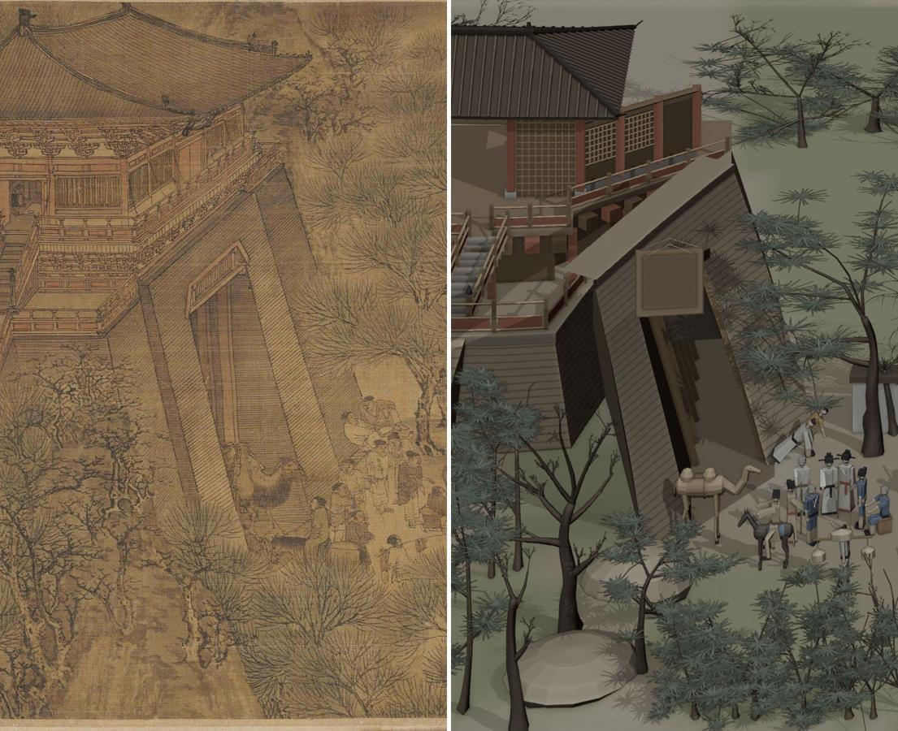
第六轮渲染第五轮渲染第四轮渲染第三轮渲染第二轮渲染第一轮渲染（修正前）有误与缺失（12）
编号
类型
判定
问题
修正
T0222
tree
有误
The big curved trunk still rises at x≈1030, y 700-1080, about 110 px right of its base (920,1110).
Move the trunk base 110 px left to (920,1110); gnarled trunk leaning right; denser crown y 280-800.
T0223
tree
有误
Still a forked pine with star tufts at (810,350); the painting shows a leafy tree with dotted ink foliage.
Build as leafy_tree: dark olive clumped crown x 690-930, y 70-360; not the pine generator.
A0083
animal
有误
Dark horse at x 700-860, y 1260-1400, with the rider now seated; legs still long and stiff, the body sits too high.
Make the legs about 20% shorter and the body stockier; put the head lower and forward at (690,1310).
O0199
prop
缺失
No ridge beasts. The far roof hip ends in a sharp point at (720,50), about 90 px above the painted corner (740,140), with no up-turned eave.
Lower the far hip corner to (740,140) with an up-turned eave sweep; add small ridge beasts at (685,145).
X0181
structure
有误
The passage is now slanted with stepped reveals, but the dark opening is only x 455-600; the painted opening is x 460-750 with a door frame.
Widen the passage to x 460-750 at the base and x 470-600 at the top; add a timber door frame and leaves inside.
G0022
sign
有误
Framed board hangs on strings at x 440-600, y 570-750, with a plain panel; the painting has a hatched panel fixed and tilted over the passage head.
Remove the strings; fix the board to the wall over the passage, tilted forward 20°; dark vertical hatching on the panel.
X0182
structure
有误
The battered faces and diagonal top edge now match. There is still no bracket row under the eave, and a blank tan wall stands at x 0-130, y 290-500.
Replace the blank plane with the hall front (doorway at x 20-110) and add a dougong bracket row at y 290-380.
X0184
structure
有误
Bank built as two pale grey faceted domes at (380,1600) and (450,1360); they read as stones, and the painted bank is a brown earth slope.
Merge into one low earth slope x 150-640, y 1340-1765, rising toward the platform; use ground colour; smooth the facets.
T0227
tree
有误
Straight thick forked trunk at (290,1560) with few twigs; thin extra trunks remain at x 0-250.
Gnarled, twisting trunk at (250,1560); dense twig clusters x 60-440, y 840-1300; remove the extra saplings.
O0202
prop
缺失
The main ridge at y≈60 has only a small block at x≈190; there is no chiwen at (67,92).
Add a tall chiwen, about 70 px high, at the ridge end x≈67.
P0618
person
有误
Bent so far that the body is nearly horizontal at (800-870,1030-1080) and reads as lying down.
Bend the torso about 45°, not 85°; face right, arms stretched toward (940,1100).
P0622
person
有误
The seated figure in the hall doorway is hidden: there is no doorway, only a blank wall.
Open the doorway at x 20-60, y 445-512 and show the seated figure.
人群
group right of the gate, x 760-1100, y 1000-1440：画中约 12 人，模型 13 人。Readable: seated man on the stool, porter with two buckets, standing officials, rider on the horse. One bent man at (840,1050) leans almost horizontally.
hall doorway, x 0-100, y 440-520：画中约 1 人，模型 0 人。P0622 not visible: a blank tan wall covers the doorway.
模型多出的东西
(1045, 970) White hut-like box x 990-1100, y 880-1060 behind the crowd (still there).
(130, 1300) Thin extra trunks x 0-250, y 1050-1700 around T0227.
(65, 400) Blank tan wall plane x 0-130, y 290-500 instead of the hall doorway.
tile35 · 439.0–454.8 cm 3/5
正确 22 · 有误 14 · 缺失 1 · 忽略 5
The gate complex still reads as the painted one. The balcony, upper stair (now at x 878-990, close to the painted x 850-987), terrace railings at y~785, long railed stair and flanking ramps are all in place, and T0235 now stands at (580,760). The worst problems are the same as before. The tower roof is a straight hip with no concave sweep, no bracket tier and a closed central door. The long stair is ~40% too narrow at the top. The gatehouse roof and the back house roofs read as vertical slatted walls. The office roof extends ~200 px too far east and buries T0237. The camels are stilt-legged segmented blocks, and the bales are pale slabs.
与上一轮相比：Improved: H0128/H0129 roofs lowered to near the painted lines; T0235 trunk now present; duplicate awning panel removed; upper stair X0186 now aligned; calf is a quadruped; vendor/drinker pair readable. Worse: nothing major. Still wrong: straight tower roof, no brackets, closed door; long stair narrow at top; slatted gatehouse and house roofs; office roof hides T0237; stilt camels, slab bales, log buffalo; grey box in office.
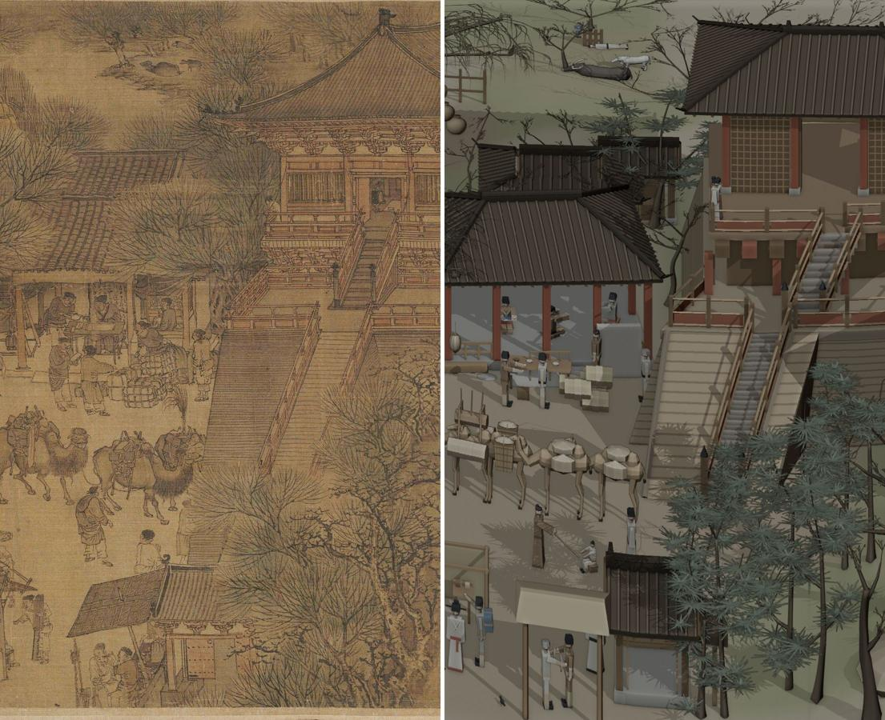
第六轮渲染第五轮渲染第四轮渲染第三轮渲染第二轮渲染第一轮渲染（修正前）有误与缺失（16）
编号
类型
判定
问题
修正
H0126
building
有误
Body, lattice, balcony right. Roof still a straight hip (eave y~280, ridge y~60), no concave sweep or upturned corners, no bracket tier; central bay a closed brown panel
Concave roof curve with upturned corners and chiwen; bracket tier y 300-390 under the eave; open the central door (dark opening x 890-960)
X0188
structure
有误
Left rail (768,775)->(665,1187) matches. Right rail top at x~862 vs painted ~931; flight ~95 px wide at top vs ~137
Move the right balustrade top ~65 px east (to x~930), keep bottom at x~780
H0127
building
有误
Right place (x 402-550, y 1370-1780), but the roof still reads as a vertical dark slatted wall; no brackets, no curled corner at (410,1390)
Roof pitch ~35° with eaves projecting north; bracket sets under the eave; upturned left corner
A0085
animal
有误
Now a pale quadruped (better), but x 418-512, ~1.8x the painted 53 px length; reads as a horse
Scale ~55%; shorter legs, calf proportions
H0128
building
有误
Roof block x 384-590, y 340-470 vs painted x 420-545, y 365-445; steep vertical slats, too wide
Trim to x 420-545; pitch ~30° so tile rows read from above; height ~60%
A0086
animal
有误
Rear camel: segmented block body on stilt legs, octagonal sack pack; no mane
Legs 25% shorter, two clear humps, shaggy neck mane, lowered head with head-stall
T0237
tree
缺失
Round crown at x 280-560, y 440-700 is covered by the office roof, which runs east to x~546
Cut the office roof back to x~330 (painted gable end); show the crown above the inner bay
F0257
furniture
有误
About 6 pale flat slabs at x 285-410, y 900-1030; painted are ~9 rounded corded bales stacked to y~860
Rounded wrapped bales with dark cord crosses, stacked 3 high at x 300-460
A0087
animal
有误
Lying buffalo still a long dark cylinder x 350-460; reads as a log
Body 80% length, rounder; raised head with horns at left; folded legs
Shared camel fix; pack as lower wrapped bundles on a frame
X0191
structure
有误
Duplicate panel gone. Cream mat x 177-412, y 1450-1580 faces the viewer; painted mat is a dark slanted plane falling to the left (169,1600)
Tilt ~25° down to the west on one slanted pole; dark reed-mat colour
H0129
building
有误
Roof x 84-396, y 340-475 now near the painted y 375-500, but too steep: vertical slats, no tile rows seen from above
Pitch ~30°; ridge at y~380; west end at x~150
A0089
animal
有误
Stilt-leg segmented body with basket pack; head low, painted head raised with open mouth
Shared camel fix; head raised, mouth open
K0033
stall
有误
Pole frame with a hanging board at x 0-110, top y~1310; painted is a small awning stall with a table, top ~1450
Frame ~20% lower; small table under it; remove the board
A0091
animal
有误
Stilt-leg camel at the left edge; pack is a horizontal log on poles
Shared camel fix; tall pack frame with wrapped bundles
P0639
person
有误
Carries a blue box on his back instead of a tall upright bundle of slats
Replace the load with a tall stick bundle under the right arm
人群
tax office x 0-560 y 700-1020：画中约 7 人，模型 7 人。Clerks, official and porters placed correctly; stiff block figures
camel train x 0-560 y 1020-1430：画中约 3 人，模型 3 人。Drover P0636 holds rope/stick; child P0630 sits on a box at (360,1410); P0625 stands beside A0086
awning/booth x 0-560 y 1430-1800：画中约 6 人，模型 5 人。Vendor P0634 and drinking man P0632 now face each other under the awning; P0629 behind; two figures at the left edge
tower/field x 300-1100 y 0-560：画中约 3 人，模型 3 人。P0623 at the left end of the balcony; lying child and tiny field figure present
模型多出的东西
(440, 860) Large grey box x 378-503, y 806-950 inside the office front, right of the bales
(440, 600) Office roof extends east to x~546, down to y~700, covering T0237
(70, 215) Lattice fence posts x 30-107, y 170-250 in the field
(10, 270) Stacked jars at the left edge of the field, x 0-15, y 220-320
tile36 · 451.9–467.7 cm 3/5
正确 31 · 有误 12 · 缺失 2 · 忽略 6
The middle band still reads as the same scene: cask shed H0132, willow T0243, tax office H0130, sack cart V0011 and the animal team are about right, and the back yard (hut H0131 width, jar pyramid O0213, second stack O0211, upright rack X0196) is now correct. The covered carts V0010/V0012 are now dark ribbed mat covers, and stele G0024 and shafts O0228 are visible again. Still wrong: the wine house upper floor sits ~150-200 px low (railing y 600-650 vs painted ~400) so the drinker table and upstairs people are absent; the huanmen is still a bead lattice; G0023 is still replaced by a red lantern; the battened box x 40-260 y 1272-1400 above the south roof remains.
Still green pole lattice with white/red gem beads and two thin spires across the upper storey; no flower towers.
2 flower towers at x 90-170 and 230-290, top y 200; flowers not beads; end posts at y 725
O0224
prop
缺失
Swirled festoon knot at the lower scaffold centre still absent.
add swirled festoon knot ~68x90 px at (164,580) on X0197
G0023
sign
缺失
No 香 standing board at (144,850); big red hanging lantern x 5-69, y 775-880 still there.
framed standing board ~64x118 px with 香, base (144,902); remove lantern
G0024
sign
有误
Now visible as dark flat-topped slab x 100-140, y 1308-1392, against the battened box; no pointed top, 50 px high.
pointed top; base (116,1442); remove battened box behind
P0651
person
有误
Seated drinker not visible at (522,420); no floor at that height.
seat at F0269 on raised balcony floor y ~400
P0654
person
有误
Not visible on the upper floor.
place on wine-house upper floor, base (440,375)
P0662
person
有误
Not visible on the upper floor.
place on upper floor, base (128,395)
P0649
person
有误
Bending cooper not visible; holds straight planks, not hoops.
place bent over casks at (635,800) holding curved O0216
P0648
person
有误
Man sitting on V0010 cover not readable at (700,1382).
seat on top of V0010 cover after lowering it
人群
north street and cask yard x 0-1100 y 700-1270：画中约 22 人，模型 17 人。Street figures roughly placed, blocky grey. Coopers P0649/P0653 barely visible behind casks/post; no one bending hoops.
wine-house upper floor x 100-560 y 280-420：画中约 4 人，模型 0 人。No upstairs figures visible; floor too low and the bead lattice covers the front.
near street above foreground roof x 0-1000 y 1170-1440：画中约 8 人，模型 7 人。Rider P0657 on horse, porters and hatted man at V0010 present; man seated on V0010 not readable.
under the foreground eave x 880-1100 y 1450-1680：画中约 2 人，模型 2 人。Count matches; white official with red sash more formal than painted.
模型多出的东西
(150, 1335) Tall vertical battened box/wall x 40-260, y 1272-1400 above the south roofline (still there)
(947, 1445) Large wooden frame with a board, x 884-1011, y 1346-1540 (still there)
(935, 215) Wooden fence/railing x 860-1010, y 170-260 beside the jar stacks (still there)
(37, 828) Large red hanging lantern x 5-69, y 775-880 where the 香 board and vase are painted
(948, 912) Brown log 122x25 px at x 887-1009 in front of the tax office
(700, 1500) Vertical battened wall x 650-750, y 1450-1550 on H0133
tile37 · 464.8–480.6 cm 3/5
正确 17 · 有误 28 · 缺失 3 · 忽略 10
Layout matches: wine-house hall, gate canopy, crowd, two sedans, tripod frames and the south roof row sit at the painted places, and the five gate-centre lanterns are back under the eave at y630-760. The 彩楼欢门 is still a braced green pole grid with 6 evenly spaced (135 px) ringed spires, no tiers and no red flower tower; the hall eave is still ~75 px low with a plain upper storey. The south row (H0139/H0138/H0135) is still free-standing plank walls instead of tiled roofs, the steep extra roof over the foreground stall, the plank block in the road and the horse in the crowd remain. Sedans are grey boxes; O0226 lantern has disappeared.
与上一轮相比：Improved: five gate-centre lanterns re-hung under the eave at painted height; O0241 now right size; tripod racks are A-frames with crossbars; a spire now stands at the right edge (O0223), no extra spire (6 evenly spaced). Worse: O0226 pale lantern gone. Still wrong: gate grid without tiers/flower tower, spires off their x, hall eave 75 px low, south-row plank walls and road block, horse, extra left roof, grey-box sedans, sparse trees, closed baskets, ball-shaped lantern boxes.
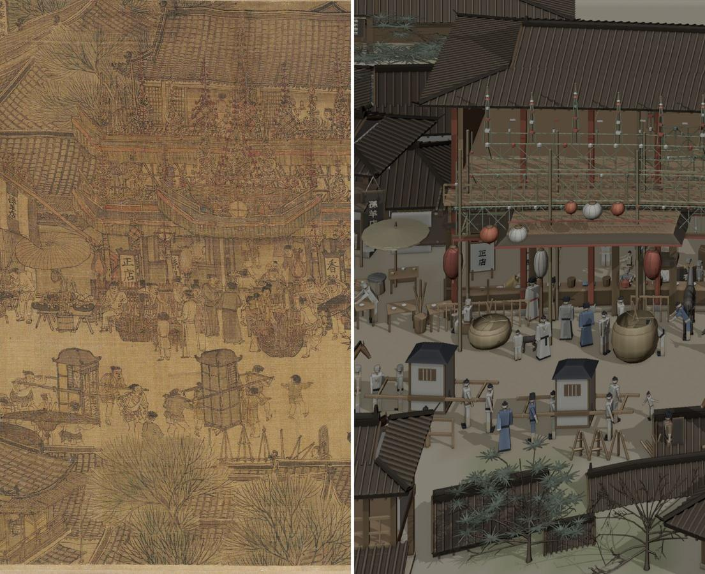
第六轮渲染第五轮渲染第四轮渲染第三轮渲染第二轮渲染第一轮渲染（修正前）有误与缺失（33）
编号
类型
判定
问题
修正
H0135
building
有误
Free-standing dark plank wall x734-1100 y1450-1610 plus wall block x940-1100 y1280-1450 in the road; painted tiled roof, ridge y1440.
Replace walls by low house: tiled roof slope ridge y1440 to eave y1600; delete the road block.
O0223
prop
有误
Spire now present at x~1088 (+18 px), top y~290; uniform ringed lattice, no red flower clusters or bud.
Base x1070; red flower clusters along shaft, red bud finial.
H0136
building
有误
Tiled roof slope x965-1100 y~1540-1700, ~90 px south of painted y1460-1600.
Move 90 px north; eave y1600.
O0226
prop
缺失
Pale lattice ball under the right eave (x960-1015 y705-770) no longer visible; only the canopy end there.
Re-add pale ribbed ball 55 px, hung under eave at (988,738), in front of canopy.
O0227
prop
有误
Spire at x~958, 24 px left; uniform ringed lattice, no flower wrapping or bud.
Move to x982, base y420, height 160 px, red flower wrapping, red bud finial.
X0199
structure
有误
Plain wooden rail frame x870-990 y925-990, right place; not red close-set slats.
Red close-set vertical slats, 120 px wide, on line y940.
O0230
prop
有误
Red ovoid x908-962 y775-875, right place and colour; painted vase with narrow neck and wide belly.
Vase profile: narrow neck top third, wide lower belly.
T0245
tree
有误
Bare tree x700-1100 y1480-1800, right place, few thick branches; painting is a dense mesh of fine twigs.
Hidden: extra steep roof x0-250 y1290-1450 covers its place.
Flat ribbed umbrella 320 px wide at y1283-1345; remove the covering roof.
F0278
furniture
缺失
Not visible; site covered by the extra steep roof.
Inverted-cone basket on a pole stand at (144,1398); clear the covering roof.
P0661
person
有误
Bent man at (1048,1062) hidden by the extra horse.
Remove the horse; show the work_bent figure.
P0682
person
有误
Front bearer upright; painted bent far forward under the pole.
Lean torso forward ~30 deg.
人群
wine-house front street x 0-1100 y 760-1130：画中约 24 人，模型 19 人。Figures stand clear of lanterns now. Horse x1030-1100 y880-1040 still replaces bent men P0659/P0661; P0665 bends at the basket. Upper-floor P0676 not visible.
road x 0-1000 y 1140-1420 (sedans and bearers)：画中约 12 人，模型 11 人。Bearers stand upright, arms down beside poles; no forward lean (P0682). P0666 runs with arms spread, ok. Passenger P0690 not visible.
foreground stall x 0-320 y 1250-1400：画中约 1 人，模型 0 人。P0691 hidden under the extra steep roof.
模型多出的东西
(1060, 960) Large dark horse x1030-1100 y880-1040 at the right of the crowd; painting has bent men there.
(125, 1370) Large steep tiled roof x0-250 y1290-1450 at the left edge, covering O0249/F0278/P0691.
(20, 1085) Brown horse head at the left edge x0-50 y1060-1110 in the road.
(70, 890) Dark drum/pot on a stand x40-100 y850-960 under the umbrella; not in the painting.
(1020, 1365) Plank wall block x940-1100 y1280-1450 standing in the road north of H0135.
tile38 · 477.7–493.5 cm 3/5
正确 28 · 有误 11 · 缺失 2 · 忽略 10
The north half reads as the same scene: mule team and box cart (now correctly placed), four-donkey line, awning diners, storyteller ring before 孫羊店 and the rider. H0145 is lowered and H0144's blocking slab is gone, so the top-right shop and the H0142 upper eave line now match. Worst remaining: H0143 has a flat board lower canopy and a plank box where its big upper hip roof should be; H0142's level ridge hides the K0035 umbrellas and its upper floor is still closed; the griddle stalls remain square tables with bowls; A0101 is a full oversized horse.
与上一轮相比：Improved: V0013 cart moved onto its painted spot and the H0143 west roof edge pulled back, freeing P0718/P0723; H0144 slab removed so counter and P0699 show; H0145 lowered below H0142's eave; K0037 umbrella resized; O0251 meat and G0028 board now visible. Worse: H0143 upper roof now a plank box; a stray vertical pole at x~467 y~1130. Still wrong: H0143 flat lower canopy, H0142 level ridge hiding K0035 and closed upper floor, griddle stalls, T0248, A0101, X0206, G0034, F0283.
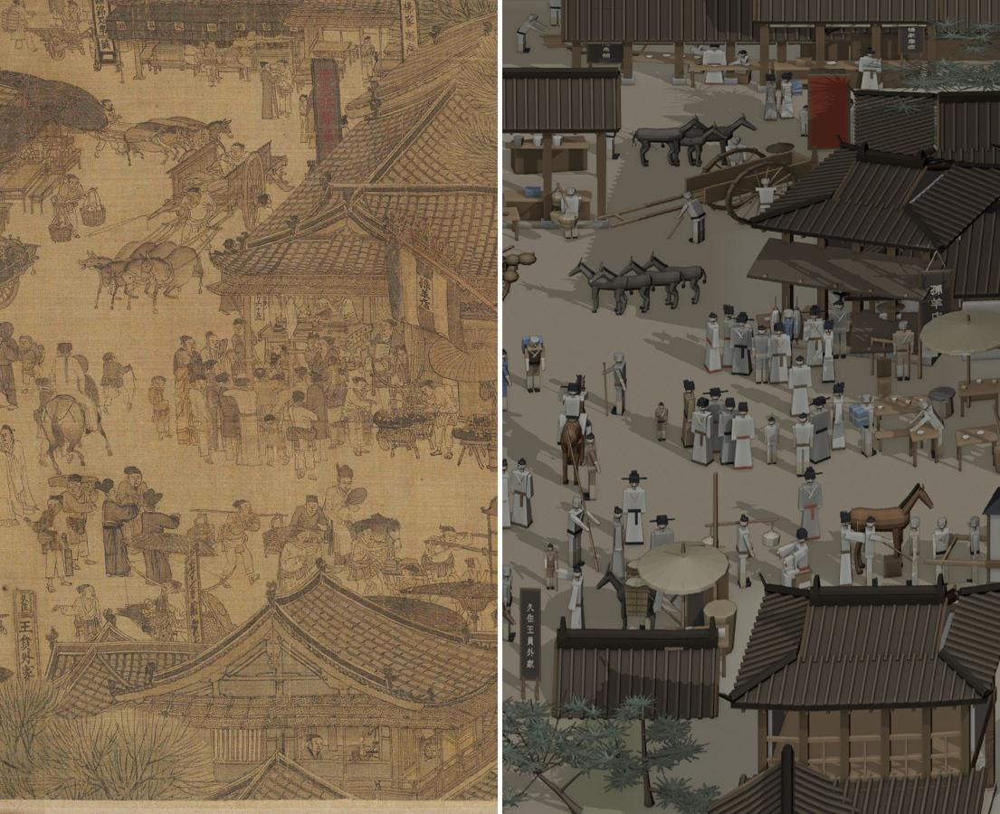
第六轮渲染第五轮渲染第四轮渲染第三轮渲染第二轮渲染第一轮渲染（修正前）有误与缺失（16）
编号
类型
判定
问题
修正
X0206
structure
有误
Still a white-walled gabled hut corner x~1065-1100 y~1080-1300, not a thin capped post.
Replace hut with post ~15 px wide, small roof cap and cross-bars, base 1080,1294.
K0034
stall
有误
Light ribbed umbrella flat at y~640-800, ~70 px north of painted tilted canopy y715-1035; stall is square tables with bowls and a grey drum.
Move canopy 70 px south, tilt ~30° toward viewer; stall = dark oval cake tray on legged stand.
T0248
tree
有误
Pine sprays still x~840-1100 y~30-210 over the H0144 shop front and jar; painted tree only y0-60 behind.
Move tree ~130 px north behind H0144, crown below y~60.
K0035
stall
缺失
No umbrellas visible at x805-1100 y1280-1400; H0142's level ridge y~1300 covers them.
Lower H0142 east roof to painted line (~y1400 at x1000) so two flat umbrellas show; raise umbrellas above roof.
K0036
stall
有误
Still square tables with bowls x~825-960 y~880-1000, not a dark oval griddle tray of cakes.
Dark oval tray ~130x50 px with round cakes on a 4-leg stand.
F0280
furniture
有误
Jar at 864,131 not readable; covered by T0248 needle sprays.
Shows once T0248 moved north; jar 34x44 px.
O0250
prop
有误
No tiered box stack readable at 863,1269; only figure legs; a plain brown box sits ~200 px west at x~640-684.
Place 3-tier steamer stack 36x37 px on a stand at 863,1269.
H0142
building
有误
Upper eave now right (y~1556) but ridge is level at y~1300 across x~690-1050, hiding K0035; west end x~480 vs painted ~580; straight hip, not upswept xieshan.
Lower east half of roof ~100 px; shorten west end ~100 px; roof.type = xieshan with upswept corners.
A0101
animal
有误
Full brown horse x~770-955 y~1070-1290, head at ~940,1110; painted only head/neck at ~860,1170.
Scale 30% smaller, move ~80 px west and 60 px south; body hidden behind crowd.
F0282
furniture
有误
Upper-floor bays show solid light walls with window crosses; table and seated P0710 not visible.
Open the bays x560-1000 y1570-1700 as a room; place table and P0710 visible.
H0143
building
有误
Lower tier still a flat studded board canopy y~550-665; upper roof replaced by a plank-walled box x~770-1100 y~200-350 instead of the big tiled hip rising to y~130. West edge now correct.
Lower tier = tiled pent roof with upturned corners; build upper hip roof up to ridge y~130 and remove the plank box.
F0283
furniture
有误
Inclined brown panel x~770-915 y~690-790, about 2x painted size, no dots.
Shrink to 70x60 px, base 795,770; add dotted texture.
G0034
sign
缺失
Umbrella pole of K0037 carries no double-framed board.
Mount vertical board 37x220 px on the pole, x410-447 y1205-1425.
P0710
person
有误
Seated scholar at upper-floor window not visible.
Open bays and seat him at the window x668-717 y1620-1681.
P0728
person
有误
Shoulder-pole loads are a white cylinder and cone, not a square lattice box.
Front load = square lattice box ~40x45 px.
P0699
person
有误
Doorway man visible but partly crossed by T0248 sprays.
Shows fully once T0248 moved north.
人群
storyteller ring x 380-1000 y 650-1050：画中约 30 人，模型 28 人。Well placed; P0694 bent over stall. Robes mostly white/grey where many painted robes are dark.
road and cart x 0-700 y 0-520：画中约 16 人，模型 15 人。Cart crew P0718/P0723/P0729/P0737 now visible; basket porter stands under the extra shed roof.
west street x 0-380 y 650-1100：画中约 12 人，模型 11 人。Good; rider seated on A0110, whip walker beside.
south street x 0-1100 y 1050-1300：画中约 22 人，模型 21 人。Visible; P0728 loads are white cylinders, not a lattice box; figures by A0101 crowd around an oversized horse.
H0142 upper floor x 500-1000 y 1550-1700：画中约 2 人，模型 0 人。P0710 and P0695 not visible; bays are closed walls with window crosses.
模型多出的东西
(130, 300) Dark gable-roofed plank shed x0-260 y150-490 with posts; painting has a large rounded mat canopy over a stall.
(295, 1440) Dark flat-topped plank box x120-470 y1360-1550; painting has flared hip inn roofs there.
(935, 275) Plank-walled box x770-1100 y200-350 where H0143's upper tiled roof should be.
(467, 1130) Free-standing vertical pole x~467 y1045-1210 in the open street; nothing painted there.
tile39 · 490.6–506.4 cm 3/5
正确 21 · 有误 8 · 缺失 0 · 忽略 9
The street plan, crowd density, pole porters, cask cart, donkeys, dark umbrella discs K0039/K0041/K0042/K0043/K0044, the H0148 shop and the G0040 board match the painting well. The H0149 hip roof now reaches x~840 and the tray vendor carries one flat tray of goods. Worst problems: (1) a far dark wall at x 550-700 y 0-160 still fills the upper H0149 roof area, K0040 shows only partly and ~80 px too far right, and the V0014 barrow is hidden by a dark corner building. (2) The huanmen keeps red/white/teal crest blocks. (3) V0016 casks are still open-topped, H0147 is still a plain dark wall box, K0045 is not readable as its own canopy, and T0251 keeps bare drooping twigs and an extra trunk at the left edge.
与上一轮相比：Improved: K0044 is now dark brown; H0149 roof extends to x~840; tray vendor has one flat tray of goods; F0296 tubs gone; K0040 partly visible; T0250 no longer a fir. Worse: K0045 now hidden behind K0044; a dark trunk at the left edge. Still wrong: far wall over H0149, V0014 barrow, huanmen colours, open casks, H0147 box, T0251 sparse, monk capped.
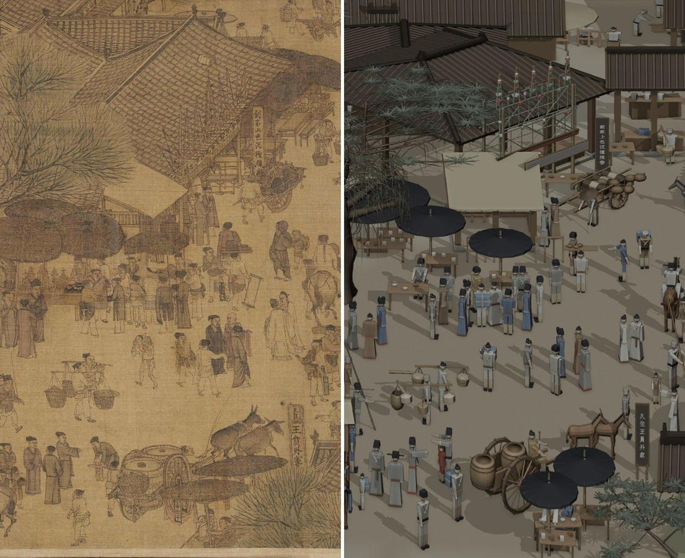
第六轮渲染第五轮渲染第四轮渲染第三轮渲染第二轮渲染第一轮渲染（修正前）有误与缺失（11）
编号
类型
判定
问题
修正
H0147
building
有误
Still a plain dark plank wall box x 1020-1100 y 1360-1590; painting shows a roof corner with ridge-end ornament and lattice railing.
Cut walls below y~1500; build roof corner with ridge-end ornament and a lattice balustrade face.
V0014
vehicle
有误
Bent pusher at x 940-1005 y 30-120 pushes only a small plank; a dark building corner x 1030-1100 y 0-145 covers the barrow spot.
Build the full slatted barrow in front of the pusher, wheel near (1025,100); push the corner building back ~60 px.
K0039
stall
有误
Dark disc x 756-950 y 1440-1570, round and face-on; painted flat ellipse x 622-930 y 1466-1538.
Light canopy now partly visible at x 712-825 y 0-80; painted x 558-768. The left part is hidden by a far dark wall x 550-700 y 0-160.
Move canopy ~90 px left to centre (663,70); lower or move back the far wall so x 558-768 shows.
H0149
building
有误
Hip roof now x 0-840 y 50-480, better; painted roof reaches x~1000 at y 200 and covers x 550-800 y 0-160, where a far dark wall stands. Huanmen keeps red/white/teal blocks.
Extend east eave ~150 px right and raise the ridge ~80 px; huanmen plain dark ink-wood, no coloured blocks.
V0016
vehicle
有误
Two upright casks x 400-560 y 1390-1580 still have open hollow tops, no lids, bungs or rope netting.
Close tops with flat lids and a centre bung; add rope netting over the casks.
T0251
tree
有误
Star pads cover ~40% of painted mass x 0-445 y 95-690; bare drooping twigs x 0-250 y 550-700; a dark trunk at x 0-45 runs down to y~990.
Needle pads 2x denser inside x<445; remove drooping twigs; trunk base at (222,690), remove the left-edge trunk.
K0045
stall
有误
Not readable as its own canopy: it sits behind/inside K0044 at y~570-700; painted dark canopy x 0-205 y 700-850 on a pole at x 58.
Lower canopy ~130 px to y 700-850, in front of K0044; pole at x 52-64 down to y 1000.
P0766
person
有误
Monk still has a dark cap/hair; painting shows a bald head and brown robe.
Bald head, no cap; brown robe.
P0796
person
有误
Toddler built ~1.5x too tall, reads as a small adult in red.
Scale toddler to ~0.6 of current height.
P0801
person
有误
Winged official hat; painting shows a soft dark cap.
hat = soft futou cap without wings.
人群
stall crowd under left umbrellas x 0-650 y 750-1100：画中约 30 人，模型 27 人。Caps and robes read well; tubs gone. Two extra small tables with white cups at x 44-225 y 730-825 stand where painted poles and heads are.
centre street x 600-1000 y 700-1270 (tray vendor, monk group, scholars)：画中约 18 人，模型 17 人。Tray vendor now correct; white-robed scholars good. Monk near (760,1100) still has dark hair/cap.
lower left x 0-600 y 1250-1800 (porters, pointing men, cask cart)：画中约 16 人，模型 15 人。Pole porters and pointing men read well. Robed man at (145,1460) still has a winged official hat. Toddler P0796 is ~120 px tall, painted 78 px.
far street x 400-1100 y 0-160：画中约 8 人，模型 6 人。Railing sitters good; barrow pusher without barrow.
bottom stall x 600-780 y 1640-1790：画中约 3 人，模型 3 人。Seated vendors visible under K0041.
模型多出的东西
(620, 80) Far dark wall/roof box x 550-700 y 0-160 covering the upper H0149 roof and K0040.
(1065, 70) Dark building corner x 1030-1100 y 0-145 on the barrow spot.
(600, 250) Red/white/teal crest blocks on the huanmen towers; painted poles are plain ink.
(130, 620) Bare drooping twig curtain from T0251 over K0044.
(22, 750) Thick dark trunk at the left edge x 0-45 y 460-990.
(135, 780) Two small tables with white cups x 44-225 y 730-825.
(1060, 1480) Tall dark wall of H0147 reaching y~1590.
tile40 · 503.6–519.3 cm 3/5
正确 24 · 有误 12 · 缺失 4 · 忽略 3
Still reads as the same scene: Zhao clinic hall with plaques and post signs, the well yard behind the white wall, the willow, the road crowd, the mat-awning booth with the horse and the foreground roof. New since round 7: the cask and the 解 board are visible beside the A-frame, the hanging basket hangs free, the peddler has his rack with a small canopy, and the two well barrels are separate. Worst: both parasols are gone (only a dark blue-grey dome remains at the top right, and a stall with tables stands where the lower parasol was); the willow is still bare grey wires with pine-like star tufts; the well frame is still an upright fence; the awning is still a plain cream box.
与上一轮相比：Improved: cask and 解 board visible, basket hangs free, peddler rack built, well barrels separated. Worse: both parasols lost (dark dome only, stall where lower one was); floating pole with buckets over the well. Still wrong: willow wires/star tufts, fence-like well frame, round slab instead of brick square, cream awning, short right post sign, hidden F0305, narrow horse, missing shrubs and armchair, stray cube and boxes.
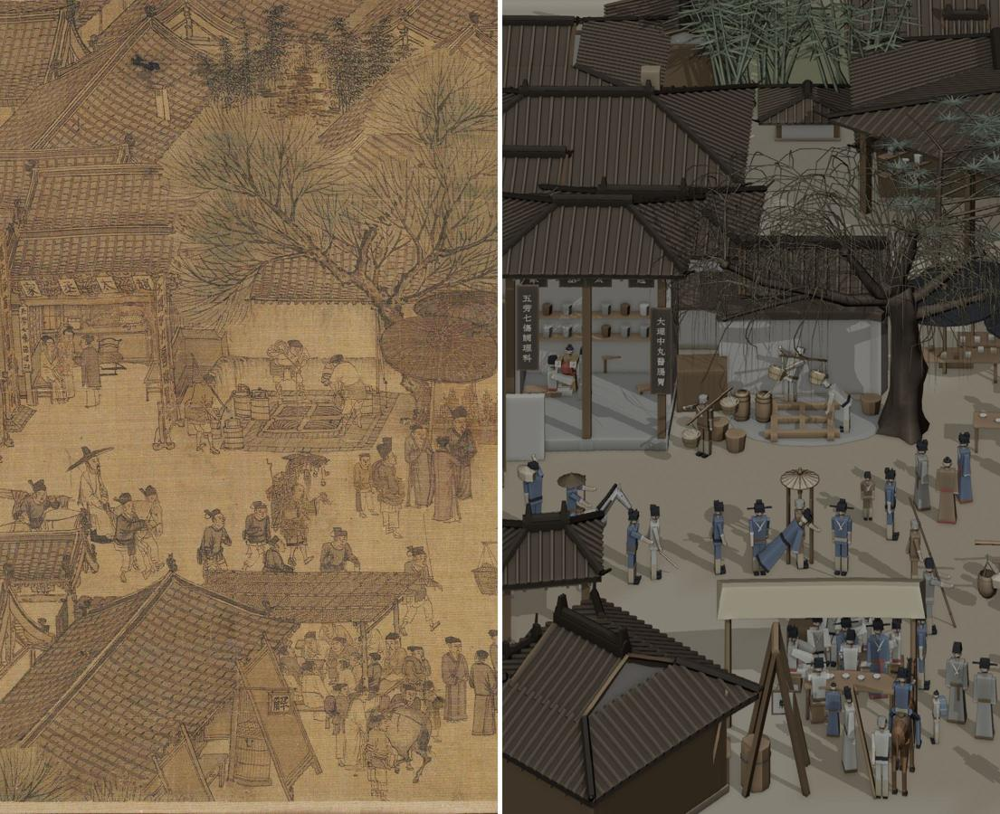
第六轮渲染第五轮渲染第四轮渲染第三轮渲染第二轮渲染第一轮渲染（修正前）有误与缺失（18）
编号
类型
判定
问题
修正
O0262
prop
缺失
No tiered stacks with sprays at x 985-1100, y 850-940; only a plain table edge at the right border.
Build 3 tall tiered items narrowing upward, spray tuft on top, on a stand at (1042,940).
O0263
prop
有误
Only a dark blue-grey smooth dome at x 920-1100, y 600-720; painted is a brown ribbed parasol on a pole. Status now NOT BUILT.
Rebuild the round-7 parasol: brown ribbed canopy, pole, centre (1008,690).
O0264
prop
缺失
Regression: lower parasol gone; a stall with tables and white cups shows at x 940-1100, y 730-850 instead.
Rebuild brown ribbed parasol ~260 px wide, canopy bottom y~850, pole down to (970,1000).
A0113
animal
有误
Brown horse from behind is ~55 px wide vs ~130 px painted plump rump; legs long and thin.
Widen body and rump 2.3x, shorten legs ~20%.
T0253
tree
有误
Unchanged: crown is bare grey wire tangles plus star tufts at x 830-1100, y 200-480; trunk base flares ~110 px wide.
Dense fine drooping leafy strands, green-brown; remove star tufts; trunk base 0.6x.
H0154
building
有误
Above the white wall only dark planks behind the willow at y 550-640; no readable tiled roof x 545-835.
Build a small tiled gable roof x 545-835, eave at y~662; remove the plank panel.
X0209
structure
有误
Unchanged: flat untextured cream box, top y~1280, front face y 1280-1365.
Thin brown woven-mat sheet on 4 posts, no front face, slight tilt toward viewer.
X0210
structure
有误
Still a pale grey round slab x 560-800, y 870-990; painted is a larger diagonal brick square.
Flush brick square x 480-880, y 860-1000, rotated ~45° in plan, brick texture.
X0211
structure
有误
Unchanged upright timber lattice x 590-790, y 880-975 reads as a fence; painted 井 frame lies flat.
Lay the frame flat, 0.2 m high, no upright posts.
H0155
building
有误
Plain gable with a wall and window at x 570-770, y 180-300; painted has stacked layered eaves and a round knob.
Bare leaning posts only, x 590-700, y 1390-1770; painted has two leaning board panels.
Add a plank panel on each A-frame leg, ~0.6 m wide.
F0305
furniture
有误
Not visible; the foreground building's dark wall still reaches x~490 and covers x 441-490.
Move the wall corner ~60 px left or place the table at x 495-560.
G0046
sign
有误
Lettered board on the right post still y ~680-870 vs painted 605-960.
Make the board ~1.9x taller: top y 605, bottom y 960.
T0256
tree
缺失
No shrub tops at the bottom edge x 200-315; roof reaches the bottom.
Low leafy mounds ~0.8 m high in front of the foreground roof.
F0307
furniture
有误
No armchair; hall shows shelves of jars and a small stool near (245,800).
Place a curved-crest armchair at (244,812), visible above the table.
T0257
tree
缺失
No shrub crowns at the bottom-left edge; roof reaches the bottom.
Leafy rounded shrub mounds at x 0-180, y 1650-1772.
P0830
person
有误
Still tilted ~35° in a long blue robe at (640,1190), leaning far into the road.
Tilt ~20°, hands on the awning top edge at y~1265.
P0813
person
有误
Carries a pale box at chest near (860,1100); painted wears a tall dark cap, small bag.
Remove the box; tall dark cap, small shoulder bag.
人群
clinic hall x 0-400 y 650-1000：画中约 5 人，模型 2 人。Only a seated red/white figure and one other; standing attendant and seated woman with child missing.
well x 400-850 y 730-1010：画中约 4 人，模型 4 人。Count matches; a shoulder pole with two buckets hangs in the air over the frame.
road x 250-1100 y 950-1300：画中约 16 人，模型 15 人。Near-uniform blue jackets with X straps; P0830 over-tilted; P0813 still carries a pale box.
booth crowd x 600-1100 y 1380-1770：画中约 22 人，模型 21 人。Seated heads visible; rider astride; reads well.
模型多出的东西
(680, 790) Shoulder pole with two buckets floating above the well frame at x 600-760, y 760-830.
(1020, 790) Stall with tables and white cups at x 940-1100, y 730-850 where the painting has the lower parasol.
(960, 330) Pine-like star tufts and bare grey wires at x 830-1100, y 180-480 instead of willow strands.
(920, 370) Building interior with white cups visible through the willow at x 840-1000, y 330-400.
(250, 1100) Neighbour tile's white rigid horse, neck straight up, on the left roof at x 200-300, y 1060-1160.
(330, 170) Small plain pale cube between back roofs at x 305-350, y 145-195.
(40, 940) Plain pale grey box at x 0-90, y 870-1020 at the clinic's left edge.
tile41 · 516.5–528.0 cm 3/5
正确 9 · 有误 12 · 缺失 0 · 忽略 3
The scene still reads as the painted one: compound roofs at the top, willow, railing, seated man and open gatehouse at left-centre, clinic with its two boards on the right, porters on the road, bare tree and pines, H0163 and H0162 roofs at the bottom. This round the T0259 pine no longer covers the pole porter, T0260 now has one central trunk, and H0163 lost its raised top block. Worst remaining errors: G0049 is now built as two stacked boards with repeated text (x 560-605, y 670-840 and y 840-1080); the stray steep roof slab still floats through the gatehouse/clinic roofs at x 535-730, y 430-600; H0167 is a large dark open roof on posts at x 190-520, y 1300-1550 that the thin pines do not hide; the white horse is still hidden under the H0163 roof.
与上一轮相比：Improved: T0259 trimmed so the pole porter is clear; T0260 now one central trunk; H0163 top block removed and gable end faces left; H0164 west end pulled back to x 320; F0312 now a pale lattice panel; P0844 now stands on the floor. Worse: G0049 became two stacked boards with repeated text. Still wrong: stray roof slab through the gatehouse/clinic roofs, H0157/H0164 tilted slabs, horse hidden by H0163, H0162 too far west with ridge jumble, H0167 prominent, willow sparse, white block in front of the clinic, servant's load pointing up.
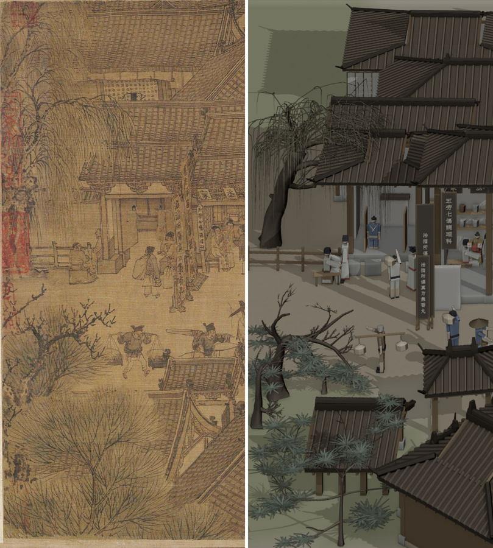
第六轮渲染第五轮渲染第四轮渲染第三轮渲染第二轮渲染第一轮渲染（修正前）有误与缺失（16）
编号
类型
判定
问题
修正
H0157
building
有误
Still loose tilted slabs: one at x 320-530 y 15-220, a diagonal one at x 430-640 y 190-320, about 120 px left of the painted diagonal roof x 560-804 y 130-330.
one continuous hip roof plane, eave descending from (804,130) to (560,330); delete the loose slabs
A0114
animal
有误
White horse still not visible: H0163 roof top at y 1135 covers x 575-804; painted rump and saddle cloth at x 695-804, y 1112-1178.
lower H0163 roof top to about y 1180 or move the horse about 40 px north so the rump shows
H0160
building
有误
Clinic front eave (y 600) and 趙太丞家 board right, but the steep stepped slab still floats at x 535-730, y 430-600, crossing the roof planes.
delete that slab, or place it as a low stepped roof at x 640-804 y 355-505 behind the eave, not intersecting H0166
H0162
building
有误
Roof reaches x 430 at y 1500 (painted eave about x 715 there, line (804,1330)-(560,1800)); jumble of short ridge pieces at x 600-804 y 1350-1450.
move west eave about 100-150 px east to the painted diagonal; one clean ridge with end ornaments
H0163
building
有误
Better: top block gone, gable end faces left. Still roof top at y 1135 (painted 1140-1170), tall bare posts x 600-640 to y 1400, no upturned corner.
roof 35 px lower; posts 50% shorter; add upturned hip corner at about (660,1310)
G0049
sign
有误
Now two boards stacked: upper x 565-605 y 670-840 (治酒所傷) and lower x 560-600 y 840-1080 (full text); painted one board y 630-1027.
keep one board, top at y 630, foot at y 1025, full text once; delete the duplicate
H0164
building
有误
West end now at x 320 (painted 260, fine), but left part is a steep tilted slab x 320-530 y 15-220; eave at y 190 instead of 235.
one flat hip roof plane x 260-740, eave lowered about 45 px to y 235
H0166
building
有误
Front, open passage and door leaves right (eave y 600); roof still plain straight eave with no bracket sets, pierced by the stray H0160 slab.
hip-and-gable with upturned corners; add a dougong row under the eave at y 600-640
F0312
furniture
有误
Now a pale lattice window x 330-430, y 235-320 (improved); painted panel wider, to x 522, with rows of character marks.
widen to x 330-522; replace grid with a dark character-mark texture
H0167
building
有误
Large dark open roof on posts at x 190-520, y 1300-1550 reads strongly; painted only faint tiles behind dense pine.
posts 40% shorter, move 40 px back; T0260 canopy denser so it covers most of the roof
T0258
tree
有误
Crown x 0-450 y 290-600 still open and wiry, sparse strands to y 720; trunk about 60 px thick, leaning at x 40-150.
3x denser hanging strands to y 780 over x 140-445; trunk 50% thinner, more upright
T0260
tree
有误
Single central trunk at x 305 now (improved), but only a few sparse star clumps; painted dense fan sprays fill x 10-565, y 1260-1790.
3x more and broader fan-shaped sprays, filling the canopy to x 560
P0844
person
有误
Whole blue figure visible at x 400-435, y 700-810 in the middle of the passage; painted only a head peeking past the left leaf.
move behind the left door leaf, about 0.5 m back, so only the head shows
P0841
person
有误
White carried object points up beside the head at x 640-690, y 1020-1080; painted horizontal over the shoulder, pointing left.
rotate the carried object to horizontal, pointing left
P0843
person
有误
Figure at x 450-500 y 880-975 raises an arm and wears a conical hat; no large cloth sack on the left shoulder.
add a large sack slung over the left shoulder; arm down holding it
P0838
person
有误
Woman holding the child still not clearly readable; child not visible.
female costume and a visible child held at her chest
人群
in front of the gate and signs, x 220-640 y 650-990：画中约 6 人，模型 6 人。Seated man, man at the gate post, man by the sign in place. P0844 is a whole figure in the passage; sack porter has no visible sack.
clinic interior, x 680-804 y 700-900：画中约 4 人，模型 3 人。At the right height; one figure with a red skirt may be the woman, child not readable.
road, x 380-804 y 980-1250：画中约 3 人，模型 3 人。Pole porter with both loads, clear of the pine (improved). Servant's load still points up; rider has a broad conical hat, no rod.
模型多出的东西
(655, 940) Large white block x 610-700, y 870-1015 in front of the clinic; not in the painting.
(630, 515) Stray steep stepped roof slab x 535-730, y 430-600 (see H0160).
(160, 190) Flat empty grey-green plane x 0-320, y 80-300 where the painting has willow tops and the west end of H0164.
(580, 840) Duplicate G0049 board x 565-605, y 670-840 above the real one.
(620, 1350) Tall bare H0163 posts and empty floor x 580-680, y 1300-1400.